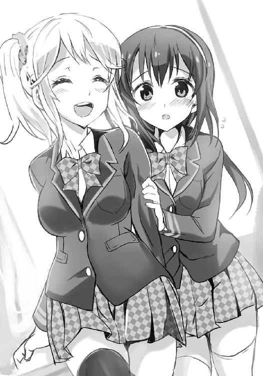

| SE-Xふぁいる ようこそ、斎条東高校「超常現象☆探求部」へ! (電撃文庫) | |
| 五十嵐 雄策 | |
| (2016) | |
本書（電子版）に掲載されているコンテンツ（ソフトウェア／プログラム／データ／情報を含む）の著作権およびその他の権利は、すべて株式会社ＫＡＤＯＫＡＷＡおよび正当な権利を有する第三者に帰属しています。
法律の定めがある場合または権利者の明示的な承諾がある場合を除き、これらのコンテンツを複製・転載、改変・編集、翻案・翻訳、放送・出版、公衆送信（送信可能化を含む）・再配信、販売・頒布、貸与等に使用することはできません。
桜の花びらがヒラヒラと舞っていた。
まるで今日という日を祝うかのように、軽やかに辺り一面に降り注いでいる。そのピンク色のシャワーの間をすり抜けるように、真新しい制服に身を包んだたくさんの生徒たちが歩を進めていく。
今日は、高校の入学式だった。
この学校に通うことになって、初めて登校する記念すべき日。だれもが期待と緊張が入り交じった面持ちで、これから三年間を過ごすであろう学舎を見つめているのが目に入ってくる。もちろん俺──護田映一朗もそんな中の一人だ。これから待ち受けているであろう数々の青春イベントを夢想して、胸の奥が熱くうずいているのを感じる。
校門から校舎へと続く桜並木では、部活の勧誘が行われていた。
サッカー部、野球部、演劇部、文芸部、テニス部、卓球部、地学部、その他たくさん。部活も、高校生活の楽しみの一つである。この斎条東高校は運動部・文化部双方に力を入れているということもあって、中学に比べてより多種多様な部活が存在しているのだった。
ううん、どれに入るのが一番青春を感じることができるだろうか。悩むところだ。
青春を満喫することができるというのが、俺が部活を選ぶ上で一番のポイントだった。いや部活だけじゃない。この高校生活において、それは全てにおいて指針となる最重要な基準だった。
青春。いい響きである。華々しくて瑞々しくて甘美。学生時代のほんの数年の間にしか味わうことができない珠玉の甘露だ。
とある事情で中学時代はまったくもって味わうことができなかった青春を、この高校生活では今度こそエンジョイすべく、俺は密かな情熱を燃やしているのだった。うん、ぬか漬けのキュウリに付着したぬかのごとく青春にまみれた毎日、がんばるぞ。
そんなことを考えながら入学式が行われる体育館へと向かっていると。
と、その途中で生徒たちが何人も集まっているのが見えた。
皆一様に足を止めて、揃って体育館の横にある部室棟を見上げている。？ 何だろう。屋上に何かあるのかな？
疑問に思って、屋上を見上げてみると......
「............え？」
そこに、宇宙人がいた。
いや正確に言えば宇宙人のマスクを被った一人の生徒だった。ディスカウントショップで売っているような典型的なリトルグレイ。ある意味......青春からは一番ほど遠い存在である。リトルグレイの下はリボン付きのブレザーとスカート姿であることから、おそらく女子生徒なのだろう。リトルグレイ（♀）は身を乗り出すように足下を見渡すと、こう口にした。
「──諸君、超常現象は好きかな？」
マスク越しでもよく通る澄んだ声だった。決して大きいわけではないんだけれど、凜とした涼やかな響きで耳心地よく聞こえてくる。周りを歩いていた生徒たちも気になるのか、その場に次々と足を止めて屋上を見上げていた。
「諸君も知っての通り、ＵＦＯ、ＵＭＡ、都市伝説、超能力、オカルトと......世界には、様々な魅力に満ちた超常現象が溢れている。だけどそれらの中で謎が解明されているものはごく僅か。残りのほとんどは謎のまま正体不明の現象として放置されている。それは歯がゆいことじゃないかね？ どうにかして真相を突き止めたいと思わないかね？ ──否、思うはずだ。ならば......いっしょに解明してみようではないか。未知なる謎に挑んで、その正体を共に解き明かしてみるのだ。今、少しでも私の話に興味を持った者は、『超常現象☆探求部』が歓迎する。諸君らも『超常現象☆探求部』に入って、私に、楽しくアブダクションされてみよう！」
「............」
............ええと。
............もしかしてこれって、部活の勧誘、なんだろうか......？ 外見と説明のやり方的にはぶっ飛びすぎてて信じがたいんだけど、内容的にはそうとしか思えない。しかし、そんな放課後にお茶しませんかくらいのテンションでアブダクションとか言うのは色々どうかと思う。そもそもアブダクションってＵＦＯによる拉致誘拐だってのに......
周りもそのノリにどう反応していいか分からないようで、顔を見合わせながらざわざわとしている。
そんな周囲の空気をまったく意に介さずに、リトルグレイ（♀）はさらに声を大きくすると、
「我が『超常現象☆探求部』はいつでもだれの入部も歓迎している！ 今入部してくれた人には......何と宇宙人が人体に埋め込んだという貴重な金属片をプレゼントしよう！ さあ、興味がある諸君は、放課後に生物準備室まで来ることだ！」
バサッ。
明るい声とともに、屋上から何かがばらまかれた。
それは『超常現象☆探求部』とやらについての詳細が書かれたビラと......そして、折り紙で折られた無数のＵＦＯだった。
朝の静謐な景色に、桜の花びらとともに舞ういくつもの小さなＵＦＯ。銀色の機体が太陽の光をキラキラと反射して、それはどこか幻想的な光景を作り出していた。
「......あ......」
そのまるで何かの物語のようなワンシーンに、思わず見とれてしまったのは否定できない。朝靄の中に白光とともに降り注ぐＵＦＯのキラメキに、僅かにだけど......青春の欠片を感じ取ってしまったのは否定できない。......冷静に考えれば、まったくもってそんなはずないのに。
それが、最初の出会い。
これから長い付き合いとなるこのリトルグレイ──ろーちゃんと、俺との、初めての邂逅だった。
１
式前のインパクトが強すぎて、正直入学式の内容自体はほとんど頭に入ってこなかった。校長先生が建学の精神や友情の大切さ、最近の時事的話題である地球の周りを不自然に回っているという隕石の話、はたまた自宅で飼っているオカメインコのかわいらしさについて色々と語っていたような気もするが（最後が一番長かった）、不自然に大きかった頭がヅラっぽいなと思ったことくらいしか印象に残っていない。
そんな入学式を終えて、新入生たちはそれぞれの教室へと向かうこととなった。
俺は一年四組だった。校舎に入り階段を上り、四階にある教室へと足を運ぶ。この斎条東高校では、一年生は四階、二年生は三階、三年生は二階......という具合に、学年が下なほど教室の階数は上がっていく。若いうちほど運動しろということなのだろう。
えっちらおっちらと五分ほどかけて階段を上りようやく教室へと辿り着き、席を探す。席はあいうえお順で座ることになっているようで、俺は廊下側から二番目の列の一番後ろだった。
席が間違っていないことを確かめてひと息吐く。
周りでは、これから一年間クラスメイトになるだろう生徒たちが互いに自己紹介を兼ねた談笑をしていた。
「なあなあ、お前何中？」
「俺は南中。部活とかってもう決めた？」
「あー、まだ。運動部にしようとは思ってるんだけど」
「そういえば部活っていえば、入学式の前になんかすごいの見たよ。宇宙人が部室棟の屋上で演説してて......」
「ああ、それ俺も見た見た！ あのリトルグレイだろ？ どこのハロウィンかと思った。でもなんかこの学校ってそういうヘンな噂がたくさんあるらしいぜ。スズメバチみたいな外見をした宇宙人の生殖実験体がその辺を徘徊してるとか、意中の後輩に告白できなかった男子生徒の霊が夜な夜な暗視ゴーグルをかけた姿で校舎を徘徊してるとか、宇宙人とのハーフが生徒に混じって生活してるって話も聞いたことある」
「え、マジなん？」
「やだ、こわーい」
そんなやり取り。
机の上を片付けながらそれとはなしに耳を傾けていると、
「──ねえねえ、今いい？」
「お？」
ふいに声をかけられた。
横から話しかけてきたのは一人の女子だった。明るめの髪色にイタズラっぽい表情。だけど全体的に、どこか親しみやすい雰囲気を持っている。
「あたし、碑文谷浅葱っていうの。斎条南中。キミは？」
女子は八重歯を見せながらネコのような笑みを浮かべると、小首をかしげながらそう訊いてきた。
「あ、俺は護田。護田映一朗。西海老中だ」
そう返すと、女子は少しだけ驚いた顔をした。
「へえ、西海老中って、ずいぶん遠くから来てるんだね。何か事情でもあるの？ そんな風に見えて、実は口癖が『......ひき肉にしちゃうよぉ？』のヤンキーとか？」
「......あいにく、ただの家庭の事情だ」
そんなバイオレンスな特攻事情じゃない。
「ふうん、そなんだ。まあとりあえず、よろしくね、映一朗。あたしのことは碑文谷閣下でいいから」
「〝さん〟とか〝さま〟とかを飛び越えていきなり閣下!?」
どんだけ偉いんだこの人!?
「あはは、うそうそ、浅葱でいいよ。でもキミ、いいリアクションするね」
ひらひらと手を振って、人懐こそうに女子──浅葱が笑いながら話しかけてくる。見た目と同じように、明るいキャラクターみたいだ。
「ていうか入学式、退屈だったよねー。校長、絶対ヅラだったし。頭がフリーザ様の第三形態みたいだったよ」
「あー、確かにあれはないよな。もう少しバレないように工夫すればいいだろうに」
「マー○とかアー○ネイチャーとか？ でももしかしたら本人はあれで気付かれてないつもりなのかもよ？ 知らぬが仏ってやつ？」
「仏はパンチパーマな気もするけどな」
「あ、それは確かに」
そう言って笑い合う。
「んー、それにしてもせっかく高校に入ったのに、何だか中学とあんまり代わり映えがしない感じだよねー。校長の話は長いだけだったし、入学式の内容も通り一遍だったし。高校も中学とあんま変わらないのかなー。せっかく花の女子高生になったんだから色々やりたいことがあるのに。あ、映一朗は何かやりたいこととかってあったりする？」
と、浅葱が訊いてきた。
ふむ、やりたいことか。
それに対する俺の答えは決まっていた。
「ああ、ある。青春を満喫したいんだ」
「青春......？」
「ああ。一生のうちで限られた期間にしか経験できない青春......今はまだ真っ白な青春アルバムを、七色に光り輝く青春イベントで埋め尽くすのが目標なんだ」
熱を込めて語ってみたものの、
「......ふうん、大変そうだね。なんかよく分かんないけど、がんばってね」
浅葱は興味なしって顔でほぼスルー状態だった。むう、いまいち青春の大切さが伝わらなかったみたいだ。まあだれかに分かってもらうようなもんじゃないからいいけどさ。
......ところでそれはともあれ、さっきから気になっていることが一つあるんだが。
それは何かというと、目の前の浅葱の動きである。浅葱はさっきから脚をやたらと組み替える。おそらくクセなんだろうが、青春的にはそれがすげぇ目につくというか。ほら、膝上二十センチはあろうかという短いスカートだから気を付けないと色々と見えてしまうかもしれないし......
「ん、なに？ どしたの？」
「いや、その......（スカートが......）」
「......ん？ ああ、これ？ へいきへいき、減るもんじゃないし。ちらっ」
「わ、ば、バカっ、やめろって！」
わざと脚を上げてきわどいポーズを取る。だけどギリギリのところで青春のディスカバリーポイントは見えなかった。
「へっへーん、だからだいじょうぶなんだって。ちゃんと見えそうで見えないようにする術は心得てるんだから」
「そ、そういうもんなのか？」
「そうそう、そういうものなの。──って、ちょ、鼻血出てるよ！」
「え？」
ブワッ。
言われて手をやってみれば鼻元に流れる温かい感触。ケチャップのように赤い鼻血が滝のごとく噴き出していた。
「もう......そんなに興奮したの？ 顔のまんまでむっつりすけべなんだから♪ あ、てゆうかさっき言ってた青春ってそういうこと？」
「ち、違う！」
慌てて否定する。というかむしろこの鼻血は青春の対極に位置するところのものだ。
それにしてもおかしいな、何だってこんな場面で鼻血が出たんだろう。結局何も見えなかったわけだし......
ともあれこれ以上このことについて話していてもいいことはない。
俺はテイッシュを鼻に当てながらゴホンと咳払いをして、話題を変えることにした。
「あー、そういえばさ、今日、入学式の前にリトルグレイを見たんだけど、浅葱も見た？」
「リトルグレイ？」
「ああ、灰色の頭の大きな宇宙人。部室棟の屋上から部活の勧誘をしてたみたいなんだけど」
その時のことを説明すると、浅葱は何かに思い当たったかのようにうなずきながら腕を組んだ。
そして何やら考え込むような表情をして、顔を上げると、
「あー、それなんだけどね、たぶん──」
頭をかきながら何かを言いかけて。
その時だった。
キュッ......
「......ん？」
なんか、いた。
何か小さくてふわふわとした人影が、浅葱の制服の袖をちょこんと摘みながらしゃがみ込んでいた。頭に星形のカチューシャを着けたそのちんまい女子生徒は、窺うようにおどおどとこっちを見上げている。
「......何だこの小動物は？」
そう形容するのがぴったりだった。浅葱がネコなら、こっちは犬みたいだ。それもゴールデンレトリーバーとか秋田犬とかのたくましい感じのやつじゃなくて、ミニチュアダックスフンドとかマルチーズとか、そういったちっこいの。
「......お手」
「......わ、わふ？」
ペタッ。
試しにそう言って手を出してみたら瞬時に手を乗せ返してきた。
「おかわり」
「......わ、わんっ......！」
パシッ。
素早い反応。ううん、よく躾けられているな。
訓練された見事な犬リアクションに感心していると、その様子に複雑そうな顔をして、浅葱が口を開いた。
「あー、えっと、この子はあたしの友達なんだけど。......犬じゃなくて」
「......そうなのか？」
浅葱の言葉を受けてワンコ──もとい友達の方に目を遣ると、彼女は慌てたようにわたわたと顔をうなずかせた。
「............は、はい......」
声ちっちゃいな。さっきの鳴き声の方がよっぽどいい声だったんだが。
「この子は白羽根鈴緒っていうの。オナ中で、親友なんだよ」
「............よ、よろしく、です......」
またちっちゃい声でおずおずと頭を下げてくる。
「あ、おう、よろしくな」
「......っ......」
そう返すと、白羽根さんはびくっと身体を震わせて浅葱の後ろに引っ込んでしまった。そのまま時折ちらちらと臆病な仔犬のように顔を覗かせるだけである。うーん、なんか警戒されてる......？

「あー、うん、鈴緒はちょっと人見知りなんだよ。初対面の人が苦手っていうか。でも映一朗の顔もなんか興奮する殺人鬼みたいで怖いし、しかたないってことであんま気にしないであげて」
「......」
ちょっとっていうかほとんど繊細な小鳥ちゃんレベルだと思うんだが。あと今どさくさに紛れてものすごく失礼なことを言わなかったか？
さらっとディスられた事実に憮然とした顔になっていると。
「............あ、あの............」
「ん？」
その小鳥ちゃんが、浅葱の背中から顔を出しながら死にかけの鈴虫のような声を出していた。ん、何だ。何か言いたいことがあるのか？
「......さ、さっき、その、りとるぐれいって──」
「？」
何かを言いかけて、
ガラリ。
「はい、みんな席に着いてー。これからホームルームを始めますよ」
と、そこで担任と覚しき女性教師が声を上げて教室に入ってきた。「ととっ、また後でね」と浅葱が慌てたように前を向く。白羽根さんもぺこりと会釈をして慌てたように自分の席へと走っていった。そして途中で机に盛大に膝をぶつけて「......うう......」と悶絶していた。
「......」
うーん、ホントにワンコみたいだ。
つーか何を言いかけてたのかね？
ホームルームは、自己紹介から始まった。
新学期における恒例の行事。まずは担任の先生が軽い挨拶をして、その後に窓側の麻生くんから順に進んでいく。
「麻生一です。斎条西中出身で、趣味はスワヒリ語とクルーザーでのカジキ釣りとフランス料理のフルコース作り......を、昔からやりたいと思っていました（笑）。よろしくお願いします」
皆、一発ギャグを盛り込んだり、ちょっとした笑いを誘う話を挟んだりしつつ、滞りなく自己紹介している。
うーん、こういうのは最初が肝心だからな。青春溢れる高校生活を送るために過不足のない自己紹介をしなくては。
どこぞの非公認でありながら公認以上の知名度を護る梨の妖精のモノマネでもしようか、それとも特技のヨーヨーの話をしようかと迷っていると、
そんな中、
「はい、佐藤さん、ありがとうございました。それじゃあ、次は白羽根さん」
「......は、はい」
（あ......）
先生に促されて、白羽根さんが立ち上がる。周囲の視線が彼女の方に集まるのを感じた。白羽根さんはそれに気圧されたかのように顔をうつむかせると、
「......え、えっと、白羽根鈴緒です。さ、斎条南中学校出身です。しゅ、趣味は......おもに夏の夜空のへんたいかんそくと読書と史跡巡りで......あ、あと、飼ってみたいペットはモンゴリアン・デスワームです......」
やっぱり声ちっちゃ！
二メートルほどしか離れていない俺の席でかろうじて端々が聞き取れるレベルである。ていうか変態観測とモンゴリアン・デスワーム......？ や、冷静に考えてみれば変態観測が天体観測だろうだってことは文脈から理解できたが、もう一つのモンゴリアン・デスワームが問題だった。モンゴリアン・デスワーム......爬虫類の仲間か何かか？ それにしては響きがやたらと剣吞なんだが......
......ううん、分からん。彼女はいったい何者なんだ。さっきちょっとコンタクトしただけなのに、何だかやけに気にかかるんだよな。
「碑文谷浅葱でーす。斎条南中出身です。趣味は人間観察と害虫駆除と食べ歩きとスマホのソシャゲで、フレンドはいつでも募集中です。よっろしくー♪」
と、そんなことを考えていたら、気が付けば浅葱が自己紹介を終えていた。まずい、もう俺の番は目前だ。結局何にするか考えてない！
「はい、保茂田くん、ありがとうございました。それじゃあ次、護田くん」
「あ、は、はい」
名前を呼ばれて慌てて立ち上がる。お──落ち着け落ち着け。普通にやれば問題ない。名前を言って出身中学と趣味について少し話せばそれで大丈夫だ。
俺はヒッヒッフーと深呼吸をして、
「え、ええと......も、もりっ、モルダです。出身は西海老中で......」
嚙んだ。
いきなり嚙んでしまった。
それもよりによって初っぱなの自分の名前のところで。いやモルダって何だよ！
自分に自分で突っ込みを入れる。木材の四面を同時に切削する木工機械じゃないんだから......
その時だった。
ガタリ！
そんな音とともにだれかが立ち上がったようだった。
椅子から立ち上がり驚いた表情でこっちを見つめていたのは......白羽根さんだった。え、どうして？ もしやあんな顔して「ガタガタととろい自己紹介してんじゃねぇよこのクソ野郎が！」なんて凄みだすとか......？
白羽根さんの隠されたバイオレンス性（推定）におののく俺に、白羽根さんは震える声でこう口にした。
「......モ、モルダー？ モルダーなんですか......？」
「......え......？」
それは今までで一番大きな声だった（それでも標準以下のレベルだったけれど）。
ぱちぱちと瞬きをしながら、真っ直ぐな目をこっちに向けてきている。モルダーって、それって......
「あ、あの、白羽根さん、どうしたんですか......？」
担任の先生が怪訝そうにそう尋ねた。
「......っ......」
その声に我に返ったのか、白羽根さんはそのまま真っ赤になって顔を隠すように席に着いた。それきり白羽根さんはうつむいたまま、ホームルームが終わるまでピクリとも動くことはなかった。
だけど白羽根さんが口にした名前。それがアメリカで大人気で、日本でも一時期話題になった、とあるドラマの主人公の名前であることを、俺は知っていた。
そしてそのドラマは。
超常現象をテーマにしたもの......なのだった。
２
その日は入学式ということで、ホームルームが終わればあとは下校するだけだった。
今日は学校生活に関する大まかなガイダンスのみを受けて、本格的な授業などは全て明日からということになる。
皆が帰り支度をする中、隣の浅葱もよっこらせと立ち上がった。
「さ、かえろかえろっ。せっかく早く終わったから今日は乙女の非情な戦場、焼き立てクッキー食べ放題に行ってやるんだぜー！ 映一朗はどうするの？ いっしょに行く？」
「いや、俺は部活見学に行ってくる」
「部活見学？」
「ああ、今日からやってるって聞いたから」
「確かにホームルームでそんなこと言ってたような気もするけど......入学式当日からなんて熱心だねー」
「そりゃあ、どの部活に入るかは青春の大切な選択肢だからな」
おそろかにするわけにはいかない。
「そか。その日にできることはその日にやる。明日また同じチャンスがくるとも限らないもんね。じゃあがんばって。また明日ね」
そう手を振って浅葱は教室を出て行った。そういえば白羽根さんの姿もいつの間にか教室にない。浅葱の後ろについてひっそりといっしょに帰ったのだろうか。さっきのリアクションが何だったのかちょっとだけ気になってたんだが......
そんなことを何となく考えながら、机の上にあったカバンを手に取って、俺も教室を出る。
さて、どこの部活から見学してみようか。メジャーなところで言えばサッカー部や野球部、バスケ部、バレー部あたりが捨てがたい。運動系だけじゃなく、文化部系で吹奏楽部や合唱部もいいかもしれない。意表を突いて文芸部や美術部なんてのも青春的にはまったくありだし......
色々と考えを巡らせていて。
「......」
そういえば朝に遭遇したリトルグレイ（♀）......あれも部活の勧誘だったっけか。確か『超常現象☆探求部』とか何とか。生物準備室が部室だってビラに書いてあった気もしたっけな......って、いやいや！ あれだけはあり得ないから！
せっかく青春をあますことなく満喫できるチャンスを、中学時代と同じように棒に振りたくはない。
首をブンブンと振って、さてどこに行こうかと再度思案しようとした俺に、
「──そこのモルダくん！」
ふいに声がかけられた。
そこまで大きいわけではないのによく通る耳心地のよい声。
若干イヤな予感がして振り返って見ると......階段の上でなぜか腰に手を当てながら屹立するリトルグレイ（♀）の姿があった。
「............」
何でいんの？
確かに今ちょっと考えてはいたけれど決してお呼びでない......というか、むしろ出てきてほしくない類の方面の人（宇宙人）なのに......
思わず渋面になる俺に。
「こんにちは、いい放課後だね、モルダくん」
「......護田です」
「それは些細な問題だよ」
いや全然些細じゃないし！ そんなＦＢＩの変人捜査官といっしょにされたくない。ていうか何でその呼称を知ってんだ、このリトルグレイ。
怪訝な表情になっていると、リトルグレイはさらに続けた。
「時にモルダくん」
「だから護田──」
「一つ私から提案があるのだが、聞いてくれないかねモルダくん」
どうやら人の話を聞かないリトルグレイらしい。抗議する俺の声をさらりとスルーして、一歩前に踏み出すと、さも素晴らしいことを口にするかのようにこう言った。
「──私と第四種接近遭遇をしてみる気はないかな？」
「........................は？」
「だから第四種接近遭遇だよ。ああ、少し分かりにくかったかな。接近遭遇には第一種から第七種までの七つあり、第一種がＵＦＯを目撃する、第二種がＵＦＯから何らかの影響が及ぶ、というように定義されている。第四種というのはその中でも上位のものであり、ＵＦＯの搭乗員を拘束する、あるいは拘束される、という定義になっている。つまりそれは遠回しに私に拘束されてみないかと言っているのであるのだが......」
「......」
「まあ要するに、嚙み砕いて言えば私といっしょに未知なる超常現象を追いかけてみないか、ということだよ。どうやらきみは私に対して興味を持ってくれているようだし、それに何よりその名前......もはや運命としか思えない。今日初めて会った気がしないというか、モルダだなんて、まさに『超常現象☆探求部』に入るただそれだけのため、それ以外では単調で退屈極まりない働きアリのような人生を送る星の下に生まれたような名前だよ！」
「............」
......そんなピンポイントかつ汎用性のなさそうな運命、全力でイヤなんだが。
それに俺は別にこのリトルグレイに興味なんて持っていない。いやそれは多少は気になりはしていたが、それは興味というよりもどちらかと言えば怖いもの見たさの野次馬根性だ。
なので、
「悪いがその気はない。それじゃあ」
そう言ってその場から足早に立ち去ろうとして。
「ちょ、ちょっと待ちたまえ！ まだ話は終わってはいない！」
逃がしてはくれなかった。人間のことが大好き（食料的な意味で）なヒグマを狙うマタギのような必死な形相で追いかけてくる。ちっ、しつこいな。こういうのは相手をしたら負けだ。
「............」
その声に答えることなく半ば駆け足で離脱しようとする俺に、
「だ、だからちょっと待つんだ！ 待って！ 待ってください......！ あっ......」
「？」
小さな叫び声が聞こえた。
何だ......と思い振り返ると、そこには盛大に宙を舞うリトルグレイの姿があった。
階段を踏み外しでもしたのか、スカートをはためかせながら、一直線に俺の方へとすっ飛んできていて......
「ちょ、まっ......」
避けるヒマもなかった。
ベキッ......！
「ぐえっふ......」
見事な浴びせ蹴りが俺の顔面に入った。
一瞬にして意識が飛ぶ。
我ながらどうかと思う間抜けな声を上げて、その場に崩れ落ちるように倒れ伏す。意識を失う直前にかすかに聞こえてきたのは、リトルグレイの「ひ、ひぃいいい！ し、死んだ、死んでしまった！ ど、どうしよう......？」という声と、視界一面に広がるスカートの中の真っ白な布地だった。......死んでねぇよ。
★
それは真っ白な光だった。
どこまでも限りなく白一色で、目も眩むほどのまばゆい光。
まるで世界の全てを包み込むかのように辺りを覆い尽くしていて、他には何も見えない。
完全にホワイトアウトした視界の中、声が聞こえた。
「しっかりするんだ！ 大丈夫か......！」
そんな必死な声。
意識はぼんやりとは覚醒しているんだが、身体が動かない。
「大丈夫だ......！ 今、助けるから......！」
背中には柔らかな感触があった。
布団か何かに寝かせられているのだろうか。それが何かは分からないが、寝心地は悪くなかった。このままずっとここで横たわっていたくなってしまう。
「......」
そもそもどうして俺はこんなところで寝ているんだったっけか......？
まだうまく回らない頭で記憶を辿る。最後に思い出せるのは真っ白な何かが迫ってきた光景。その何かが視界一面に広がって、気付くとこうして横たわっていたわけで......
と、その時だった。
「寝てはダメだ！ 起きるんだ......！ きみを死なせるわけにはいかない......！」
その声に呼応するかのように、俺の意識は浮上していき──
★
目を開くと、淡く輝く白い光が見えた。
頭上でチカチカと瞬く不安定な光。背中にはふかふかとした柔らかな感触がある。ここはどこだ......？ 何で俺は寝てる......？ 頭がぼんやりとしていて視界が定まらない。何だかこういうのを前にも経験したような気がする......
そんなことを思いながら周囲に視線を送っていると。
「──お、おお、目が覚めたか！」
ぬっ。
目の前に突然リトルグレイの顔が現れた。
「う、うおおおおおおっ!?」
な、何だ、何が起こった!? これはどういうことだ!? ま、まさか本当にアブダクションされたとか......!?
パニックになる俺を見て、リトルグレイが大きくため息を吐いた。
「......人の顔を見てそんなに騒がれると非常に心外なんだが......」
悲しそうな声だった。いや、んなこと言われても目が覚めていきなり目の前にリトルグレイがいたらだれだって驚くっつーの！ 心臓が止まりそうになったぜ......
まだバクバクとする胸を右手で押さえていると、
「それにしてもそれだけ大声が出せるということはどうやら大丈夫みたいだな。一瞬絶命してしまったかと心配したが、無事でよかった。というかさっきはすまなかった......」
「さっき......？ ......ああ」
その言葉に記憶が少しずつよみがえってくる。そうか、俺はこいつから浴びせ蹴りを受けて気を失ったのか......
「見たところ大きな怪我はないようだったし、保健医も不在のようだったので、不躾だとは思ったがひとまず部室に運ばせてもらった。ここには布団もあったのでな」
確かに俺が横たえられていたのは柔らかな布団だった。しかも高級そうな羽毛。何で生物準備室にこんなものがあるのかね......？
疑問に思いつつ、身体を起こして、辺りを見回す。
生物準備室というだけあって、部屋の中には布団以外にも様々なものが置かれていた。定番の人体模型や顕微鏡、試験管。机の上にはアルコールランプが置かれている。さらにはカエルのホルマリン漬けや恨めしそうな表情をした人間の干し首まで......って、干し首!?
思わず二度見すると、
「ああ、それは呪いの干し首だ。名前をギガゾンビちゃんという。目が合うと三日で苦しみ抜いた挙げ句に全身の毛穴から血を吹き出して死に至ると言われている」
「！」
そんな危ないもんをルンバみたいにその辺に転がしておくなよ！
「大丈夫だ。目は縫い付けられているから。ただ時々世の中の全てを憎むような鋭い眼差しで見開いているのを見たという報告もあるから、油断しないことだね」
「......」
窓から投げ捨ててしまえ、そんなもん。
まあそれはともあれ。
「それで......こんなところにまでに引っ張り込んで、俺をどうしたいんだ？」
核心に触れてみた。とはいえこれまでの流れからだいたい想像はついているんだけれど。
その問いにリトルグレイは「うん」とうなずくと、うかがうようにこっちを見た。
そして少しだけ神妙な声になると。
「実は......きみに、『超常現象☆探求部』に入部してもらいたいんだ」
「悪いが断る。それじゃあ」
「だ、だから、ちょっと待ちたまえ！ さっきから判断早いな！ 少しくらい話を聞いてくれたっていいだろう！」
足早に生物準備室を出ようとしたところ、熱海にある金色夜叉の像（のお宮の方）のように追いすがってくる。
「ま、まったく......せっかちだな、キミは」
「青春の時間は有限なもんで」
いつまでもこんなところで引っかかっていたら他の部活を見学する時間がなくなってしまう。それにさっき聞いたモルダだの運命だののよく分からない理由じゃ、とてもじゃないがこれっぽっちも入部しようなんて気にはなれない。
その言葉にリトルグレイはふう......と小さく息を吐いた。そして楕円形をした顔を少しだけうつむかせながら、観念したようにこう口にした。
「実は......このままだと、『超常現象☆探求部』はこの学校から消えてしまうんだ」
「......」
「この『超常現象☆探求部』は何年か前に廃部になってしまった......本来であれば今はもうない部活なんだ。それを何とか復活させようと入学前から学校側に掛け合ってみたのだが、返答は芳しくない。それでもどうにか交渉した結果、妥協案としての条件を引き出すことができた。その条件というのが......一学期が終わるまでに部員を五人集めることなんだ。それが満たされなければ復活は認められないと......」
苦しげにそう言い放つ。
なるほど......そういう事情があったのか。だから朝のビラまきといい、今の食い下がり方といい、なりふり構わない感じのやり方で勧誘していたってわけだ。部活の命運がかかっていたから必死だったんだろう。きっとこのリトルグレイにとって『超常現象☆探求部』の復活はそこまで大事なことなんだな。それは分かった。
だけど......だからといってそれは俺には関係のない話だ。冷たく聞こえるかもしれないけれど、困っている人たちを全て気にしていたらキリがない。青春のためにも、こっち方面には極力関わりたくないわけだし。
だから、
「悪いけど、俺は力にはなれない──」
そう言いかけた俺に、
「......ここにはね、青春がたくさん詰まっているんだ」
「青春？」
その単語に思わず足を止めて反応してしまった。
リトルグレイが小さくうなずく。
「うん、そう、青春だ。未知のものに対する夢。正体の分からないもの、知らないものに対する憧れと愛情と言い換えてもいいかもしれない。私にとって、超常現象は青春そのものなんだ。今の自分の生活全てを懸けてでも追い求めたいもの。ＵＦＯ、怪奇現象、オカルト、都市伝説、妖怪、超能力、ＵＭＡ、超古代文明......きみは本物のＵＦＯを見たことがあるかい？ チュパカブラと追いかけっこをしてみたいと思わないかい？ トイレの花子さんが本当におかっぱ頭をしているのかどうか気にならないか？ ムー大陸は本当に一夜にして沈没したのだろうか？ だれしもが心の奥底では密かに持っている、不確かなものを探求したいという純粋な欲求......失われてしまった夢を取り戻すためにある場所が、この『超常現象☆探求部』なんだ。それはまさに青春そのものと言ってもいい。私は......その青春の場を失いたくないんだ......」
「......」
その言葉からは、リトルグレイがこの部活に懸ける熱意が感じ取れた。
いつの間にかなくしてしまった未知のものに対する夢、真っ直ぐな好奇心。それらを追い求めることが、彼女（？）にとっては青春そのものなんだろう。熱弁しているのは具体的にはチュパカブラやらトイレの花子さんやらについてってのが若干アレだし、一般的な賛同はまったくといっていいほど得られないとは思うが。
とはいえだったら......俺にはそれを頭から否定することはできない。力になってほしいというのなら、できる限りそうしてやりたいとも思う。でもなあ、その対象がよりによって超常現象っていうのがなあ......
まだ踏ん切りが付かない俺を見て、リトルグレイ（♀）は思いついたかのようにこう口にした。
「そ、そうだ、よかったらこれからちょっとだけ青春の片鱗を味わってみないかな？」
「青春の片鱗？」
「うん、体験入部というやつだ。実際に自分の身で超常現象というものを体験してみるのが一番よく分かると思う。百聞は一見にしかず。ちょうどいい超常現象のネタがあるんだ！」
必死な表情でそう言ってくる。
まあ......それくらいなら付き合っても、いいか。
このまま立ち去るのも少し後味が悪いし。
「分かった。じゃあ体験だけなら」
「お──おお！ それで十分だよ！ ありがとう、ありがとう！」
リトルグレイが心の底から嬉しそうな声を上げる。
と、軽い気持ちで判断してしまったのが果てしない泥沼の入り口だったと......後でイヤというほど気付かされることになるんだが。
リトルグレイの言う超常現象のネタとは、以下のようなものらしかった。
「放課後のだれもいなくなった保健室から、『四次元へと誘う声』が聞こえてくるらしいのだ。その声を聞くと四次元に連れていかれてしまうのだとか......。これは調査の必要ありと、私のシックスセンスとセブンセンシズが叫んでいるんだ」
とのことだった。『四次元へと誘う声』。よくあると言えばよくあるレベルの学校の七不思議である。四次元というのが多少珍しいくらいか。それにしてもこのリトルグレイ、さっきから言うことが意外に俗っぽいよな。
そんなことを思いつつ、リトルグレイとともに生物準備室を出て、保健室へと向かう。
校舎の中は意外と閑散としていた。
もともと今日は入学式ということで登校してきている生徒が少ないことにくわえて、どうやら俺はけっこうな時間眠ってしまっていたらしく（それだけあの浴びせ蹴りが強烈だったってことか......）、辺りはすっかり薄暗くなり始めている。周囲には俺たち以外に生徒の姿はほとんど見られなかった。
「日も落ち始めてきてなかなかいい雰囲気だね。トワイライトゾーンとはよく言ったものだ。今日は何かが起こりそうな気がする。ふふふふふふ......」
「......」
不気味楽しそうにつぶやくリトルグレイ。俺には何がそこまで楽しいのかさっぱり分からない。というかそもそも超常現象なんてもんは道端で四つ葉のクローバーに遭遇するみたいにはそうそう起こらんと思うんだが。実際そんな兆候も今のところまったくといっていいほどないし。
「なあ......あんまり期待しすぎると、がっかりすることになると思うぞ」
「だいじょうぶだよ。何だか今日はうまくいく気がするんだ！」
「うーん......」
気のせいだと思うんだけどなあ......
その時だった。
「............き......て.........」
「！」
どこからか、かすかな女性の声が聞こえてきた。
今のは......？
耳を澄ましてみると、さらに声が聞こえてくる。
「..................き......て......え......じげん......にぃ......」
「こ、これって......」
「き、聞こえたか、モルダくん！ この声......これこそ件の『四次元へと誘う声』に間違いない！ ふ、ふふふふふ、やはり私の見立てに間違いはなかった......！ これこそ本物の超常現象に違いない！」
そう力強く手を握りしめると、リトルグレイが興奮した面持ちで叫んだ。
「超常現象、カム、トゥルー 」
」
......まあ、そのよく分からんネーミングセンスはともかく。
え、まさかこれは本当に『四次元へと誘う声』なのか......？ 本物の超常現象の......？ いやそんなはずないんだが......
首を捻る俺をヨソに、リトルグレイのテンションはマックスに達していた。よっぽど嬉しいのか、はあはあ......と息を荒らげながら早歩きをするその姿は良く言って不審者だ。やだ怖い......
保健室の前へと辿り着くと、リトルグレイはさらに上擦った声で俺の顔を見た。
「こ、この向こうに四次元への誘いが......」
「......」
「で、では開けるぞ？ 心の準備はいいかい、モルダくん」
緊張を含んだ声でリトルグレイが音を立てないようにゆっくりと扉を開く。
まるで未知なる領域への入り口のように扉は静かに横へとスライドしていった。
その向こうにあったのは──
「な、なあ、いいだろ、先生......」
「え、で、でもこんなところで......」
「大丈夫だって。こんな時間にこんなところになんて、だれも来ないよ」
「だ、だけど、あ......」
「......」
「......」
「あ、ああん......気持ちいい......イく......イっちゃう......先生、異次元にイっちゃう......！」
「お、おれも連れていってくれ、先生......！」
「いいよ......キ、キて......いっしょにイこう、異次元に......！」
「あ、ああ、イく、俺もイくよ......！」
「キてぇ！」
そんな、名状しがたい光景だった。
「......」「......」
......ええと、何と言ったらいいんだろう、これ。
ベッドの上では保健の先生と思しきセクシーな感じの女の人と男子生徒が......俺たちの目の前で、その、おっぱじめていた。
「佐織先生、こんないやらしい下着をつけてたんだ......もっとよく見せてよ」
「や、い、いや......み、見ないで、恥ずかしい......」
「何言ってるんだよ、もう先生の恥ずかしいところは全部見てるんだからな」
「や......っ......」
保健教師（佐織先生というらしい）から艶やかな息が漏れる。
ぴったりとしたタイトスカートの隙間からは黒い下着が見えていて、それは薄暗い照明を反射してどこか濡れているようだった。上半身はすでにその全てが露わとなっていて、真っ白な乳房が波打つように艶めかしく揺れている。男子生徒はその先端を口に含むと、小さく歯を立てた。反応して佐織先生は小さく「......ん、んっ......」と声を漏らす。男子生徒の舌は、そのまま佐織先生の身体を這うようにしてゆっくりと秘丘へと向かっていった。それに呼応して、佐織先生はさらに切なげに吐息を漏らす。その声は教師ではなく完全に一人の女のものであって......って、何で俺はそんな事細かに解説してるんだろうね？ これも日頃から積み重ねた（エロ本という名の）青春の読書の賜物か......
そんな風に自分で自分に突っ込みを入れつつ、そういえばさっきからやたらとリトルグレイが静かなことに気付いた。つい三分前までは「超常現象キタキタキター」などとうるさいくらいだったのに。どうしたのか。想定外の事態に直面して気まずい思いをしているんだろうか。
ちらりと横を見てみると、
「..................」
ぷしゅー......
なんか、頭から勢いよく湯気を噴き出していた。
「お、おい......？」
大丈夫か、これ？
頰をぱしぱしと叩くも、反応はない。
「どうしたんだ、大丈夫か？」
「......」
「おーい、リトルグレイさーん」
「............」
呼びかけながら肩をゆさゆさと揺さぶっていると。
「い──」
ようやく小さく声を発した。
「胃？」
「い、いやぁああああああああああああ！」
「！」
絶叫とともに、突然火が点いたかのように走り出した。その大声にベッドの上でまさに異次元にイこうとしていた佐織先生たちがビクっと身体を震わせたが（そしてその後「ちょ、ちょっと、もしかして一人でイっちゃったの......？」「え、あ、う、うん」「ひ、ひどい、イク時はいっしょだって言ったのに......」「だ、だってそれは......」ともめているようだったが）、とりあえずそっちに構っているヒマはない。
慌ててリトルグレイを追いかける。
幸いなことにリトルグレイは足が遅かったため、すぐにその背中を見付けることができた。
「ちょっと待てって！」
大声で呼びかける。
あ。
転んだ。
よっぽど動揺していたのか、曲がり角のところで脚をもつれさせて、ころりとコケシのように地面に転がる。うーん、超常現象には興味津々でもこういうエロ現象にはめっぽう弱いんだな。というかさっきの階段での一件といい、このリトルグレイ、実はあんまり運動神経がよくないんじゃないか？ などと思った矢先、ゴロリ、とリトルグレイの顔が俺の足下に転がってきた。
「！」
く、首がもげた!?
......ってそんなはずもない。転んだ拍子にマスクが取れただけだった。やれやれ、物事を大げさに受け取るところとか、完全にこのリトルグレイの影響を受けてるな。
ため息を吐きながら、マスクを拾ってリトルグレイ（中身）のもとへと近づく。
そういえば、俺はまだこのリトルグレイの素顔を見たことなかったんだっけ......
いったいどんなトンデモ女子が中身なのか。手を出して助け起こしながらチラリと顔を覗く。
そこにあった顔は──
「......あ......」
もしかしたら、どこかで予感していたのかもしれない。
まったく予想はしていなかったけれど、直感的なところでそういうこともあり得ると思っていたのかもしれない。
だから、そこまでの驚きはなかった。
目の前で、落ちたマスクを手探りで拾おうとしながらあうあうしている一人の女子生徒。
白羽根鈴緒、だった。
３
「......」
「......」
「......とりあえず、事情を説明してくれると助かるんだが......」
あうあうしていたリトルグレイの中の人──白羽根さんを生物準備室まで連れ帰って、戸棚に置いてあった乙女の超聖水とやら（怪しい）を飲ませて落ち着かせたところで、そう尋ねた。
「............は、はい、です......」
相変わらずちっちゃい声でうなずき返すと、白羽根さんは語り出した。
「............わ、わたしは、『超常現象☆探求部』を復活させたかった、だけ......それだけ、なんです......」
「......」
「............だ、だけど、それは、とっても難しくて......」
それによると......まあ大まかな事情はさっきリトルグレイから聞いた通りだった。白羽根さんは何とかしてこの『超常現象☆探求部』を復活させたかった。そのためにはどうにかして一学期の終わりまでに部員をあと四人集める必要がある。屋上からビラを撒いたりしてみたもののあまり反響はないし、それ以外の有効な宣伝方法も思いつかない。そこに現れたのが俺だった。リトルグレイに対して興味を持っていて（と白羽根さんは思い込んでいた）、かつモルダという名前のどこか懐かしい雰囲気のクラスメイト。その二つの符合に、この人なら......と白羽根さんが思ったのは本当であるらしい。
なので、ホームルームが終わり放課後になるのを待って、（リトルグレイ姿で）声をかけたとのことだった。
そこまではまあ、俺自身がさっきまで体験してきたこととほぼ一致するところであるため、大きな疑問はない。
だが一つ、最大にして根本的な謎が残っている。
それは。
「......何でこんなもの被ってんの？」
そこだった。
お世辞にも一般受けがいいとは言えないリトルグレイマスク。
何だって白羽根さんがそのリトルグレイマスクを被っていたのかってところに疑問は集約されるんだが......それに対する答えは単純なものだった。
「............こ、これを被っていると、不思議と少しだけ自分に自信が持てるんです......。もう一人の自分になれるというか、普通にだれとでもお喋りをすることができて......わ、わたし、その、ひとと喋るのが、ちょっとだけ苦手ですから......」
ちょっとだけとかいう生易しいものじゃなくて、というかカエルにしてみればアマガエルのオタマジャクシほどのレベルだろう。それがどういう効果かは知らないが、このリトルグレイマスクを被るとあそこまでハイで饒舌になることができるらしい。素顔が隠されることで余計な緊張や不安が払拭されるのか、何か俺の知らない宇宙的な効果があるのか。だがその効能は俺自身も見た通りである。
「......」
このリトルグレイマスクが、ねえ......
目の前で実際に目撃していてもまだ眉唾ものというリトルグレイ効果の実証に、試しに白羽根さんにマスクを着けてみる。
リトルグレイの目がきらりと光った。
「......そういうわけなんだ。隠していたわけではないんだが、積極的に語ろうとしなかったのは許してくれ。その、説明の難しい事象であるのでな。なのでこの状態での私ももう一人の私として受け入れてもらえると助かるのだが」
マスクを取る。
「......あ、わ、わたしなんてゴミ虫です......（ちっちゃい）」
マスクを着ける。
「な、何をするのだ！ 私の得難い貴重な頭で遊ぶなどと失礼にもほどがあると──」
取る。
「............や、やめてください、なんてわたしが言えるのは、あめんぼさんが相手くらいです......（すごくちっちゃい）」
着ける。
「こ、こら！ だ、だから、私の頭は着脱可能な面白おかしい玩具ではないと言っているだろう！ デュラハンじゃないんだから......！」
おお、面白いな。
悪いなとは思ってもついそのギャップがかわいらしくてやめられない。
「............う、うう、ろーちゃんで遊ばないでください......（ちっちゃい）」
数回それを繰り返した後、涙目になって白羽根さんが言った。
「ろーちゃん？」
「......はい、です。この子の名前は、ろーちゃんっていうんです......」
名前があったらしい。たぶんだが、有名なＵＦＯ事件である『ロズウェル事件』から取ったんだと思われる。どうだ、正解だろう。
「......ロドリゲスちゃん、です。昔、お家で飼っていた文鳥ちゃんの名前から取ったんですが......」
「ロズウェル関係ないんだ！」
そこは統一しようよ！
はあ、もう何が何だか......
いまいち目の前の白羽根さんの思考が摑みきれずに頭が痛くなる俺に。
「............そ、それで、モルダくん......」
「護田な。まあもういいけど......」
直す気なさそうだし。
「............あ、あの、実は、もういっこあるんです......」
「もう一個？」
何が？ このリトルグレイの頭が？
「......えと、学校内で噂になっている、超常現象、です。『怪奇！ 夜な夜な屋上に現れる謎の未確認飛行物体と徘徊するフラットウッズモンスター』というもので......」
あうあうとそう言ってくる。
つまり......体験入部はまだ終わっていないってことか。この学校で今噂になっている超常現象は『恐怖！ 保健室で四次元へと誘う声』の他にもう一つあって、そっちにも付き合ってほしいと、白羽根さんはそう言っているんだろう。
まあ......ここまでもう来たら、乗りかかった船だ。
それを見届ければ白羽根さんが納得するっていうんなら、最後まで付き合うさ。
「分かったよ。屋上まで行けばいいんだな」
「......あ......」
その言葉に白羽根さんがほんの少しだけ嬉しそうな顔を見せた。
それはリトルグレイ姿以外で初めて見る、彼女の笑顔だった。
「さて、さっきも言ったが、もう一つの超常現象は......『怪奇！ 夜な夜な屋上に現れる謎の未確認飛行物体と徘徊するフラットウッズモンスター』というものだ」
生物準備室を出て、リトルグレイ──ろーちゃんに戻った白羽根さんがそう言った。
「どういうものなのかというと、ここ最近学校の屋上での未確認飛行物体──ＵＦＯの目撃談が後を絶たないのだよ。そのＵＦＯは何かメッセージのようなものを送り続けているらしい。そしてその下には、まるでＵＦＯを守るかのように徘徊するフラットウッズモンスター──宇宙人の姿があるとかないとか......ううん、考えるだけで胸が熱くなってくるシチュエーションだ」
「ＵＦＯに宇宙人......」
またベタベタなのが出てきたなあ......
というかリトルグレイ姿で宇宙人に対して興奮されてもあんまりピンとこない。
「ちなみにフラットウッズモンスターというのはアメリカ・ウエストヴァージニア州ブラクストン郡フラットウッズ村で発見されたという有名な宇宙人だ。身長は三メートルで、人間のものではない光る目を持っているという。さらにはスペードのエースのような形状の頭で、明るい緑の衣服をひだ状にして腰から吊り下げている。短い腕で爪のような手を持ち、浮上して動くらしい」
ろーちゃんがフラットウッズモンスターについて説明してくれる。宇宙人というかもうほとんどただのモンスターだな、それ。
「時にモルダくんはＵＦＯについてはどのくらい知っているのかな？」
「え？ まあ人並みくらいには......」
そう答えるとろーちゃんはキラリ！ と目を輝かせた。
「ほうほう！ ということはほとんど初心者ということだな！ ではいい機会だ。ＵＦＯの基礎知識について解説をするとしよう！」
「え、いや別に──」
「まずＵＦＯと言えばだな......」
こっちの返事を待たずに、ろーちゃんは嬉しそうに語り始めた。ああ、うん、喋りたいんだな......
「まずＵＦＯと言えば最初に出てくるのは、『ロズウェル事件』だな。これはさっきモルダくんも口にしていたように、もっとも有名なＵＦＯ事件だと言っても過言ではない。一九四七年七月、アメリカのニューメキシコ州ロズウェル付近で墜落したＵＦＯが米軍によって回収されたとして有名になったものだ」
「両脇を抱えられてるリトルグレイの写真で知られてるやつだよな？」
「うん。あれを知らない者はほとんどいないだろう。それくらい有名なものだ。宇宙人写真の代名詞と言ってもいい」
確かにそれはそうだな。特に宇宙人やら超常現象やらに興味がない人でも一回は見たことくらいあると思う。
「他にも有名なところでは『マンテル大尉事件』や『イースタン航空機事件』、『ゴーマン少尉事件』などのクラシック三大ＵＦＯ目撃事件と呼ばれているものもあれば、最近のものだと『ヴォロネジ事件』や『ベルギーのＵＦＯウェーブ事件』なんてものもあるね。これらは超常現象に携わる者としては絶対に押さえておきたい必須事項だな」
「......」
「また意外に思えるかもしれないが、実は日本でも多くのＵＦＯ目撃事件が起こっているんだ。『甲府事件』や『日航ジャンボ機ＵＦＯ遭遇事件』、などは最も有名なものになるかもしれない。これらはそれぞれチョコレート色ののっぺらぼうな宇宙人と母船型ＵＦＯとに遭遇したものであり......」
次から次へと出てくる。さすがに『超常現象☆探求部』なんてものを復活させようというだけあって、詳しいんだな。ただのコスプレ好きな超常現象マニアじゃなかったってわけか。
少しだけ感心していると、
「そして実はこの斎条市でも数年前に大がかりな目撃談があるんだ。五十人以上もの人が同時に巨大なＵＦＯを目撃したというもので......。──っと、ううむ、少し暗くなってきたな。このままでは探求に支障が出る。懐中電灯を使おう」
ボウッ......
「うおうっ!?」
なぜにわざわざ下から照らす!?
不覚ながらビクッとしてしまった......
「............私の顔は、そんなにマトリックスのようにのけぞるほどショッキングなもの、かな......は、ははは......」
そしてろーちゃんは体育座りをしながら地面に「の」の字を書いていた。そんな気にするならもうちょっと色々考えればいいのに......
それにしても何だか不気味な雰囲気だった。
や、確かにろーちゃんの顔は見れば見るほどキモい感じだし、陽が落ちた夜の校舎なんてものは総じて気持ちのいいものじゃないんだが、それを差し引いてもホラーな空気である。四月にしてはやけに肌寒いというか、冷えるというか。窓の外にはうっすらと霧のようなものが漂っているのも見えるし......
「......この斎条市ではＵＦＯの目撃情報は多いが、ＵＦＯだけじゃなくて同時に心霊現象や怪奇現象、都市伝説なども多く報告されているんだ」
と、少しだけ立ち直ったのかろーちゃんが言う。
「そうなのか？」
「うん。この斎条東高校にも七不思議の噂があるし、都市伝説の出没情報などもあるという。もしかしたら立地的にそういったものを引き寄せる何かがあるのかもしれない。だからＵＦＯ以外にも、そういった心霊現象が発生してもおかしくはないかもしれない」
確かに今の雰囲気は、ＵＦＯよりもどちらかと言えば幽霊や都市伝説の怪人なんかが出てきそうなものだった。
「とはいえそもそも......ＵＦＯも幽霊も都市伝説も、その根底に流れるものは同じだと私は考えているんだ。どれも異界からの訪問者という点では共通しているし、我々人間に警告や啓示、様々な意味で影響を与えるという点も似ている。もしかしたらそれらの間に明確な違いなどないのかもしれない。ただ、見え方や捉えられ方が異なるというだけで。事実、宇宙人と幽霊は同じ存在ではないかという説もあるくらいだしね」
言われてみればそれはそうかもしれないな。宇宙人も幽霊も未確認な存在であるという点では同じだし、やって来る元が宇宙とあの世という人間社会からは切り離された場所というのも軌を一にしている。面白い考え方だ。
それにしてもろーちゃんがそんなある意味柔軟な考えを持っているとは意外だった。ほら、その外見からして完全に宇宙人推しかと思っていたんだよ。
そんな俺の反応に。
「そんなことはないよ。私は超常現象全てに対して平等に愛情を持っているし、できる限り中立な立場から判断したいと思っている。このろーちゃんという存在も、白羽根鈴緒の中に数多ある超常現象の一つの側面に過ぎないわけだしね」
「......？」
まあその言葉の意味は後日分かることになるんだが。
そんなことを話しながら屋上へと向かっていると。
その時だった。
ドン......！
「きゃっ......」
ちょうど階段へと続く曲がり角を曲がろうとしたところ。
上がった小さな声。そこで何かにぶつかった。
見てみると......そこにいたのは一人の女子生徒だった。こんな時間に俺たち以外の生徒が......？ 訝しく思いながらも手を差し出そうとすると、床に倒れ込んだ時にそうなったのかスカートがめくれていて、その向こうにはめくるめく桃源郷な青春ポイントがチラリと覗きかけており......俺は慌てて目を逸らした。
「あー、わ、悪い！」
「あ、い、いえ、こちらも余所見をしていたので......」
小さく首を振りながら女子生徒が立ち上がる。制服のリボンの色からして、同じ一年生のようだ。
「ゴ、ゴホン、ところでこんな時間に何をしてるんだ？」
「あ、え、ええと、実は屋上に行きたくて......」
「屋上？」
女子生徒がうなずいた。
「は、はい。悟くん──あ、友達に大事な話があるから来てくれと呼び出されて。だけど屋上の扉が開かなくて、困っていたところだったんです」
むう、こんな時間に屋上に呼び出す用事って何なんだろうね。何となく青春の匂いを感じるというか。
ただ、今、屋上の扉が開かないって言っていたような。
それを目で確認すると、ろーちゃんが答える。
「ああ、それならば心配は無用だ。昼間のうちに職員室から拝借して、複製を作っておいた」
「それ犯罪じゃないのか......？」
「問題ないよ。ほら、目的は手段を正当化すると言うだろう。真理探究の前には些事だよ」
「......」
さらりと口にするろーちゃん。このリトルグレイ、意外といい根性をしているのかもしれない。
「......？」
と、そこで何やら温かい感触が鼻元に感じられた。
手で拭う。そこには赤いトマトジュースのような液体。鼻血が......出ていた。
それを見たろーちゃんが、
「！ 大丈夫か、モルダくん？ ......むう、まさか今さっきの、その、あられもない痴態に、こ、興奮して......」
「ち、違う！」
そういうわけじゃない。保健室での情事からは時間が経っているし、今の衝突でも青春ポイントは見えそうで見えなかったわけだし。だけど、このタイミングで出るってことは......
その時だった。
「！ あ、あれは......！」
「？」
ろーちゃんが声を上げた。
その視線の先を追って見てみると......窓の向こうに、光り輝く何かの浮遊体の姿があった。ちょうど、屋上の上空辺りだ。
「や、やはり出たか！ あれは三角型か菱型か......。アダムスキー型でないことだけは確実だな。ということはいまだ発見されていない新型の可能性もあり得る......？ と、とにかく、早く現認しなければ！」
そう言ってその場から矢のように駆け出す。
「あ、待てって！」
そう声を上げて。
駆け出したろーちゃんの後を慌てて追ったのだった。
屋上へと続く扉には、女子生徒の言った通り鍵がかかっていた。
何でもかなり前に屋上で転落事故があったとかで、それ以来封鎖されているらしい。その南京錠を慣れた手付きでろーちゃんが開けた。これは、これまでにもかなりこういった脱法行為をやってるな......
皆で屋上に出る。
すると、屋上の、ちょうど真上にそれはあった。
チカチカと点滅する発光体。
大きさは......直径三メートルくらいだろうか。見上げる遥か上空に、まるで偵察をするかのように音もなく浮かんでいる。
「これは......」
一瞬言葉を失った。
それは見たことのない不思議な光景だった。まさに未確認飛行物体という言葉がピッタリと当てはまる不思議な浮遊物。屋上から百メートルはあろうかという高さに漂っているそれは、神秘的で見たこともないもので......確かに、ＵＦＯにしか見えない。まさかとは思ったが、これはもしかして本物の超常現象なんじゃ......
そんな俺を惑わせるかのように、ＵＦＯ（推定）は悠然と浮かんでいた。
月もなく黒で塗り潰された夜の闇の中、一定間隔で光がチラチラと瞬いて、何だかフワフワとした不思議な心地になってくる。
半ば夢遊状態とでもいおうか。何だろうね。何だか前にもこういった場面に遭遇したことがあるような気がするというか......
「......はっ」
とと、今はそんな風にぼんやりとしている場合じゃない。
頭上のＵＦＯが本物の超常現象だというのなら、気をしっかり持たないと。
ボーっとした頭を覚ますべく顔を振って、鼻血用のティッシュを鼻に詰めたまま、ろーちゃんの顔を見る。
こっちはこっちでようやく出会えたお望みの超常現象にさぞかし喜んでいるだろうと思いきや、
「............はあ......」
肩を落としながら、深いため息を吐いていた。あれ、何で？
「......？ 嬉しくないのか、せっかく念願の超常現象に遭遇できたってのに......」
その言葉に、
「......あれは、違うよ」
「え？」
ろーちゃんは静かに首を横に振った。
「あれは......ＵＦＯじゃない。よく似てはいるが、違うものだ。残念ではあるが......」
「え、でも......」
俺の言葉を遮って、ろーちゃんははっきりとこう言った。
「──あれは凧だ」
「た、凧......？」
凧って......あのお正月によく河原とかで揚げられる？
「ああ、あれは、電飾の点いた凧だ。よくＵＦＯと間違われる、目撃例の誤情報の中でも多いものなんだ。大きいものでは十三メートル四方ほどのものもあるし、地上十キロメートルまで揚げることができるものもあるため、誤認されやすいのだろう。最近では、東京の赤羽で揚げられているものがニュースになったこともあった」
「凧......あれが......？」
「ああ、そうだ」
ろーちゃんがうなずく。
そう言われて見てみれば確かに凧に見えなくもないけれど......だけどそれはあくまで言われてみればの話だ。何の知識もなければＵＦＯと間違えてもおかしくない。現にこうして間近で見てもやっぱりＵＦＯに見えるわけだし......それに鼻血もまだ出続けてるってのが少しばかり気になるところなんだよ。
暗闇に浮かぶ発光体をじっと見つめる。
「......ん？」
と、あることに気付いた。
推定ＵＦＯ──ろーちゃん曰く電飾凧──の表面に輝いていたいくつかの光。あれ、何か文字になってないか？
何て書いてあるのかと目をさらに凝らす。ええと、し・ほ・す......
『しほ、すきだ!!』
電飾の文字は、確かにそう書かれていた。......あー、ええと、何これ、どういうことなんだ......？
さっぱり分からずにいると、隣にいた女子生徒がそれを見て小さく声を漏らした。
「こ、これ......さ、悟くん......？ 悟くん、なの......？」
悟くん......？
首を捻る俺の横で、女子生徒は一歩前に出た。
その視線の先には、何やら黒く大きな人影。そこにいたのは......背の高い男子生徒だった。百八十センチはあるだろうか。斎条東高校の制服の上にコートを羽織った姿で、何やらレンズが赤く光る怪しいゴーグルのようなものを頭に装着している。あの男子生徒がこの凧の持ち主なのか......？
もう何が何だか分からない俺をヨソに、人影に女子生徒は近づいていった。そして、
「悟くん、これって、悟くんが......？」
「あ、ああ、志帆ちゃんに、どうしても気持ちを伝えたくて......」
「そう、なんだ......」
「......」
「......嬉しい、やっと言ってくれたんだね......」
「あ......」
その言葉に男子生徒──おそらく悟くん──がゴーグルを取り破顔する。
互いの目と目でうなずき合うと、そのまま二人は抱き合った。
「悟くん......私も、好き......」
「志帆ちゃん......」
「『科学部』に入った時から、ずっと、好きだったよ......部長としてがんばってる悟くんがとってもすてきで、まぶしくて、いっしょに実験やフィールドワークをしてた時とかも、ずっとドキドキしてたんだよ......」
「そ、そっか、気付かなかったな......」
「もう......鈍いんだから......」
女子生徒の言葉に悟くんがバツが悪そうに頭に手をやる。
「............」
......つまり、こういうことか。
『科学部』の部長である悟くんは、後輩である女子生徒──志帆ちゃんに告白をしたかった。だけどなかなかうまく告白をする機会がない。そのため、夜の屋上に呼び出して、凧に告白の言葉を載せるという方法を思いついたわけだ。何とも『科学部』らしいやり方だと言えよう。
何と口にしていいか分からないでいるろーちゃんと俺の眼前で、志帆ちゃんと悟くんは幸せそうに抱擁をしていた。
その頭上には、『しほ、すきだ!!』と書かれた凧が光り輝いている。
「......」
......まあ、いいか。何だかやけに疲れた気もするし、望む超常現象には出会えなかったけれど、こんな青春の甘酸っぱい一場面に出会えたから、それはそれで青春的には結果オーライかもしれない。
「志帆ちゃん、す、好きだ......！」
「わ、私も......でも遅いよ。この十八年間、ずっと待ってたんだから......！」
「ご、ごめん......」
「ううん、だけどちゃんと言ってくれたから、いいよ......」
さらに強く身体を寄せ合う二人。
ううん、青春エクストリームだな。
「好きだ、志帆ちゃん......大好きだ......ん......」
「あ、さ、悟くん......？ だ、だめだよ、こんなところで......」
「わ、分かってるよ！ でももうこの機会を逃したら、僕たちにはチャンスがないんだ！ い、いいだろ、優しくするから......！」
「で、でも......あ、やっ......」
あれ、何だか様子が......
「大丈夫だから、ぼ、僕に任せて......志帆ちゃんと一つになりたいんだ......！」
「さ、悟くん......う、うん、分かった......私も、悟くんとだったら......」
「いくよ......」
そう口にすると悟くんは志帆ちゃんを優しく押し倒した。そのままブレザーの胸元に手をかける。シャツがはらりとはだけて、その下の白い肌が露わになった。
「きれいだ......こうして、志帆ちゃんとまた触れ合うことができるなんて思わなかった......」
「あ、そ、そこは......は、恥ずかしいよ......」
「志帆ちゃんの未確認なところをきちんと確認しておきたいんだ......」
「あ......ん......っ......」
志帆ちゃんの口から甘い吐息が漏れた。
その吐息に応えるかのように、悟くんの右手は志帆ちゃんの胸元をまさぐっていく。
ブラジャーがまくり上げられ、露わになった膨らみを、悟くんは壊れ物を扱うようにそっと触れた。そのままリズミカルに、だけど丁寧な手付きで揉みしだいていく。その度に志帆ちゃんが「......ん、んっ......」と何かに耐えるような押し殺した声を上げた。
陶然とした表情を浮かべる志帆ちゃんの濡れた唇に、そのまま悟くんは自らの唇を押し当てる。粘膜と粘膜が混ざり合い、二人の舌と舌とがぴちゃぴちゃと生き物のように絡み合う。熱に浮かされたように、二人は互いに互いを求め合い続けていた。空気が湿り気を帯びたような濃密な時間。やがて悟くんの手は志帆ちゃんのスカートの中へと滑り込んでいった。志帆ちゃんの身体がびくんっ......と震える。白いショーツの中で動く悟くんの手。それはまるで何か別の生き物が布地の下で蠢いているかのようであって......って、だから俺は何でこんな詳細に解説してるんだろうね!?
というか何だってだれもかれも見境なしにおっぱじめるんだよ！ 公共の場なんだから少しは自重しようよ！ ここはエロの解放区か!?
「......ハア、ハア......」
ひと通り心の中で突っ込んだ後に、そういえばとこの場にいたもう一人の存在を思い出す。さっきはエロ現象を前に完全撃沈だったけれど......
チラリと隣を見る。
プシュルルルルルル......！
案の定というか何というか、ろーちゃんは盛大にオーバーヒートを起こしていた。
「だ、大丈夫か!?」
「う、ううん......ＵＦＯが凧でフラットウッズモンスターが肌色......」
大丈夫じゃなさそうだ。
ここはもう撤退した方がいいだろう。悟くんと志帆ちゃんの邪魔をするのも野暮だし。茹で上がったタコ（水棲生物の方な）みたいに顔から蒸気を吹き上げるろーちゃんを連れて、早急に屋上から立ち去った。
その間も、俺の鼻血は出続けていた。
こうして、『怪奇！ 夜な夜な屋上に現れる謎の未確認飛行物体と徘徊するフラットウッズモンスター』は、凧とタコと鼻血とともに終わったのだった。
４
「──というわけだったんだよ」
「あはははは、大変だったね、映一朗」
翌日。
朝の教室で、浅葱に昨晩の顚末を話したら、そう大笑いされた。
「まったく......知ってたなら教えておいてほしかったぜ。白羽根さんが、あのリトルグレイの中の人だって」
「ごめんごめん。でもいくらあたしが口で言っても、自分の目で確認するまでは信じられなかったんじゃないの？」
「う、それは確かに......」
昨日の段階で、白羽根さんとあのリトルグレイ──ろーちゃんが同一人物だなんて言われても、タンポポの綿毛ほども信じなかっただろう。
「でしょ？ まあそれなら案ずるよりも産むが易しってね。ちょっと違う？ それにろーちゃんは映一朗のことが気になってるっぽかったから、近いうちに接触するだろうなとは思ってたのよ。──でもいきなり鈴緒の『ＳＥ─Ｘファイル』に遭遇しちゃうなんて、映一朗、才能あるのかもね」
「『ＳＥ─Ｘファイル』......？」
何だその、そこはかとなく卑猥な単語は。
「昨日たっぷりその片鱗は味わったんでしょ？ 『鈴緒・エロ・Ｘファイル』の略よ。命名、あたし」
「ああ、うん......」
それのことか......
「すごかったでしょー。あの子ね、昔からずっと超常現象を追いかけてるんだけど、その度に超常現象じゃなくてエロ現象を引き当てるっていう希有な才能の持ち主なのよ。それも百発百中。すごくない？」
「......」
てことはあれは偶然じゃなくて、毎度のことってことなのか......？ それは何というか胃にもたれる感じだな......
少しばかりげんなりとした心地になっていると。
「でもね、あれであの子は一生懸命なんだよ」
浅葱がぽつりと言った。
「真っ直ぐで直向きで一生懸命で、心から超常現象に遭遇して、その謎を解明したいと思ってる。結果としてはそういうエロ現象になっちゃうけど......だからって、あの子が不真面目なわけじゃないってことだけは分かってほしいんだよ。そのことで、中学の頃はちょっとイヤな思いもしてるから......」
「むむ」
それは分かるんだよな。
やり方と結果には色々と突っ込みどころが満載だが、その目的や心根は決して不純なわけじゃない。そうでなければあそこまでの知識や情熱を持つことができるはずがないんだよ。だからこそ放っておくこともできなかったし、そこに青春を感じてしまったのかもしれないが。
「だからさ、あたしからもお願い。迷惑じゃなかったから、これからも時々でいいからあの子に付き合ってあげて。お願いします」
ぺこりと頭を下げながらそんなことを言ってくる。
浅葱にそう言われなくとも、俺の心はもう決まってるってのに。
「......大丈夫だ。心配しなくても、白羽根さんを悲しませるようなことはしない」
「──うん。何となくだけど、映一朗はそう言ってくれると思ったよ♪」
明るい表情で笑う。
やれやれ、買いかぶりすぎだっての。
「──俺、『超常現象☆探求部』に入ることにしたから」
「え......？」
その日の放課後。
生物準備室に赴いて伝えたその言葉に、白羽根さんが雀が米鉄砲を食らったみたいな顔をした。
「......ど、どうして、ですか......？ あ、も、もちろんそれはすごくうれしいですし歓迎することなんですけれど......そ、その、昨日の結果から考えると、分からなくて......」
「あー、まあそれはな」
何というか、だいたいの理由は浅葱に言ったものと同じだ。
不器用だけど直向きで一生懸命な白羽根さんとろーちゃんの姿。
そこに青春を感じ取ってしまったからには、もう観念するしかないだろう。
くわえて、俺の持っている特性は、きっと『超常現象☆探求部』の活動に役立つものだろうからな。
「......で、ですけど......」
まだ納得のいかない表情で目をぱちぱちとさせている白羽根さんに、
「いいから、あんまり深く考えるなって。部員が増えるのはいいことだろ？」
「......そ、それは、えと、はい......」
こくこくとうなずく。
それに──何だかんだ言って、けっこう楽しかったんだよ。
白羽根さんと、ろーちゃんと、いっしょに夜の校舎を探索したあの時間が。
「......で、でも......本当に、うれしい、です......」
「え？」
と、白羽根さんがハチドリが鳴くような声でそう言った。
「......その、モルダくんが『超常現象☆探求部』に入部してくれると言ってくれて。本当は......ずっと不安だったんです。だれも入部してくれなかったらどうしよう、『超常現象☆探究部』を復活させることができなくなってしまったらどうしよう、って......。これまで、ずっと一人だったから......」
「白羽根さん......」
「............」
きゅっと、無言で制服の袖を握ってくる。
それは人見知りなワンコが、遠慮がちながらも甘えてきているかのようであって......
「......」
ちょっとだけ迷ったが、俺はそんな白羽根さんの頭にそっと手をやった。柔らかでさらさらとした感触が手の平に伝わる。あー、これはあれだ、その、愛犬にスキンシップをするのと同じようなもんで他意はないんだからな。
「......あ......」
白羽根さんはちょっとだけびっくりするような表情を浮かべたが、嫌がりはしなかった。
それどころかどこか気持ちよさそうに目を閉じて、身を任せるように頭をそっとこっちに寄せてくる。星形のカチューシャが、ゆらゆらと目の前で揺れていた。
そのままどれくらいそうしていただろう。
「............あの、これ、もらってください......」
と、白羽根さんがそう言って何かを差し出してきた。
「？ これって？」
渡されたのは丸っこい塊だった。ぱっと見た感じは鈍い色の鉄の塊なんだけれど、見る角度によっては不思議な光彩を放っている。アクセサリーか何かだろうか......？
「............これは、金属片なんです......」
「え......？」
「............宇宙人にアブダクションされた人が、気が付いたら手にしていたっていう、貴重なものなんです......。宝物なんですけれど、モルダくんに......あげます......」
「......。......あ、ありが、とう......」
ああ、そういえば入学式の朝にリトルグレイがそんなことを言っていたような......。それは超常現象に携わる者にとってはレアもので、きっとご主人様に喜んでもらいたいワンコが嬉しそうな顔でセミの死骸とかを咥えて持ってきてくれたようなものなのだろうけど......それがまったくもって嬉しくないなんて、そんなことは言えない。
曖昧な笑みを浮かべて受け取る。
手の平に乗るズシリとした重い質感。
その時、喉の奥の方から温かい感触が流れ出るのを感じた。
もはや慣れ親しんだ鉄の味。鼻血、だった。
「............」
──ああ、ということは、この金属片は本物なのか。
偽物だと疑っていたわけではないが、その事実で確証を得ることができた。間違いなく、この金属片は本物の宇宙人の関係物だ。
だって俺の鼻血が出るのは、超常現象やそれに関係するものに接触した時だから。
これが昔から悩まされ続けている、俺の特性だった。
超常現象に触れたり近づいたりすると......鼻血が出るという特性。
俺の意思や時と場所にかかわらず、それはもう容赦なく梅雨時の雨のように出る。おかげで中学時代のあだ名は「鼻血で怪異を呼ぶ男」だった。さらにイヤなことに、俺は体質的にそういった超常現象を引き寄せ、見ることができてしまうらしい。白羽根さんの特性が『ＳＥ─Ｘファイル』だとすると、俺のこれはさしずめ『モルダ・attract・soulシステム』──通称『Ｍシステム』といったところか。
「......」
実を言うと......昨日の夜の校舎でも、白羽根さんの『ＳＥ─Ｘファイル』のみならず、俺の『Ｍシステム』も発動していた。
表向きに発生していたのは『怪奇！ 夜な夜な屋上に現れる謎の未確認飛行物体と徘徊するフラットウッズモンスター』。
だがその裏側で、実は本物の超常現象が発生していたのだ。
この学校に、『科学部』は存在しない。
いや正確には十八年前まではあったとのことだが、屋上での実験中に転落事故が起きて、それが原因となって廃部になったのだという。
ゆえにもちろん『科学部』の部長である悟くんという名前の人物は今の斎条東高校には存在しないし、その後輩である志帆ちゃんという生徒も在籍していない。その二つの名前は、十八年前の生徒名簿の中にあるだけである。
ゆえに俺たちが見ていたあの二人は、まっとうなこの世の者ではない超常現象の産物ということであって......
「............」
そのことに、白羽根さんは気付いていない。
彼女はあくまで超常現象は起こっておらず、『ＳＥ─Ｘファイル』が発動しただけだと思っている。
だけど今はそれでいい。
『Ｍシステム』のことを、白羽根さんはともかく、ろーちゃんに知られたりすると、「な、何と......きみはそんな素晴らしいものを備えているのか！ その力は世のため人のため私のために使わなくてはならない！ さあ、早く超常現象を呼び寄せるんだ、釣り場における撒き餌のごとく、さあ、さあ、カモン！」とかで色々と大変になりそうである。だからひとまず今のところは黙っておこう。
「......？」
こっちを見ながら首を傾ける白羽根さん。
その白羽根さんの頭を再び撫でて、俺はこう口にした。
「まあこれからも色々あると思うけど、ひとまずよろしく頼むな──部長」
「......部長......」
その言葉に白羽根さんは目をぱちぱちとさせていた。
だけどすぐにはっとしたような表情になって、
「......あ、は、はいです......っ！ がんばります......っ......！」
そうこくこくと大きくうなずいたのだった。
──こうして俺は、『超常現象☆探求部』に入部することとなった。
それを自ずと引き寄せてしまう『Ｍシステム』ゆえに昔から忌避してきた超常現象。
だけどもしかしたら、青春と両立させることができるかもしれない。
望まずとも向こうからやって来てしまう超常現象と、共存していくことができるかもしれない。
目の前で小さく笑う白羽根さんを見て、何となくそんなことを思ったのだった。
★
その日は朝からワクワクしていた。
三日後に控えた入学式。
新しく始まる生活への期待で、胸が躍るのを抑えきれなかった。浮かれすぎてすでに登校準備を終えてしまい、周りから苦笑されたりもした。
その日は約束があった。仲の良い知り合い四人で夜に近くの山に空を見に行こうという約束。
そこまで星空に興味があったわけじゃないけれど、せっかくなので行くことにした。近くの町で強盗事件があったばかりということで夜に出歩くことを親はあまりいい顔をしなかったけれど、押し切って出かけたのだった。
夜になり待ち合わせ場所に行くと、みんな時間通りに集まっていた。
軽く言葉を交わして、山へと向かう。
正式名称は星降山という、待ち合わせ場所から十五分ほど歩いたところにある小さな山は、星空の観測スポットとして有名であるという。
空気がきれいで見晴らしが良く、流れ星や彗星がよく見え、時にはそれらに混じってＵＦＯなんかも見られるらしい。別にＵＦＯは見たくないな......と思いながらそれなりに険しい山道を進んだ。
やがて三十分ほどで目的地に辿り着いた。
それぞれ地面に寝っ転がって、みんなで夜空を見上げる。
天空には様々な星々が輝いていた。
しし座、かに座、おとめ座。春の大三角形も見える。
それはこの上なく幻想的な景色だった。しばらくの間、その眺めに俺たちは言葉をなくして見入っていた。さして乗り気ではなかったけれど、その光景は素直にキレイだと思った。うん、来てよかったかもしれない。
やがてどれくらい経った頃だっただろう。
と──何やら白い光のようなものが東の空に見えた。
「......？」
最初は豆粒のような小さな点だった。だけどそれはどんどん大きくなっていき、やがて目の前を覆い尽くすほどになった。
丸みを帯びた楕円形の浮遊体。
流れ星でも彗星でも、ましてや飛行船やヘリコプターなどでもない。
未確認飛行物体、だった。
「あ、あれって......」
みんなが不安げに声を上げる。
まさか、こんなものが現れるとは思っていなかった。
そんな中、浮遊体はゆっくりとこちらへ向かって近づいてきた。
まるでスローモーションのような不可解な動き。
何が起こっているのか一瞬分からなくなる。
そして次の瞬間。
「......っ......!?」
眩いばかりの真っ白な光に包まれて、俺たちはみんな意識を失ったのだった。
０
「──それでは、これからチャーリーゲームを始めます」
カーテンが閉められて、真っ暗になった教室で、少女が静かにそう口にした。
周りにいた四人の少女たちが、少しだけ緊張したような面持ちでそれにうなずき返す。
「チャーリー、チャーリー、アーユーゼア？」
暗闇の中に響く声。
少女たちの前には、十字の線で四つのマスに区切られた縦横三十センチほどの紙が置かれていた。マスの中にはそれぞれ右上から時計回りに「yes」「no」「yes」「no」と書かれている。その上には二本の鉛筆が交差するように重ねて置かれていた。
「チャーリー、チャーリー、アーユーゼア？」
再度少女が声を発する。
教室内の静寂とは裏腹に、カーテンの向こうからはかけ声が聞こえてきていた。校庭で練習をしている運動部のものだろうか。それは余計に教室内の静けさを際立たせていた。
と──その時だった。
それまで静止していた鉛筆が、ゆっくりと動き出した。音もなくクルリと回転して、そのまま「yes」のマスを指す。
少女たちがざわめきたった。
「やった、チャーリー様が来たよ！」
「あの噂、ほんとだったんだね！」
「ね、ね、何訊こうか何訊こうか？」
「やっぱり二階堂先輩のことかなぁ。付き合ってる彼女がいるのか興味あるし～」
きゃっきゃっと上がる黄色い声。
楽しそうに笑い合いながら、思い思いにそれぞれの訊きたいことを〝チャーリー様〟に問いかけていく。
その度に、鉛筆はクルクルと動き、「yes」「no」を指し示した。
「え～、二階堂先輩、彼女いるのか～。それも同じ歳の人だってさ～」
「マジでぇ？ そんなはずないっていうかぁ。チャーリー、意外といいかげんなんじゃん？」
「そうですわよ。同じ歳なんて、そんなこと......」
「ううん、やっぱりチャーリー様なんて眉唾ものだったのかな......あ、そういえば芽衣ちゃん、こないだ帰る途中にスズメバチに刺されて倒れたって聞いたけど、大丈夫だった？」
「あ、うん。だいじょうぶ。ちょっと痛かったけど、大したことなかったよ～」
そんなことを何度か繰り返し、やがて質問も尽きたようだった。
満足したのか、少女たちはお互いの顔を見回す。
「ふう......まあ、こんなもんかな？」
「そだね、訊きたいこともだいたい訊けたし......」
「それじゃあ終わりにしよっか？ ......ええと、〝チャーリー様〟に帰ってもらう呪文は確か......チャーリー、チャーリー、キャンウイストップ？」
少女の一人がそう呼びかける。
少女たちの目論見では、この帰還の呪文をきっかけに鉛筆は「yes」のマスを指し示し、そうしてこのちょっとした遊びは終わる予定だった。
ところが。
「あ、あれ......？」
「ね、ねえ、これ、『no』を指してない......？」
「ひ、ひっ、ほんとだ......！」
「そ、そんなはず......チャ、チャーリー、チャーリー、キャンウイストップ！」
少女が再び、ほとんど叫ぶようにそう口にする。
だけど鉛筆は動かない。まるで何かに固定されたかのように「no」のマスを指し示し続ける。
その状態が三分ほど続いた後、やがて鉛筆は狂ったように、グルグルグルグルと回り始めた。
「な、何これ......？」
「こ、こんなの絶対おかしいって......！ どうなってんだよ......？」
「ね、ねえ、どうしよう、芽衣......！」
「......」
少女たちの動揺をヨソに、鉛筆はさらにその回転を激しくしていく。
そして。
カーテンに、大きな羽を持った何かの影が映ったのを見て、少女たちが悲鳴を上げた。
１
「ううむ、そこ、ちょっと傾いているな。もう少し右に直してもらってもいいかな？」
「こんな感じか？」
「ああ、うん、いいと思う」
修正された看板の位置に、満足げにリトルグレイがうんうんとうなずく。
生物準備室の横の壁には、現在大きな看板が設置されようとしていた。その面には、立派な毛筆の字で『求む！ 勇敢なる挑戦者！ 超常現象☆探求部はいつでも君のチャレンジを待っている！』（白羽根さん書）と書かれている。
これはどこぞの熊殺しの空手の達人のごとく道場破りを推奨している......というわけではなくて。
先日「ううん、どうにも入部希望者の集まりが悪いのだが。それはもしかして、部室の場所が分かりにくいせいではないだろうか？」という意見を受けて、看板を設置しているのであった。
「これでようやくここが『超常現象☆探求部』の部室であると公示することができた。これで少しでも入部希望者が増えてくれるといいのだが......」
そう腕を組んで唸っているのは......看板設置を主張したろーちゃんこと白羽根さん。この『超常現象☆探求部』の暫定部長であり、俺のクラスメイトだ。暫定というのは、『超常現象☆探求部』はまだ仮のものであり、学校側から正式に部として認められていないからである。俺が入部することになって部員は二名となったものの、まだまだ正規の規定人数である五人には遠いのであった。
「一刻も早く部員をあと三人集めて正式発足させないとならないのだ。いつまでも仮のままではこの『超常現象☆探求部』を創立した偉大なる先達たちに申し訳が立たない。とはいえ集まりは非常に芳しくない......何か良い勧誘方法はないだろうか？」
「え？ いや、たぶん白羽根さんがそのマスクを脱いで勧誘するのが一番の近道だと思うんだけど」
そもそもそれで大半の一般人はふるい落とされてるだろうし。
「そ、そうなのか......？ い、いや、だがそれはできない！ この顔はいわば私の命そのものであり存在意義なんだ！ こ、これを外して人前に出るなど、それこそ宇宙飛行士が酸素マスクなしで成層圏に出るようなもので......」
「......（無言でマスクを脱がせる）」
「............ぱ、ぱくぱく............（酸欠になった金魚のように悶えている）」
「やれやれ......」
マスクを取れば、その、普通に可愛い顔をしているのにな。もったいない。
まあ......白羽根さんが人前でこのマスクを脱いだら、こんな風に人見知りワンコモードに突入して会話もままならなくなるのは目に見えているんだけれど。
ため息を吐きながら、部室の中を覗き込む。
相変わらず、生物準備室の中は不気味なもので溢れかえっていた。怪しげなミイラ、身体が不自然に捻れてあちこちに針が刺さった人形、体長十センチほどのガーゴイルの剝製......いや仮に奇特な入部希望者が来てくれても、ろーちゃんの姿とこの惨状を見たらそれだけでドン引きなんじゃないかね。
前者がどうにもならないのならせめて後者だけでも何とかしておくべきである。どうせなら俺としても部員が増えてほしいし。
なので何となくそれらの不気味悪い品々を、目に付きにくい場所に移していく。ミイラは人体模型の身体の中、人形はホルマリン漬けのカエルの後ろに隠して......げ、またあの干し首（ギガゾンビちゃん）が出てきやがった。こんなもんはあれだ、廃棄処分だ！
そんな風に整理整頓をしていて。
と、そこであるものを見付けた。
「......何だこれ？」
それは宝箱という表現がぴったりの代物だった。
ゲームとかで見たことがあるようないかにもな外見の箱。何が入ってるんだ？ 鍵はかかっていないようだったので開けてみると──
「な、生首......っ!?」
そこにあったのはゴロリと横たわる無数の何かの頭だった。
一、二、三、四......全部で五つだろうか。宝箱の中に押し込められるように詰め込まれている。......何これ？ 犯罪の痕跡......？
「あ、ああ、それはまだだめだ！ モルダくんにはまだ早い！」
フリーズしていると、ろーちゃんが慌ててやって来て宝箱を勢いよく閉めた。
「は、早いって、何なんだ、それ......？ 生首じゃ......？」
「な、生首ではない！ もっと高尚というか、存在階梯の高いもので......」
「じゃあ何なんだよ」
「そ、それは......」
俺の言葉にろーちゃんはしばし言葉を濁していたが。
やがて恥ずかしげに顔を背けながら、こう言ったのだった。
「......お、乙女の機密事項Ｘ文書、だ」
意味分からん。
──そんな感じに、俺が『超常現象☆探求部』に入部してからすでに一週間が経っていた。
部室の整理をしたり、ろーちゃんから超常現象に関する講釈を受けたり、こっそりと呪いのアイテムを捨てたりしたりの毎日。
もちろんそれだけじゃなく、この『超常現象☆探求部』本来の活動である超常現象の探求も何度か行っていた。
この一週間で調査した三件ほどの超常現象。『奇怪！ 渡り廊下を飛ぶフライングフィッシュ！』『面妖！ 焼却炉の灰を集める砂かけ婆！』『恐怖！ 深夜のアーケードを徘徊する口裂け女！』の三つであるわけだが......結論から言うと全て不発に終わった。ちなみに全部最後には白羽根さんの『ＳＥ─Ｘファイル』が発動するというおまけ付きである。おかげでこの一週間に何度エロを見たことか......
まあ実はその裏では俺の『Ｍシステム』が発動して、本物の超常現象が起こっていたりしたのを、俺がこっそり解決していたりもするんだが......うう、いかんいかん、何だか中学時代と同じ流れを辿っているような気がする。今のところは大丈夫みたいだが、クラスメイトたちの前でだけはこれを発動するのを避けないとな。また『鼻血で怪異を呼ぶ男』と呼ばれるようになって、青春どころじゃなくなってしまう。
２
そんなある日、いつものように集まっていた放課後の『超常現象☆探求部』に、訪問者がやって来た。
「あの、すみませ～ん」
「ん、はいはい」
ろーちゃんは奥で秘蔵のミイラシリーズの手入れをしていたため、俺が応対に出る。
するとそこにいたのは、
「お......」
「こんにちは～♪」
明るい声を上げる女子生徒だった。
制服からして中等部の子だろうか。柔らかそうな栗色の髪を二つにまとめて、活き活きとした表情を浮かべている。元気そうというか、どことなくかしましそうな印象だった。
女子生徒は俺を見上げると、にこーと笑みを浮かべた。
「えっと、ここって『超常現象☆探求部』の部室であってますか？」
「え、ああ、合ってるけど」
「わ、よかった～♪ 復活したって噂、本当だったんだ！ 先輩、部長さんですか？」
「あ、いや、俺は違うんだ。ただの部員で......」
まいったな、部長をご所望か。
ちらりと部室の奥の方を見ると、その部長は鼻歌を歌いながらご機嫌に河童のミイラの皿を磨いていた。うーん、中学生にはあのビジュアルはちょっとばかりきつい気がするというか......
「あー、そのだな、今、部長は少しばかり忙しくて......」
「？ いらっしゃらないんですか？」
「いや、いないというか何というか、いないことにしておいた方がお互いのためというか......」
「??」
そんな風に微妙な問答をしていると。
「部長は私だが、何か用かな？」
ぬっ。
やり取りが聞こえたのか、奥からろーちゃんが顔を出した。
うわ、大人しく河童のミイラと戯れてればいいのに......
そんなろーちゃんの姿を見て、
「......やっ......」
中学生が後ずさりしながら小さく声を上げる。ああ、うん、やっぱりドン引きだよね。ここは俺が代わりに話を聞くことにして異形の部長には奥に引っ込んでおいてもらわないと──
「......や、やっばい、なにこれすっごくかわいい......！」
「............え？」
今、何て言った......？
「わ～、わ～、リトルグレイだ～♪ このざらついた質感ってゆうか、丸みを帯びた絶妙なフォルムがたまらない......むふふ......。あ、しかもそれって、河童のミイラですよね？ 頭のお皿を磨いてあげると願いが叶うってゆう」
「............」
かわ、いい......のか、これ......？
どこをどう贔屓目に見てみても得体の知れない不気味な地球外生命体だと思うんだが......
だけど中学生はさらにきゃあきゃあ言いながらろーちゃんの顔を触ったりスマホで写真に撮ったりしている。ううむ、今どきの女子中学生のセンスはおじさん分からんよ......
「......ふ、ふふふふふふ......」
かわいいと言われて、ろーちゃんはいい気分になっているようだった。
その灰色の頰をとろけさせるように緩めながら、中学生に問いかける。
「いやいやいや、君は見る目があるなあ。私の顔を見ては悲鳴を上げてばかりの失礼なモルダくんや、私の頭をどこぞのアンパンが意思を持ったぽっちゃりヒーローの頭のように玩具にするモルダくんとは大違いだ。それで、まだ年若いながらに大変慧眼な君は『超常現象☆探求部』に何の用事なのかな？ 大抵のことなら二つ返事で引き受けるよ、モルダくんが」
俺かよ！
ていうか、意外と色んなことを根に持ってるな、ろーちゃん。
その言葉を受けて、中学生は小さくうなずいた。
「あ、はい。実は、ちょっと相談があって。わたし、黒龍芽衣っていいます。中等部二年四組で......」
「相談？」
「うん、超常現象に関することで。『超常現象☆探求部』ではそういう相談に乗って解決してくれる活動をやってるって聞いたんだけど......」
ろーちゃんの顔をちらりと見ると、「うむ」とうなずき返してきた。
なるほど、そういうのも活動の内なんだな。まあ相談の過程で超常現象の情報を得られることもあるだろうからこっち（『超常現象☆探求部』）としてはそれもいいのかもしれない。ただ、
「でもよりによって何だってこんなところを......」
あっち（相談者側）としてはどうなんだろう。
他にいくらでも相談に行く先があるだろうに。何でまたこんな見るからにトンデモ部活に......
その指摘に、中学生──芽衣はちょこんと小首をかしげた。
「え、だってここってあの『超常現象☆探求部』なんだよね？ 有名な」
「ゆ、有名......？（......悪い意味で？）」
「うん。超常現象に少しでも関わってたら、斎条東高校の『超常現象☆探求部』を知らない人はいないと思うよ。超常現象界の宝塚みたいなところだもん」
「そ、そうなのか......」
そのたとえはいまいち分からんかったが、目の前の中学生が『超常現象☆探求部』をリスペクトしているのは分かった。マジか、ここ、そんなに有名なところだったのか......
隣ではろーちゃんがさらに誇らしげな顔をしている。ドヤ顔がちょっとキモい......
「それで、相談があるって言ってたけどどういう内容なんだ？ 超常現象に関するものってことだが」
「あ、うん。超常現象っていうか、心霊現象っていうか......」
「心霊現象......」
「うん、あのね──」
俺たちの目を見て、芽衣は話し始めた。
「──〝チャーリーゲーム〟？」
「うん、そうなんだよ～」
こくこくと顔を動かして芽衣がうなずく。
何だそれは。自転車で何かをするゲーム......じゃないよな？
「〝チャーリーゲーム〟というのは現代版の降霊術の一種だよ。一般的にはコックリさんの亜種だと言った方が分かりやすいかな」
ろーちゃんがそう補足してくれる。
「コックリさん......」
「ああ、そうだ。『はい、いいえ、鳥居、男、女、０～９までの数字、五十音表』を記入した紙を用意して、その紙の上に硬貨（主に十円硬貨）を置いて参加者全員の人差し指を添えていき、狐の霊を呼び出すとされているもの。狐狗狸さんとも言われるな。エンジェルさんやキューピッドさんなどと様々な呼び名でその時代時代の世に流布していたが、〝チャーリーゲーム〟はその現代版なんだ」
コックリさんなら俺にも分かった。
主に八十年代に流行った、霊界からコックリさんと呼ばれる霊を呼び出して、様々なことを質問したりするゲーム。「あ」から「ん」までの五十音が書かれた紙の上に十円玉を載せて、その上に参加者全員で指を置きながら色々なことを問いかけていく。その問いかけに対して、十円玉が動くというカタチで霊──コックリさんからの返答がなされるというものだ。
無意識に行われる自動書記が原因とも言われるが、本当に霊が呼び出されることもあるらしい。俺の小学校でも一度流行ったことがあって、コックリさんに取り憑かれたという者と俺の鼻血が大量に出て大変だった。あれと原理はだいたい同じってことか。
「それで、〝チャーリーゲーム〟というのはどういうものなのだ？ 私も細かい形式までは把握していないのでな。説明してもらえると助かる」
ろーちゃんのその言葉に芽衣がうなずいた。
「えっとね、〝チャーリーゲーム〟は『yes』『no』の文字が四隅に書かれた紙と二本の鉛筆を用意して、まず『チャーリー、チャーリー、アーユーゼア？』って唱えるところから始めるんだよ。メキシコの悪魔である〝チャーリー様〟を魔界から呼び出して、色々お願いとか質問とかをするの」
「メキシコの悪魔って......」
しょっぱなから剣吞な響きだな、おい。
「〝チャーリー様〟がやって来ると鉛筆が『yes』か『no』の方向に動くから、それからはその指示に従ってゲームを進めていくの。知りたいことを訊いたり、〝チャーリー様〟と会話をしたり、普通に世間話をしたり。それで最後は『チャーリー、チャーリー、キャンウイストップ？』って言って〝チャーリー様〟に帰ってもらうんだけど......」
そこで芽衣が言い淀んだ。
苦虫を嚙み潰したような、何とも言えない複雑そうな表情になる。
それを見たろーちゃんが、静かに口を開いた。
「なるほど......帰ってくれなかった、というわけだな」
「う、うん......」
芽衣がためらいがちにうなずく。
「何回も帰ってもらう文言を唱えたんだけど、ずっと『no』を指し続けて......。そのあと鉛筆が急にすごい勢いで回り始めたの。それだけじゃなくて、ヘンな影が教室のカーテンに映って......」
その時のことを思いだしたのか、きゅっと自分の身体を抱きしめる。
「ふむ......」
「だけどわたしもその時はそこまでは気にしてはなかったんだよ。影が見えたのは一瞬だったし、もしかしたら見間違いだったかもしれない。奇妙なことはたくさんあったけど、それもそのあとすぐに収まったし......。でも......それで終わりじゃなかった」
「何か他におかしなことが？」
「......うん。翌日から、やった子たちの様子がヘンになってたんだよ。なんか熱に浮かされた感じってゆうか、みんなそわそわ落ち着かなくなっちゃって......。登校中に急に大声で叫びだした子もいるし、朝礼で倒れた子もいる。スカートが急に短くなってメイクが派手になって、プリクラで突然セクシーショットを撮ろうとした子も......。あれって絶対、〝チャーリー様〟に取り憑かれたんだよ！ だけど訊いてみても別に何でもないってゆわれて、周りのクラスメイトたちに言ってもチャーリーゲームのことなんて信じてくれなくて......。だから......」
そこで言葉を詰まらせる。
なるほど、だからここに助けを求めに来たってわけか。こちらの世界で有名（......いまだ信じがたいが）であり、そういったことを専門とする『超常現象☆探求部』に。
そういう意味ではその選択は正解だな。何たってこのろーちゃんが超常現象に関することを疑ってかかるはずがない。超常現象の「ちょ」の字が出ただけで、獲物を前にしたピラニアのような食い付きを見せる。
それにおそらく芽衣の言っていることは本当だろう。なぜなら。
「せ、先輩、鼻血出てるよ！」
「え、ん、ああ」
「だ、だいじょぶ？ わ、けっこう出てる......。もしかして中学生のセクシーショットってとこに反応しちゃったの？ うわあ......」
「............」
......うん、すぐにこういうこと言われるからこの体質、ヤなんですよね......
「......まあでもだいたい話は分かった。それで、その〝チャーリー様〟が取り憑いているかどうか確かめて、もしもそのようならそれを解決してほしいって、そういうことなのか？」
憮然とした心地で鼻にティッシュを詰めながら、俺は言った。
「あ、うん、てゆうか......」
「？」
「あ、も、もちろん〝チャーリー様〟が取り憑いてたら何とかしてほしいんだけど、まずはみんなの様子を探ってほしいんだよ。どこに行ってたとか、だれと会ってたとか、何をしていたかとかも含めて。〝チャーリー様〟がみんなに取り憑いてるっていう確証を得るために。ほら、いつどこで〝チャーリー様〟が現れるか分からないから......」
「ふむ、つまり身辺調査込みでやってほしいということか......」
「あ、う、うん、だめ、かな......？」
窺うように芽衣がろーちゃんの顔を見上げる。
その問いに対するろーちゃんの答えなど分かりきっていた。
「ふっふっふ......まさか！ よもや超常現象の片鱗を前にして、私が引き下がるなんてことがあるわけがないだろう！ その調査......確かに我が『超常現象☆探求部』が引き受けた！」
びしっ！ と指を突きつけてそう宣言する。
ものすごく楽しそうな顔だった。
というわけで、『チャーリーゲーム』を調査することになったのだった。
３
芽衣の話によると、チャーリーゲームに参加した中学生は、芽衣以外には四人らしい。
木下優花、佐伯百合子、三浦加奈子、本郷麗奈。
芽衣からもらった簡単な覚え書きによると、木下優花は普通の明るい運動部系タイプ、佐伯百合子はそこそこいい家のお嬢様タイプ、三浦加奈子は図書委員に所属する真面目な文系タイプ、本郷麗奈はギャル系に興味のある遊んでいるタイプであるとか。
この中のだれから調査していくのかが最初の問題なわけだが......
「うーん、この中だったらたぶん、この子、木下優花がお薦めかなー」
「ん、そうかな？」
「うん。その資料を見る限りお嬢様はガードが堅そうだし、図書委員の子は図書室にいることが多いだろうから調べにくそうだし、遊んでる子は夜とかに行動することも多そうだから色々と面倒くさいんじゃないかな。それに比べて最初の子は部活とかもやってるから時間が読みやすいし、最適だと思うよ」
「ふんふん、なるほど一理あるな......って、浅葱!?」
気が付くと隣に浅葱が立っていてこっちを見下ろしていた。
「よっ、おはよ。ところで朝っぱらからはあはあしながら中等部女子の詳細情報が書き込まれたメモなんか見てどうしたの？ 犯罪の計画？」
「ち、違う！」
どうしてそうなる！ というかそもそもハアハアなんてしていない！
「あはは、知ってるよ。映一朗は犯罪者顔だけどいいやつだもん。そんなことするわけないって分かってるよ」
そう笑って浅葱は自分の席に腰を下ろした。むう......そんなこと面と向かって言われたらどんな顔をしたらいいか分からないじゃないか。いや犯罪者顔をしてるんだろうけど。
「事情はよく分かんないけど、たぶん鈴緒絡みなんでしょ？ うんうん、鈴緒と仲良くしてくれてるみたいで、あたしは嬉しいよ」
「まあ、乗りかかった船だしな」
この場合は船ではなくＵＦＯかもしれんが。
「で、今回は中等部女子が絡んでるってわけかー。へえ、〝チャーリーゲーム〟についてなんだ？」
「え、浅葱、知ってるのか？」
「うん、〝チャーリーゲーム〟はけっこう有名だよ。ちょっと前に流行ってたよね。ほんとに〝チャーリー様〟が出てきて色々教えてくれるって」
「へえ......」
なんか浅葱の口からそんな言葉が出てくるのは意外だった。あんまりこっち側の、そういう超常現象とかには興味があるように見えなかったのにな。
浅葱の話によると、〝チャーリーゲーム〟は少し前から女子中高生の間で流行しているらしかった。内容としては芽衣やろーちゃんが言っていたように、コックリさんの亜種。ただし日本だけでなく海外でもブームになっていて、ブラジルでは禁止となった小学校もあるらしい。
「〝チャーリー様〟の正体については色々言われてるけど、コックリさんと同じキツネとかタヌキとかの霊だっていうのが一般的みたいだよね。でも他の説もあるって聞いたよ。メキシコの神様で、その名前をスペイン語で読むと〝チャーリー〟になるテスカトリポカだとか、地球外生命体が地球に連れ込んだ実験動物が逃げ出してそれが〝チャーリー〟っていう名前だとか、はたまたチャーリーさんっていう外国人の霊だっていうのもあるみたいだね」
「むう、よく知ってるな」
「まあねー。もともと女子高生はホラーとかオカルトとか好きなもんだし、昔から鈴緒といっしょにいるから、ろーちゃんたちの影響で色々詳しくなっちゃって」
あはは、と楽しげに笑う。
それはそうかもしれんな。あのろーちゃんと付き合いが長いのなら、それこそ門前の小僧何とやらになっても少しもおかしくないだろう。
「そういえば浅葱は『超常現象☆探求部』に入らないのか？ 超常現象にも色々詳しいみたいだし、絶賛部員募集中だし、入ってくれれば白羽根さんも喜ぶと思うんだが」
その問いに、
「うーん、前から誘われてはいるんだけど、あたしはそこまではいいかな。もちろん『超常現象☆探求部』にはうまくいってほしいと思ってるし、何かあったら協力は惜しまないけど、入部までは遠慮しとくって感じ。ほら、何ていうか、普段のろーちゃんたちでお腹いっぱいっていうか」
「あー、まあ......」
そこは否定できないところだな。常日頃から焼き肉を死ぬほど食べている精肉店の店主が、好んで焼き肉食べ放題店に入ろうとは思わないだろうし。
「......それに、いついなくなるか分からないやつが頭数に入ってても、困ると思うし......」
「？」
「あ、う、ううん、何でもない」
何かを言おうとして浅葱は首を横に振った。うーん、何なんだろうね？
と、そこで教室のドアが開き、白羽根さんが入ってきた。
「......お、おはようございます。浅葱ちゃん、モルダくん」
「あはは、おはよ、鈴緒。今ね、ちょっと鈴緒の話をしてたんだよ♪」
「......え、わ、わたしの......？ あ、浅葱ちゃん、何を話してたの......？」
「んー、ちょっとね。鈴緒の中学時代の恥ずかしい話とか♪」
「......わ、わふっ!? あ、浅葱ちゃん......！」
「あはは、うそうそ。冗談だよ。ちょっと世間話をしてただけ」
「......も、もう、浅葱ちゃん......」
ほっと胸を撫で下ろす白羽根さん。
うーん、平和だな。
放課後になり、調査を実行することにした。
最初のターゲットは、浅葱のアドバイスに従って木下優花。とは言っても本人には秘密の調査であり面と向かって色々と訊いたりすることはできないので、こっそり遠くから彼女の動向を観察する。
「部活はテニス部か......」
視線の先では、木下優花がスコート姿でラケットを振っていた。
中等部の敷地内にあるテニスコート。それを近くの木の陰からそっと見つめる高等部男子生徒──俺一人だと明らかに通報レベルの怪しい構図なわけだが、幸いにも今回は隣に白羽根さんがいる。
「......わ、わあ、テニス、お上手ですね......」
「......」
白羽根さんは、今回は珍しくろーちゃんのマスクは被っていなかった。さすがにこれから部活後の木下優花を尾行することになるわけだし、真っ昼間の学校外でそれはまずいと判断するだけの理性は白羽根さんに残っていたみたいだった。よかった、さすがにあの姿のままじゃ十メートル歩くごとに職務質問とかされかねないからな。
『職務質問......あれはイヤなものだ。たまたま所用で魔除けの塩を持ち歩いていたら怪しいクスリだと勘違いされて身元照会はおろか前科照会までされた挙げ句に売人だと疑われて......くっ、思い出そうとするだけで頭が......っ......』
というか実際にされたことがあるらしい。よっぽどトラウマだったんだな......
やがてテニス部の練習は終わり、制服に着替えた木下優花は友達と連れ立って校門を出た。
気が付かれないように三十メートルほど距離を空けて、その後を追う。
木下優花に特に変わった様子はなかった。
部活の友達と楽しげに笑い合いながら、寄り道をして買い食いをして、商店街のフードコートで他愛もないお喋りに花を咲かせる。それは優等生とは言えない下校風景だったけど、一般的な女子中学生の行動としては逸脱していないように見えた。
「ううん、特におかしな様子はないよな......」
商店街の途中で買ったコロッケを頰張りながら木下優花の方へと目を遣る。
見た目の問題で言えば確かに少しばかり派手なような気もするし、スカートは学校指定のものよりもけっこう短いように見えた。とはいえそれも別に悪目立ちするほどってわけでもなく、よく見かけると言えばよく見かけるレベルである。
「白羽根さんはどう思う？ 女子の目から見て、何かおかしなところとかあったりした？」
「......ふぁ、ふぁい？（はむはむ）」
「......問題ないみたいだな。ていうか美味しそうにコロッケを食べるなあ......」
とはいえ友達である芽衣がおかしいと感じているのだから、何かしら不審な点があるんだろう。もう少し調査は続けてみるべきだと思われる。
フードコートでのお喋りを終えると、木下優花たちは今度は近くのアミューズメント施設へと向かった。
大通りに面した明るい雰囲気のゲームセンター。この辺りではメジャーな寄り道スポットであり、何人か斎条東校生の姿も見える。木下優花たちはみんなでクレーンゲームをやったりクイズゲームをやったりして盛りあがった後に、プリクラのコーナーへと足を踏み入れた。プリクラを撮るつもりなのか......
さすがにブースの中を覗きに行くわけにはいかないので、遠くから様子を見ることにする。
「......ん？」
「............」
と、そこで白羽根さんがちらちらとプリクラブースの方に視線を送っていることに気付いた。
弱火で八時間ほど丁寧に煮込まれたスジ肉を見つめるワンコみたいな目。うーん、もしかして、やってみたいのか？
「ええと、木下優花たちが終わるまでやることもないし、よかったら俺たちもやってみるか？」
「......あ......」
その提案に白羽根さんの表情がぱあっと明るくなる。ううむ、分かりやすい。
二人並んで、空いていた『超極限美白機能搭載！ 白すぎてまるであなたもホッキョクグマ！』に入る。
「......わ、わたし、実はこうやって〝ぷりくら〟を撮るのははじめてなんです......」
白羽根さんが恥ずかしそうに言った。
「そうなのか？」
「......は、はい。浅葱ちゃんも苦手みたいで......こういったものにはとんと縁がなかったんです。......念写と日光写真なら撮ったことがあるんですけど......」
「......」
そっちの方が遥かにレアだろ。
というか昭和だ......
そんなやり取りをしつつプリクラの機械を操作して、撮影待ちになったところで。
「............あ、ま、待って、ください。ろーちゃんもいっしょに撮りたいです......」
「ろーちゃんを？」
「............は、はい。え、えと、ええと......」
そう言うと白羽根さんは持っていたカバンをごそごそとやり始めた。そのまま何かを取り出す。出てきたのは、もはや見慣れたろーちゃんのマスクだった。あれ、このカバン、ろーちゃんのマスク（五十×三十×三十センチ）が入るほど大きかったっけな......？
そこはかとなく疑問を抱きつつも、撮影に入る。
「......え、えと、こういう時のかけ声は、『はい、チーズ』ですか......？」
「......古いな......」
「......そ、そうですか？ じゃ、じゃあ『はい、生クリーム』で......？」
「古いってそういうことじゃない！」
そういう次第で。
白羽根さんと俺と、そして背後に亡霊のようにぼんやりとろーちゃんの生首が浮かんでいるという、極めてシュールなプリクラが完成したのだった。
ちなみにデカ目効果の影響でろーちゃんの目が顔の三分の二を占めるほどの異様なデカさになっていたんだが......それはもう見なかったことにしよう。
アミューズメント施設を出た後、木下優花は友達と別れ一人で歩き出した。
そのままどこかに寄る様子もなく真っ直ぐに歩いて行く。どうやら自宅に帰るようである。ふむ、家に戻られたらそれ以上の調査は難しいし、追跡はここで終わりかな。
そう思った俺に。
「......あ、え、えと、まだです......。もう少しだけつきあってもらえると......」
「え？」
「......あの、家での様子も調べられたらと思って......」
白羽根さんがそう言った。
でもどうやって。
「......え、ええと、木下さんの家は五階にあるので、近くのビルの屋上から覗くことができるんです......。なのでこれからビルにこっそり入って、そこからお部屋の中の様子を見ることができればと......」
「......」
なんか今すごいことをさらっと言ったぞ。軽く犯罪要件を二つ三つクリアしてなかったか？
白目になる俺を尻目に、白羽根さんはとてとてと歩いて行った。
そして木下家マンションから少し離れた場所にあったビル入り口の南京錠を慣れた手付きで開けて（器物損壊）、辺りの様子を気にしながら屋上へと上り（不法侵入）、そこからマンションを見下ろす（覗き）。
「............」
「......あ、あの、どうしたんですか？」
「............いや。それよりここからだとちょっと遠いな。部屋の様子が見えにくいと思うんだが」
半ば諦め気味になった俺のその言葉に。
「......だ、だいじょうぶです。これがあるので......」
そう言って白羽根さんがカバンから取り出したのは長さ一メートルはあろうかという本格的な望遠鏡。そういえば変態、もとい天体観測が趣味だって言ってたっけか。......って、それどこから出したの？ さっきのろーちゃんマスクといい、どう見てもカバンに収まる大きさじゃないよね。
「......お、乙女の秘密ホッテル文書、です......」
「......」
だから何なんだ、それは。
とはいえもうそこに突っ込んでもどうにもならなそうだったので、そういうもんだと割り切っておく。
心の中でため息を吐いて、悪いと思いつつも望遠鏡を覗き込んで部屋の方へと視線を遣った。
「部屋でも特に変わった様子はないな......」
「......は、はいです。普通だと思います」
木下優花は普通だった。
部屋に戻ってきてすぐに部屋着に着替えだした時は慌てて望遠鏡から目を逸らしたけれど、それ以降はテレビを見たりスマホをいじったりベッドの上でごろごろしたりしているだけであり、特別おかしなことはない。
今もスマホを片手に、ソーシャルゲームをやっているようである。
「やっぱり勘違いだったんじゃないか。そうじゃないにしても、今日は〝チャーリー様〟は出てこないとか......」
「......そうですね。そうかもしれないです......」
仮に〝チャーリー様〟が取り憑いていたとしても、それが毎日ハッスル状態とは限らないわけだしな。
この様子なら今日のところはそろそろ調査は終わりにしてもいいだろう。もうけっこう遅い時間だし腹も減ってきた。買い食いしたコロッケだけじゃ青春の食欲は満たされない。そう判断してその意を伝えるべく白羽根さんの方を向こうとして。
「あー、ええと白羽根さん──」
「......あ、あの、モルダくん──」
白羽根さんも同じことを考えていたのか、ちょうど互いに向き合うカタチになった。
ナイスなタイミングの対面に、二人の顔がニアミス状態になる。
「......っ......」「!!」
ほとんど頰と頰が擦り合ってしまいそうなほどの距離。一つの望遠鏡を二人で覗き合っていたんだから当然といえば当然か。い、いい匂いがすると思ったら......っ......！
白羽根さんもその現状に気が付いたのか。
「......す、すみませんです......っ......！ わ、わたしの、その、そこはかとなくお線香みたいな匂いがする顔なんかが接近してしまって......！」
「え、い、いや、そんなことはないというか、いい匂いというか......」
「......え......」
「あ、い、いや、そのだな......」
う、うーん、よく見ると白羽根さんってかわいい顔をしてるんだよな。
黒目がちな瞳、通った鼻筋、すべすべとした真っ白な肌にふわふわとした柔らかそうな髪。ろーちゃんのことを考えなければ目の前にいるのは可憐な美少女であり、もしかしたらこれってけっこう世の青少年が希求する青春の胸ドキワンシーンなんじゃないかとかも一瞬思ったりもするわけで......
「......」
「......」
「......あ、え、ええと、ええと......」
「あ、あー......」
う、うーむ、これはどうしたらいいんだろう。突然のことすぎて俺の青春キャパシティは容量オーバー寸前だ。
と、その時だった。
「......！ あ、あれ......！」
「......？」
声を上げた白羽根さんの視線の先を追う。
ついさっきまで普通にスマホをいじっていた木下優花。
それが何やら......不審な行動を見せていた。
「何だ......？」
それは明らかに普通じゃなかった。息を荒らげ、身体をのけぞらせて、おもむろにベッドの上で跳ねるような動作を見せ始める。その様子はまるで映画などで悪霊に取り憑かれた登場人物のようだった。少し前まで手に握られていたスマホはハンズフリーになってベッドの上に投げ出されている。だれかと電話をしているんだろうか。
「......あ、あれは、やっぱり〝チャーリー様〟が取り憑いて......」
「ま、まさか......」
だけど動画とかで、あれと似たような動きを見たことがあるような気がする。確かコックリさんが憑依してトランス状態になった女子高生がやっていたもので......
「......」
鼻元を手で触って確認してみるもまだ鼻血は出ていない。指で触れた鼻元はサラサラなままである。ということはこれには超常現象は関係ない......？ だけどここからマンションはかなり距離がある。単に遠すぎて反応していないだけだということも考えられた。もう少し様子を見てみないことには......
どう判断すればいいか分からない俺たちの前で、木下優花はさらにその動きを激しくしていった。
顔を紅潮させ呼吸を荒くしながら右手を胸元にぎゅっと当てる。ベッドのギシギシという音がここまで聞こえてきそうなほどの激しい上下運動。さらに何かを口走っているようで......
「な、何だ......？ チャーリー様の呪いの言葉でも唱えてるのか......？」
「......え、えと......か、かいどう......？」
「！ 白羽根さん、聞こえるの!?」
「......あ、い、いえ、さすがにこの距離では......」
「え、じゃあどうやって？」
「......あ、え、えと、く、唇の動きを読んだだけなんです。す、すみません、大した内容じゃなくて......」
「それもすげぇよ!?」
読唇術ってやつか。実は白羽根さん、意外に高スペックなんじゃ。運動神経は悪いけど。
「それで木下優花は何て言ってるんだ？ かいどうって、どういう意味なんだ......？」
かいどう、街道、怪童......？ いずれにしても意味はよく分からない。
首を捻る俺に。
「......え、ええと......かいどう......う、ううん、違う、にかいどう......？」
「にかいどう......？」
「......は、はい。たぶんですが、にかいどうって言っています。にかいどうせんぱい......？」
二階堂先輩......？
それは人の名前だろうか？ 今している電話の相手とか......？
不審に思っていると、望遠鏡の向こうの木下優花は新たな動きを見せ始めた。はあっ......と強く息を吐くと、その右手をおもむろに身体の下の方へと動かした。そしてそのまま部屋着のショートパンツの中へと滑り込ませると──
「......あ......んっ......に、二階堂先輩......っ......」
切なげに大きく吐息を漏らした。
俺たちのところからでもそうだろうと分かるくらい、甘ったるい声だった。
「......」
いやまさかとは思うけどこれ......
何となくイヤな予感が頭をよぎる俺の前で、木下優花はさらに右手を動かした。それに呼応して、下半身がまるで別の生き物のように怪しく蠢く。
「......あ、あっ......に、二階堂先輩の素敵な声がお腹の奥に響いてくる......二階堂先輩も......もっと、もっと、あ、あたしの声で、か、感じてください......っ......！」
声を上げながら身体をのけぞらせる。
頰をピンク色に上気させて、汗で髪の毛を額に張り付かせて、木下優花は小さくあえぎ声を上げていた。上半身の部屋着はいつの間にかまくり上げられていて、その下から艶のある白い肌が見えている。その膨らみの先にある桜色の突端を左手で触れて、木下優花はさらに「......ふ......あっ......」と声を上げた。左手を動かす度に、何かを感じているのか、びくんびくんと身体が細かく痙攣していた。
「......や......だめ、だよ......あふれちゃう......あっ、あっ、ああああっ......」
木下優花の身体が揺れる度にベッドがギシギシと音を立てる。
漏れる湿った声とベッドの軋む音とがリズミカルに混ざり合って、一つの怪しい空間を形成していた。それはこの上なくエロティックなものであって......
「............」
......あー、うん。
......間違いない。
......あれは......
「............一人でやるやつ、だな......」
ちなみに隣では白羽根さんが釜ゆでになった桜エビみたいになっていたのは言うまでもない。
とりあえず......今日も『ＳＥ─Ｘファイル』は、すこぶる健在だった。
......この時点で何となく予想は付いていたんだけど、残りの三人の調査もいちおう続行することにした。
結果──佐伯百合子と三浦加奈子は、同じエロ現象に落ち着いた。
超常現象的な意味では極めて正常で、特に〝チャーリー様〟に取り憑かれた様子はない。
目立っていたのは、『ＳＥ─Ｘファイル』だけだった。
いや、何ていうか......本当にエロまみれだった。
佐伯百合子は校舎裏でキス（ディープなやつ）をしている現場に遭遇することになったし、三浦加奈子に至ってはアレな現場を目撃することになってしまった。人気のなくなった図書室で本を読んでいたかと思ったら突然、その、やって来た男子生徒と官能小説を朗読しながらおっぱじめた時にはどうしようかと思ったぜ。どんなプレイだ。
とまあだいたいがそんな経緯だったから、最後までそんな感じだと思った。
特に何か大きなアクシデントがあるわけでもなく、エロ現象だけを見ることになると。
だけど四人目である本郷麗奈。
その調査をしていた時に、ちょっとしたイレギュラーが起こったんだよ。
「ちょっと、何見てんのよ！」
「！」
どうせこれもまたエロ現象で終わりだろうと思い惰性でやっていたのがよくなかったのか。
夜遊びに出かけた本郷麗奈の後を付けていたところで、運悪く見つかってしまったのだ。
「さっきからずっとうちの後をつけてきて、何なの？ ストーカー？ 変質者？ これからせっかくカレシに会うっていうのに、最悪。警察呼ぼうか？」
「ちょ、ちょっと待ってくれ！」
場所は夜の公園。
しかも今はドクターペッパーを買いに行っていてこの場にはいないものの、夜で人通りが少ないということで今回白羽根さんはろーちゃんの姿である。これで警察沙汰にでもなろうものなら確実にギルティだ。
「お、俺たちは怪しいものじゃない。実はその、芽衣に頼まれて......」
「芽衣に......？」
「あ、ああ......」
気は進まなかったが、事情を話すことにした。芽衣の行動は友達である本郷麗奈たちを心配してのものだし、どう見てもこの本郷麗奈に〝チャーリー様〟に取り憑かれた様子はない。事情を明かしても大丈夫だと判断したのだ。
一連の詳細を話し終えると、本郷麗奈は何かを考え込むかのように口元に手を当てた。
「芽衣が、うちらのことを......？」
「──ああ、様子がおかしいって、心配してた。だから......」
「......」
その言葉に本郷麗奈は腕を組みながら沈黙していた。
何かを考え込むような沈黙。
だがやがて顔を上げてこう口にした。
「......なあ、芽衣はうちらがおかしくなったって言ってたんだよな？ 『チャーリーゲーム』をやってから」
「え？ ああ、そうだけど」
「そう、か......」
再びの沈黙。
ややあってから、本郷麗奈はその重い口を開いた。
「......違うんだよ」
「え？」
「違う、そうじゃないんだ。そうじゃなくて......」
本郷麗奈が語り出したその内容は──
４
そんなこんなで──四人の調査が終わった。
色々とエロ満載だった『チャーリーゲーム』調査。
調査の結果分かったのは、まず四人には〝チャーリー様〟が取り憑いたりはしていないということだった。これは俺の鼻血が出なかったことからも明らかだ。
そしてもう一つ......どうも四人が四人とも高等部の二階堂先輩とやらと付き合っているらしいということだった。実際木下優花の電話の相手は二階堂先輩だったし、佐伯百合子がキスをしていた相手も二階堂先輩だったし、三浦加奈子が官能小説を朗読していた相手も二階堂先輩であり、本郷麗奈が会う約束をしていた相手も二階堂先輩だった。
要するに四人とも、憧れていた相手である二階堂先輩と付き合うことになって、舞い上がっていたということなんだろう。それゆえにメイクが派手になったり、行動が浮ついていたり情緒不安定になったりしていたんだと思われる。......まあ、四股をかけていた二階堂先輩は最悪だが。
「......何というか、世も末だな。私もたいがい、その、そういう現場を見てきたが、今回のは色々と食あたり気味だよ......」
ろーちゃんが疲れた声でそう口にする。
「ともかく、何であれ結果は芽衣くんに報告しなければなるまい。しかし気が重いなぁ......」
気の進まない顔になるろーちゃんに。
「あー、もしあれなら、俺が伝えてこようか？」
「......いいのか？」
「ああ、結果として〝チャーリー様〟は取り憑いてなかったんだし、部長が出るまでもないんじゃないか？」
というかエロ現象をろーちゃんの口から説明させるのも色々アレだし。
「むう......そうしてくれると助かる。正直私は、その、ご、ごほん、淫猥なあれらの事象を伝えるのが苦手だし、くわえて呪いの市松人形シリーズの整理もやらなければならない。芽衣くんにはよろしく伝えておいてくれ」
「ん、分かった」
うなずき返して、『超常現象☆探求部』の部室を出る。
そのまま中等部二年四組まで行き、芽衣を呼び出した。
「あ、こんにちは、先輩」
「よ、今からちょっと平気か？」
「あ、うん、だいじょうぶだよ」
人が多くいるところで話す内容でもなかったので、二人で近くの使われていない空き教室へと移動する。
「それで、調査した結果なんだが......」
「うん」
「実は──」
調査した内容を芽衣に報告すると、彼女は納得したようにうなずいた。
「......そっか、やっぱそうだったか......」
「やっぱり......？」
「......ん～、何となくってゆうか、うっすらとは分かってたんだよね。二階堂先輩が、優花たちみんなに手を出してるって。それの裏付けが取れればと思ったんだけど......」
「じゃあもしかして芽衣は......」
「......うん。先輩たちに調査を頼む過程で、そのことが分かればなって。みんな二階堂先輩が付き合ってるのは自分だけだって思ってたから、なかなか話してくれなくて......。そっちが本命......ってゆうか、〝チャーリー様〟が取り憑いてるって、本当に思ってたわけじゃないの。ごめんなさい、うそついて」
芽衣がぺこりと頭を下げる。
そういうことだったのか。
道理で〝チャーリー様〟については二の次で、身辺調査の方に力を入れていると思った。
「でもこれではっきりしました。おかげで堂々と二階堂先輩を糾弾することができます。ありがとうございました。それじゃあ」
そう言ってもう一度頭を下げて、芽衣が立ち去ろうとする。
これで全てが丸く収まったかのように思えた。
頼まれた調査は無事に終わり、芽衣も必要な情報を得ることができた。
だけどあいにく、これで終わりじゃない。
「なあ、もう一つだけいいか？」
教室から出ようとした芽衣を俺は呼び止めた。
だってさっきから、俺の鼻血は出続けているから。
「？ 何です？ あ、もしかしてきゅ～とな芽衣ちゃんとこれでお別れなのが惜しいとか～♪」
少しだけイタズラっぽい笑みを浮かべながらそんなことを言う芽衣。
その芽衣に、俺は言った。
「あのさ、俺、本郷麗奈と話したんだよ。調査してる途中で、見つかっちまって」
「え......？」
「悪い。だから本郷麗奈には事情を話しちまった。でもその時に、少し話を聞いたんだ。そうしたらさ、彼女、こう言ってたんだよ」
そこで一度言葉を切ると。
「──おかしくなったのは、芽衣の方なんだって」
「......」
「本郷麗奈が言ってたよ。あの『チャーリーゲーム』をやって以来、何だか芽衣の様子がおかしいってね。何だか挙動不審っていうか、一人で考え込むことが多くなったり、疑り深くなったって」
あの日『チャーリーゲーム』を終えてから芽衣に二階堂先輩のことについて色々と訊かれたと、本郷麗奈は言っていた。
二階堂先輩とは今どういう関係なのか、付き合っているのか、どれくらいの頻度で会っているのか、どう思っているのか。それだけじゃなくて、その他のプライベート──麗奈たちがいつどこで何をしていたのか、だれといっしょにいたのか、細部に至るまで事細かに訊かれるようになった。口で答えを濁すとメールが送られてきた。既読無視をすると同じ内容のメールが延々と送られ続けてきたという。怖くなって、しばらくの間芽衣とは距離を置こうかと考えていた矢先に、調査中の俺と遭遇したとのことだった。
「や──」
芽衣が顔の前で手を振る。
「や、やだなぁ、そんなことないですよ。わたしは別にいつも通りですって。麗奈、何か勘違いしてるんじゃないかな～」
「芽衣」
「わたしは何もおかしくなってませんよ？ それは麗奈たちのことは気になったから色々と訊いたりはしましたけど、それくらいはみんなすることじゃないですか。それは、みんなのモラルに関わることだから少しは熱が入っちゃったかもしれないですけど」
「いやでもだな──」
ドサリ......！
その言葉は最後まで言えなかった。
気付いたら目に怪しい光を浮かべる芽衣に......押し倒されていた。
「め、芽衣......？」
「先輩......もういいからちょっと黙ってください？」
「お......」
そのまま俺の上にまたがってくる。
俺の腹の上に下半身をぴったりと密着させて、動けないように重心をしっかりと乗せる。短いスカートの隙間からは真っ白な太股とその奥にある下着がかすかに見えていて、ニーハイソックスに覆われた脚は絡みつくように俺の腰元に回されている。
そんなリバースエロホールドポジションで、芽衣は蠱惑的な笑みを浮かべていた。
ぺろりと舌なめずりをしながら八重歯を覗かせて、こっちを見下ろしている。それはもう小悪魔と言うのがふさわしい笑みであって......
「......」
......ああ、もう、やっぱりこういうことになるのか！
鼻血が出た時から何となく予想はしていたが、やっぱりトラブルに巻き込まれた。しかも女子中学生にまたがられて鼻血を流してるって、傍から見たら完全に俺の逮捕事案だよ！ これはあれか、超常現象を引き寄せる俺の『Ｍシステム』に、白羽根さんの『ＳＥ─Ｘファイル』が混ざって、こうなってるのかね！
カオス極まりない現在の状況にどうしていいか分からなくなっていると、
「だって──許せないじゃないですか」
「え......？」
芽衣が、ぽつりと言った。
「あの二階堂......大した男でもないのに、わたしの友達に四人とも手を付けて。何様だと思ってるんだろう。しかもあの男、わたしにまで粉をかけようとしてたんですよ？ 優花たちはわたしのものなんです。あんな程度の男に好きにされるなんて許せない......」
「め、芽衣......？」
「許せない許せない許せない許せない許せない......わたしのものわたしのものわたしのものわたしのものわたしのもの......許せない許せない許せない許せない許せない許せない......」
......違う。
......これは芽衣じゃない。
芽衣の姿で、芽衣の感情に乗っかっているけれど、これは彼女じゃない別の何かだ。
その証拠に、俺の鼻血はますます勢いを増している。つまりこれはこういうことか、〝チャーリー様〟が取り憑いていたのはあの四人じゃなくて芽衣だってことに......
「ねえ、先輩もそう思うでしょ？ 優花も百合子も加奈子も麗奈も、わたしのもの......。みんなみんな、わたしのものなんです。先輩もわたしのものなんだから......っ......」
とろんとした目でそう口にする。
そのまま芽衣は、とさりとこっちに倒れかかってきた。
俺の首に両腕を回すと、息を荒らげながらその真っ赤な舌を口元からちろりと覗かせて、ぺろりと首筋を舐めた。電流が奔ったかのような快感が全身に流れる。さらに芽衣は俺のシャツのボタンを外して胸元をはだけさせてきて......こ、これは......
「はあ......はあ......先輩......何だか身体が熱くなってきちゃいましたよぅ......先輩が冷ましてください......♪」
ま、まずい、これは色々とまずい......！
気付けば芽衣も胸元をはだけさせているし、スカートはめくれ上がってその下のピンク色の下着がほとんど露わになっている。しかも当の芽衣は恍惚とした表情で俺のはだけた胸元に舌を這わせてきてるし......や、単純に客観的状況だけを考えれば青春的には割とウエルカムな状況だが、あいにくこれは超常現象によって引き起こされた偽りの代物だ。
「......っ......」
もったいない──もとい、少しだけ名残惜しいシチュエーションだけど、このまま嵐の中の小舟のごとく状況に流されるわけにもいかない。
......あれをやるしかないか。
あまり気は進まないが、もはやそれしかないだろう。
俺は煩悩を振り払うように首を振ると、右手を動かして自分の鼻元へと持っていった。
生温かい感触が指に触れる。
そしてその指先に鼻血を付けて。
そのままそれを芽衣の額へと押し付けた。
「......！」
途端に芽衣の動きがピタリと止まる。
これは別にちょっとした嫌がらせ......というわけではない。
この行為は、これまでの経験から得たこういう状況での対処法だった。
物心付いた頃から付き合ってきた超常現象を引き寄せる『Ｍシステム』。
その産物である鼻血。詳しい仕組みはよく分からないが......どうも俺の鼻血は超常現象に対して、対抗手段になるらしい。ＵＦＯや地球外生命体に吹き付ければ焼け焦げるし、都市伝説の怪人に振りかければ溶けて霧散するし、良くない霊に塗りつければ嫌がって退散する。ほとんど聖水みたいなものか。
ともあれ前にコックリさんに取り憑かれた同級生と対峙した時、これで何とかなった。
だから今回もこうすることで何とか対処できると思ったんだが......
「......先輩、何ですか、これぇ？」
「き、効いてない......？」
まったく効果が見られなかった。
平然とした顔で芽衣は、鼻血の付いた俺の指を口に含んで、ちろりと真っ赤な舌を覗かせる。
え、そ、そんなはずは......！
コックリさんは動物霊の類に属するはずだから、額の位置に鼻血を塗りたくれば大抵は苦しんで身体から出ていくはずなのに......
だけど芽衣は余裕だった。
さらにうっとりとした表情で舌なめずりをすると、スカートの裾を両手で摘んでスルスルと引き上げた。白く健康的な太股と、その上にあるピンク色の青春ポイントがフルオープンになる。
「......先輩......いいからわたしのものになってくださいよぅ......ふふふ......♪」
これ、本当に〝チャーリー様〟か......？
コックリさんに取り憑かれた被害者なら、小学生の頃に何度か見た。
取り憑かれた者は皆、まるでキツネになってしまったかのように奇声を上げたり、いなり寿司を欲しがったり、四つん這いで走り回ったりした。奇行だったけれど、そのほとんどは本能に根ざした原始的な行動だった。
だけどこの芽衣の行動はそのどれにも当てはまらない。だとしたらこれは......
と、その時だった。
「モルダくん、そこにいたのか！」
「！」
教室の扉がガラリと勢いよく開かれて。
転がり込むようにろーちゃんが乱入してきた。
「モ、モルダくん......！ き、君、もしかして私の秘蔵の市松人形──れもんちゃんを捨てたりしなかったかい......！ 眉毛が伸びる珍しい代物なのだが、ど、どこにも見当たらないんだよ......って、何をしてるのかな？」
「み、見れば分かるだろ！」
「............レスリング？」
「ち、違う！ 襲われてるんだ！ 〝チャーリー様〟が取り憑いていたのは芽衣だったみたいで......」
「！ な、何と......！ そ、そうだったのか！ わ、私のいないところで楽しそうなことを......超常現象、カム、トゥルー!!」
ああ、もう、めんどくさい！
話がスムーズに進まないってストレスだね！
おまけにろーちゃんの登場で『ＳＥ─Ｘファイル』が発動したのか、芽衣がさらにとろんとした顔になって「せんぱぁい......♪」と迫ってくる。まさに前門のチャーリー様後門のリトルグレイ。追い詰められた子羊の気分になる俺だったが。
「......ん？」
と──そこで気付いた。
フルキャストオフされた芽衣の胸。
その膨らみの左脇のところに......銀色に光る羽虫のようなものが付いていることに。
何だこれは......？
羽虫のようなスズメバチのようなフォルム。あからさまに怪しい。しかも確かめようと顔を近づけたら、鼻血の出が一気に激しくなった。これはまさか......
「......っ......！」
一か八かで、鼻血の付いた手を伸ばして羽虫に触れた。
ジュッ、という何かが焼けるような音。
続いて文字通り火が点いたかのように羽虫が暴れ出した。
「ギィイイイイ！ ギギギギギ！」
まるで金属を擦り合わせたかのような不快な声。悲鳴のようなそんな声とともに手足をばたつかせながら羽虫が芽衣の身体から離れる。
すると、
「......あ、あれ、わたし......？」
「芽衣！」
「......わ、わたし、何をして......？」
「ふう......正気に戻ったか......」
目をぱちぱちとさせる芽衣に胸を撫で下ろす。
やっぱり、この羽虫が原因だったのだろうか。ジタバタともがくように手足を動かす羽虫。とりあえずもう害はなさそうだったので放っておくことにする。
だけど今の客観的状況。
芽衣は上半身がはだけてスカートがめくれ上がったまま、俺（上半身半裸）にまたがっている。さらに俺は鼻血垂れ流し状態であり、かつ右手は芽衣のその乳房を鷲づかみにしているのであって......
「き......」
「き......きゃああああああああああああああ!!」
中等部の校舎一帯に、芽衣の叫び声が響き渡ったのだった。
５
「わ、わわわわたし、そんなことしてたのっ!? や、やだ～、もう恥ずかしくて死んじゃいそうだよ～......」
場所を『超常現象☆探求部』部室に移して。
火が出そうなほど真っ赤になった芽衣が、両手で顔を覆ってそう声を上げた。
「いやまああれは事故みたいなもんっていうか......」
少なくとも何かしらの超常現象が絡んでいたことは間違いないわけだし。
そうフォローしようとしたところ、ろーちゃんが。
「詳しいことは分からないが、おそらくあれは超常現象の影響なのだろう。心の奥底に封じ込めていた密かな望みや独占欲、色欲などの負の感情が、強められて顕在化させられたものだと思われる」
「じゃ、じゃあ、やっぱりあれはわたしの潜在意識にあったものってことで......」
「おそらくはそうだろうな。だけどそれは別に恥ずべきことじゃない。人はだれだって心の奥に人に言えないような願望を持っているものだ。それ自体は別におかしなことじゃない。それを理性で抑えることができるからこそ人は人たり得るのだから」
「ううう～......わたし、人間失格......」
芽衣が再び顔を両手で覆う。
「それにしても......おかしな事案だったな。〝チャーリー様〟は本来コックリさんの亜種であるはずなのだから、ああいう風に、その、淫靡な方向に傾くことは珍しいのだが......まるで生殖を求めていたかのような......」
「ぎゃああああ......淫靡......生殖ってぇ!!」
芽衣が悲鳴を上げる。
まあそれはひとまず置いておくとしても。
そのろーちゃんの疑問には、俺も同意だった。
芽衣に取り憑いていたのは、本当に〝チャーリー様〟だったのだろうか。
あの後、銀色の羽虫のような生き物（？）はひとしきり暴れた後、まるで最初からそうであったかのように、黒い消し炭になって消えてしまった。消える直前はまるで鉱物のように硬質化していた。ほんの少し前までは確かに生き物のように動いていたのに。
おそらく......いや、ほぼ間違いなくあの羽虫が芽衣の変調の原因だったのだろう。だとすればあれが〝チャーリー様〟だったのか？ ......いや俺の感覚では、あれは心霊現象の産物というよりも、どちらかといえば地球外生命体に関するものだったような気がする。これまでの経験から何となくそう感じるのだ。いやあくまで主観であるからはっきりしたことは言えないんだが。
ともあれ原因が消えてなくなってしまった以上、真相は藪の中である。
どこかもやもやとした気持ちを抱えていると。
「こ、こうなったら......わたしも『超常現象☆探求部』に入るっ！ 入って先輩のことを、おはようからおやすみまで二十四時間体制で監視する......っ！」
「え？」
芽衣がおもむろにそう叫んだ。
「ちょ、な、何でそうなる!?」
「だ、だって、先輩はわたしの恥ずかしいところをたくさん見ちゃったわけだし、近くで監視しておかないと、だれかにぽろりと漏らしちゃうかもしれないじゃん！ あ、あんな姿見られたの、先輩がはじめてなんだからぁ！」
「ん、んなこと言われてもだなあ......」
「い、いいの！ これはもう決定！ 確定事項！ いいですよね、部長？」
「ん？ 私は大歓迎だぞ。部員が増えてくれるのは手放しで嬉しいことだし、それが私の頭の偉大なる価値を分かってくれる芽衣くんならばなおさらのことだ。モルダくんと違って私の偉大なる頭の価値を分かってくれる芽衣くんならばな」
「どうして二回言った......」
「ん？ 大事なことだからな」
きらーんとろーちゃんの目が赤く光る。ううむ、本当に根に持ってるな......
「わ～い、やった！ ふふふ、逃がさないからね、先輩♪」
その傍らで芽衣がぴょんぴょんと飛び跳ねながら喜んでいた。
──というわけで、『超常現象☆探求部』に、かしましい感じの新たな部員が増えることとなったのだった。
何だか青春がどんどんと遠ざかっていっている気がするぜ......
◇
ハチ型の攻性生物、『Ｂ─三八ＣＲ』──通称チャーリーが消滅するのを見届けて、ほっと胸を撫で下ろした。
どうやら大事にならずにすんだようだ。
十年前にばらまかれてしまった異星侵略用実験生物の一体。それがこの学校に潜んでいることを知り、ずっと気にかけていた。大きな被害もなく駆除することができて本当に良かったとひと安心する。
それにしても......と思う。
あの鼻血は何なのか。
一瞬にして『Ｂ─三八ＣＲ』を機能停止させたそのチカラ。おそらくはこの星の自然の摂理に則さないものに反応する反物質だと思うのだが、定かではない。
そして気になっていることはもう一つあった。
この僅か一ヶ月で、二件もの超常現象案件が発生した。
何かに導かれるように脱走した蘇生複製体と、今回の『Ｂ─三八ＣＲ』。
これは偶然とは思えない。もともとその素養はあったわけだが、やはりあの護田映一朗の存在が状況に何かしらの影響を与えているのだろうか。そのことについてあの人は何も言っていなかった。だが鼻血のことといい、要経過観察対象であることには間違いない。
「......っ......」
そこで足下がふらつくのを感じた。
全身から力が抜け、動悸がして、思わず倒れ込んでしまいそうになる。
......またか。
その場にしゃがみこんで、回復するのを待つ。
やがて動悸は治まったが、倦怠感は残されたままだった。
「......」
もしかしたら残された時間はもう長くないのかもしれない。
それは当然だ。エネルギーはとうに尽きている。これまで大きな支障もなく活動してこられたのが奇跡のようなものだ。
だけど。
だけど最後まで、今の生活を諦めるわけにはいかない。
人間としての生をまっとうして、そしてできうる限りのあの時の負の遺産を排除する。
それは自分の使命であり──自分をこの世界に遺してくれた、あの人たちの願いでもあるのだから。
★
『ＵＦＯおじさん』と呼ばれる変わった人がいた。
まさに呼んで字のごとし、ＵＦＯを研究するのが趣味のおじさんで、よく夜空を見上げてはＵＦＯがいないか探していた。
出会いは何がきっかけだったか。
確か俺の方から声をかけたんだと思う。『Ｍシステム』による超常現象の誘引に困っていた俺は、必死にＵＦＯを探しているそのおじさんのことをちょっとからかってやりたくなったのだ。
だってＵＦＯなんて、俺にとってはわずらわしいものでしかなかった。
そんなもの、その気になって遭遇しようと思えば、三回に一回の割合で何かしらのカタチで俺の前に現れたのだから。
だからほんのイタズラ心だったと思う。
あれだけＵＦＯを熱望しているんだから、その目の前でＵＦＯを呼び出してやればきっと死ぬほどびっくりするだろう。そんな他愛もない子ども心の思いつきだった。
そしてもくろみ通り、ＵＦＯは現れた。
確か菱形をしたＵＦＯだったと思う。ＵＦＯおじさんはメガネを顔面から落とすほど興奮して、何だかよく分からないことを口走っていた。
ＵＦＯが去ってしまうと漫画のようにその場にがっくりと崩れ落ちて、「あああ......行っちゃった......愛しのＵＦＯたん......おじさん、嫌われちゃったのかなぁ......」と困ったような笑みを浮かべていた。
それは不思議と憎めない、子どものような笑顔だった。
その日以来、ＵＦＯおじさんのもとへ通うようになった。
何となく放っておけない頼りない印象だったし、話してみるとおじさんは気さくで優しくて、しかも色々なことを知っていた。会う度にしてくれる話はどれも面白かった。
ＵＦＯおじさんには娘が一人いた。
俺と同じくらいの年頃の女の子。
明るく人懐こい性格で、すぐに仲良くなった。
三人で、夜になると丘のようなところに寝っ転がり、ＵＦＯを求めて夜空を眺めていたと思う。
やがてそこに、もう一人加わった。
近くにある親戚の家に療養に来ているという女の子だった。ぽわんとした表情で、「わたし、宇宙人になりたいです......そうしたら宇宙人の気持ちがよく分かるから、お友達になれそうなので......」などと笑顔で口にする、不思議な子だった。
四人でＵＦＯを探していた毎日。
それはそこまで長くはなく、鼻血が出ることが絶えない日々だったけれど、とても楽しかったと思う。
だけどどうしてだろう。
その時のことが、今ではもうよく思い出せない。
ＵＦＯおじさんも、その娘も、そして宇宙人志望だった女の子も、思い出そうとすると頭に霧がかかったような覚束無い感覚になるのだ。
やがて、そのことを思い出すことも少なくなった。
進級して学校に入学して、忙しく通り過ぎる日々の中に埋没していった。
今では本当にあのＵＦＯおじさんが存在していたのか、それすらも定かではない。
０
「──ふう、やっと着いたか......」
斎条市から電車とバスを乗り継ぐことおよそ一時間十五分。
周りにあるのは緑に包まれた雄大な山々の景色。
辺りにはバスの停留所以外には何もなく、聞こえてくるのは鳥の鳴き声と小川のせせらぎだけ。都会の喧噪からは遠く離れた自然溢れる場所に、俺たちはいた。
「う～ん、けっこう遠かったね～。電車も三本も乗り換えがあったし」
「だな。ボタン式開閉ドアの車両なんて久しぶりに見た」
「うむ、あれはなかなか趣があって悪くなかったね」
俺たちというのは、俺、ろーちゃん、そして芽衣の『超常現象☆探求部』の部員三人。それともう一人、芽衣の友達を加えた四人だった。
ちなみに浅葱も誘ったんだが、「ーん、行きたいんだけどちょっと風邪引いちゃってさ。まだ熱があるんだよ。ごめんちょ」と言って来られなかった。うーん、浅葱が風邪なんて珍しいな。
「ふむ、どうやらここから一キロほど歩いたところに今日泊まる民宿があるらしいな。件の『×××村』はそのもう少し行った先にあるようだ。ひとまずは宿に荷物を置いて、探求はそれから始めるとしよう」
ろーちゃんが地図を片手にそうみんなにそう告げる。ちなみに今回ろーちゃんはろーちゃん仕様のままである。人数が多いから気が大きくなっているんだろうか。
「......にしても、まだ一キロもあるのか。気が遠くなるな」
「がんばってください。大変かと思いますが、ふぁいとですよ、先輩♪」
「......大変なのは全員分の荷物を俺が全部持ってるからだと思うんだがな」
「え～、それは先輩が電車の中で山手線ゲームに負けたからじゃないですかー」
「世界の超能力者古今東西なんてだれが分かるんだ......」
そんなやり取りをしつつ舗装されていない砂利道を進んでいく。
バス停からそれなりに歩いた気はするんだが、目的の民宿はまだ見えてこない。遠いな......
「......」
さてどうして俺たちがこんな田舎道を歩いているのかというと......それ自体は簡単で、『超常現象☆探求部』の合宿をこの場所で行うことにしたからである。
連休を利用した泊まり込みの合宿。
部活と言えば合宿は付き物だし、合宿と言えばそこには青春の欠片がお盆の海のクラゲのごとく漂っている。だからそのことにはさして問題はない。
問題は、なぜその合宿が開かれることになったのかというと──
「──『地図から消された村』？」
「うん、そうなんですよぉ！」
興奮した表情の芽衣が勢い込んで放課後の『超常現象☆探求部』の部室に駆け込んできたのは、四月も終わりになろうという週──ゴールデンウィークを目前に控えたとある日のことだった。
「友達から聞いたんですけど、斎条市から一時間くらい行ったところに地図から消されてその存在をなかったことにされた村があるそうなんですよ～。何でもその村にはかつて宇宙人が住んでいて、その証拠をもみ消すために政府が箝口令を敷いたとか、政府と宇宙人は繫がっていてそこは一種の実験場になっていたからなかったことにしたいとか。でもそこには今でも色々とヘンな噂があるんです。だれもいないはずなのに夜中に怪しい人影が目撃されたり、うめき声みたいなのが聞こえてきたり、そこに行った人たちが戻ってこなかったり......」
両手をぱたぱたとしながら熱弁する。
うーむ、宇宙人の村か。アメリカとかだとありがちと言えばありがちだが、日本ではあまり聞かないパターンだな。
「ふむ、それは都市伝説にある『杉沢村伝説』だな」
と、奥でブサイクな顔の遮光器土偶を磨いていたろーちゃんがこっちに出てきてそう言った。
「『杉沢村伝説』？」
「うん。かつて青森県のある場所に、杉沢村という小さな村があった。ところがこの村には現在だれも住んでおらず、自治体の公式記録にも残っていないのだ。ゆえにもちろん地図にも載っていない。何でもこの村では五十年ほど前に、住人である青年が精神に異常をきたし、手斧で村人全員を殺害した挙げ句に自らの命を絶つという凄惨な事件があったからだという」
「......」
ろーちゃんは嬉しそうに語っているがかなりイヤな事件だな。
「とはいえ普通これだけでは自治体までもが事件のみならず村の存在を抹消するようなことはない。なぜそのようなことになったのかというと......事件の後に、巡回のためにこの村を訪れた県の職員が相次いで行方不明になって帰ってこなかったからなんだ。原因は分からない。事故に遭ったとも、熊に襲われたとも、殺された村人の呪いとも言われている。だけどそのことに恐れをなして、村の存在をなかったことにした。存在しないことにしておけば、職員も足を踏み入れる必要はないだろうということでね。これが『地図から消された村』......『杉沢村伝説』の大まかなあらましだ」
ろーちゃんが俺たちの顔を見回す。
ふむ、殺人鬼と宇宙人という違いはあるが......確かに基本となる骨子は似ている。
これも前にろーちゃんが言っていた、ＵＦＯも幽霊も都市伝説も全てはその源流を同じにするということなのだろうか。
首を捻る俺に、ろーちゃんはこう続けた。
「とまあ、大仰に説明をしたわけだが......実はこの『杉沢村伝説』はほとんど作り話だというのが一般の見解なんだ」
「え？」
「作り話？」
「うん。そもそも青森県に杉沢村という村は存在しない。それは通称で、実際は小杉村という名前であるという。通称であれば地図に載るわけはないということだ。またこの村に現在住人がいないのは、僻地ゆえに皆引っ越してしまったというのが通説だ。話になった殺人事件があったという記録も残っていない。典型的な都市伝説だね」
「なるほど......」
表向きの事実は正しくはあるが、その裏にある理由付けが誤っているってことか。
フタを開けてしまえば何てことのない話だ。
「それで芽衣くん、その地図から消された村がどうかしたのかな？」
そうろーちゃんが問いかけると、芽衣はよくぞ訊いてくれましたって顔でこう口にした。
「それなんですけどね、あのですね、みんなで行ってみませんか、その村に？」
「え？」
みんなで？
「だって身近にそんなところがあるなんて、なんか気になるじゃないですか。その『杉沢村伝説』と関係あるのかも気になりますし。ほらもうすぐゴールデンウィークだし、『超常現象☆探求部』の合宿みたいな感じで行きましょうよ。芽衣ちゃんの入部祝いも兼ねる感じで♪」
普通お祝いっていうのは祝われる当人以外の者が提案するものだと思うんだけどな。
「ふむ、合宿か......悪くないかもしれないな」
とはいえろーちゃんは意外と乗り気だった。見た目はこんなだけど、こういう世俗的なイベントごととか好きそうだからなあ。まあ合宿っていうイベント自体にはそこはかとなく青春の香りが含まれているから、俺としても特に反対する理由はないんだが。
「じゃあ決まりですね～♪ やった～、合宿合宿～♪」
芽衣が浮かれた声を上げる。絶対イベントをやりたいだけだな、これは。
絶対イベントをやりたいだけだな、これは。
「まあいいけどな......で、その村って、どこにあるんだ？」
「ふっふっふ、それはね──」
芽衣が場所を口にする。
え、それって......
「そこ、知ってるぞ」
「え？」
「子どもの頃によく遊びに行ってた親戚の家がある町の、隣の村だ。といっても実際行ったことはなくて知ってるのは名前だけなんだが......」
確か山を一つ挟んで東側にあったはずだ。時間にして大人の足で三十分くらいの距離で、よく親戚のおじさんが渓流釣りに行っていた。
「へ～、そうなんですか。偶然ですねぇ」
「ああ、ホントにな。だけどその時は別に宇宙人の村だなんて呼ばれてなかったと思うんだが......」
「じゃあここ最近で変わったんですかね？ これはますます行ってみなきゃ♪」
芽衣が楽しそうに声を弾ませる。
「というわけで部長、いつ行きますか？」
「ふむ、そうだな。どうせ行くのなら二泊くらいはしたいところかな。だとしたら連休初日あたりがいいか......」
「連休初日ですね。らじゃ～です♪」
ろーちゃんの声に芽衣がそう元気よく答えて。
そういう次第で、『超常現象☆探求部』の合宿が二泊三日のスケジュールで行われることとなったのだった。
１
「しかしまさか『×××村』に行くことになるなんてな......」
四人分の荷物を背負いながら思わずそうつぶやく。
まさかの十年越しの再訪。ちなみに隣の町に住んでいた親戚はけっこう前に引っ越してしまっていて、今はもうこの辺りにはいない。なので今回『×××村』を調査するにあたって、近くにある民宿に泊まることとなったのだった。
辺りの景色を見回す。
山と青空と畑とに囲まれた風景。十年前のことなのでもうあまりよく覚えていないが、もしかしたらかつて来た時にもこれと似た景色を見ていたのかもしれない。
そんなことを思い何となく感傷に浸っていると。
「ちょっと、何ぼーっとしてんの？ みんないっちゃったよ？」
「え？ ああ、スマン」
「まったく、うちをストーカーしてた時といい、なーんか抜けてるよね、先輩」
「......」
「む、何でそんなイヤそうな顔してるの。ほんとのことじゃん」
そう腕を組みながら口を尖らせているのは......つい先日ストーカー──もとい『チャーリーゲーム』の調査をした本郷麗奈だった。実は『地図から消された村』の情報を持ちこんできた芽衣の友達というのがこの本郷麗奈だったのだ。
明るい色合いのキャミソールにミニスカート、底の厚いサンダルといういかにも今どきのギャルを目指した格好でこっちを見下ろしている。うーむ、どうにもこの子、少し苦手なんだよな......
「......あのさ、余計なことかもしれないけど、俺たちとこんなことしてていいのか？ せっかくの連休なんだし、二階堂先輩といっしょにいた方がいいんじゃないのか？」
その言葉に。
「は？ もう別れたよあんなやつ。てゆうかうちの方からふってやったから」
「え、そうなのか？」
「そうだよ。ったく、うちらに四股かけてて、しかも芽衣も含めた五股寸前だったなんて、いい度胸してるよね、あいつ。全力で晒し者にしてやったから」
渋い顔をしながら、その時の状況を詳細に教えてくれる。
何でも白昼の校内で中学生五人がかりで吊し上げたらしい。『君がッ泣くまで殴るのをやめないッ！』の漫画の名台詞ごとく二階堂先輩が両手で顔を覆って泣くまで徹底的にやったとか。完全に自業自得だが、その光景を想像するとどんな超常現象よりも背筋がぞっとするな......
「あ、見えてきたよ！ あれが泊まるところじゃない？」
と、先を行っていた芽衣が声を上げる。
その指の先には小さな家のようなものがあった。古い瓦葺きの二階建ての日本家屋。軒先には小さく『刻忘れ荘』と書かれた看板がかけられている。あれで間違いないだろう。
「すみませーん」
インターホンはないようだったので、ドア越しに声を上げて呼びかける。すぐに返事はあった。
「......はい」
「すみません、俺たち予約した斎条東高校の者なんですが......」
「......斎条東......ああ、はいはい、承っておりますよ。よくぞこんなところまでいらっしゃいました。さ、どうぞどうぞ、お入りください」
出迎えてくれたのは、白髪交じりの老婆だった。
ここの女将で、夫婦でこの民宿をやっているらしい。
中に入ると古い家の匂いがした。
三和土を備えた玄関から見える屋内の様子は簡素で、雰囲気はいかにも昔ながらの民宿といった風情だ。端的に言ってしまえば古くさい。ただ帳場にはなかなかに新型のノートパソコンのようなものが置かれているのが見えた。うーん、ＩＴ化の波はここまで押し寄せているのかね。
「......こちらですどうぞ」
女将に案内された部屋は十五畳ほどの広さの和室だった。
畳敷きの床にテーブルと座布団が備え付けられた簡素な造りで、少々古びた感は否めないが広さは十分だ。ちなみに当然といえば当然だが男女で部屋は分かれていて、ろーちゃんたち女子勢はこの広々とした部屋で楽しい女子トークをしながら寝るわけだが、俺は隣の三畳間で男やもめのごとく独り寝である。
他の部屋は全て空いていて、お客は俺たちだけのようであった。
「でもこんなところに民宿なんてあるもんなんだな。周りに何もないっていうか、本当に『×××村』があるだけだってのに」
「ほんとに知る人ぞ知る隠れ宿みたいですよ～。じゃらんにもるるぶにも載ってなくて、探すの大変だったんですから～」
「そうだったな。ご苦労さん」
「へへ～♪」
この『刻忘れ荘』を見付けてくれたのは芽衣だった。
合宿開催を決めた翌日にさっそく探し出して手配してくれた。どうも芽衣はそういった行動力というか実務能力に秀でているようで、意外と『超常現象☆探求部』に必要な人材だったかもしれない。
「それで部長、今日はこれからどうするつもりなんだ？」
「そうだな......もう十四時過ぎだし、ひと息吐いたらすぐに出かけよう。大丈夫だとは思うが、暗くなる前には探索を終えて戻ってきたいからね」
「えー、うち、シャワー浴びたかったんだけどな。もう汗ぐっしょりで気持ち悪いってゆうか......」
「すまないがそれは我慢してくれ。時間的に難しい。というかここにシャワーはないようだが......」
「え、マジで？ うわ、ほんとだ、共用風呂があるだけだって。最悪......」
本郷麗奈がげんなりとした声を出す。
と、そこで何やら視線を感じた。
まとわりつくような絡みつくような居心地の悪い視線。
「......？」
何だろう？
不審に思って振り返ってみると......部屋の入り口に、表情のない老婆が影のように立っていた。
「うわあああっ!?」
「ど、どうしたんですか、先輩？」
「あ、あそこ......」
「あそこって......あ、宿の人じゃないですか」
「え......」
芽衣の声に、完璧に闇に同化していた老婆がすっと動く。
「......お茶をお持ちしました。入ってもよろしいでしょうか？」
「あ、ど、どうも......」
老婆は女将だった。
音もなく部屋に入ってくると、女将は老婆はテーブルの上に人数分のお茶を並べ始めた。その身体からは、どこか煙臭いというか線香のような匂いがした。
「......ところでお客さん方、どうして今回はこちらに？ 私どもが言うのも何なんですが、何もないところでしょう」
「え、あ、はい。実は『×××村』に行ってみようと思っていて」
「......『×××村』？」
そこで女将の表情が変わった。
皺だらけの顔が見て分かるくらいに険しいものになる。
「......お客さん方、あそこに行かれるつもりなのですか。あそこはやめておいた方がいいかもしれませんよ。これまでもそういった方がいらっしゃいましたが、何人かが戻らずに行方不明になっています。近くの星降山には野犬や猪、熊なども出るというし、あまりおすすめはできないといいますか......」
「そうなんですか......？」
「......はい。私どもは十年前からここで民宿を営んでおりますが、いくつも事故や事件が起こったのを見てきました。近くには警察や病院などもありませんし、何かありました時には責任は負いかねます。それでも行かれるというのなら無理に止めることはできませんが......」
その内容にみんなの表情が強ばる。
だけど当然というか何というか一人だけ空気を読まない者がいた。
「ふむ......気遣いは感謝するが、我々としては予定を変えるつもりはないよ。そこに超常現象があるというのにみすみす引き返すなんてことがあるだろうか......否、ない！ 超常現象はいつだって私たちの挑戦を手ぐすね引いて待っているのだ！」
明るい声でそう声高に叫ぶろーちゃん。まあ......分かってたけどね。
「......というわけなんで、俺たちは行きます。すみません、せっかく心配していただいたのに」
「......いえ、お気になさらず。ですがどうぞ......お気を付けて」
「うむ。では出発だ、みんな！」
「「「......おー」」」
ろーちゃんのかけ声に残り三人が力なく答えて。
『刻忘れ荘』を出発したのだった。
２
『×××村』は、『刻忘れ荘』から歩いて三十分ほどで辿り着くことができた。
それなりに険しい山道を歩いて行くことおよそ一キロ。
巨大な鳥居がある、村の入り口に到着した。
「でかいな......」
鳥居は見上げるほどの大きさだった。もともとは真っ赤な美しい鳥居だったんだろう。今はところどころが寂びてはげ上がっていて、まるで渇いた血のような色になっている。見るからに不気味な雰囲気だった。
「わわ、なんかこの岩、気持ち悪い......ドクロみたいに見える」
「げ、ほんとだ。うち、こういうのイヤなんだよね......」
芽衣と麗奈がそんな声を上げる中、
「ほうほうほう！ 確かにもうこれは明らかにドクロだ！ 鳥居の脇にあるというのがまた興味深いな......何かのシンボルサインかあるいは呪いか......いずれにせよ超常現象の匂いがプンプンとするよ！」
ろーちゃんだけはものすごく楽しそうだったのは言うまでもない。
とまあ、そんなネガティブ寄りなやり取りで始まった『×××村』探索であったが。
村の中自体は、そこまで超常現象を感じさせるものではなかった。
鳥居を越えた先に立ち並ぶ古びたいくつもの日本家屋。瓦葺きのものや藁葺きのものが入り混じっていて、どれもそれなりにくたびれた感じだったが、全て建物としての体裁は保っていて、そこまで荒廃したものはない。
その形状も至極普通で、宇宙人の住んでいた村と思われる特徴的な痕跡は見受けられなかった。
「う～ん、中は意外と普通だね。宇宙人の村だっていうし、もっと秘密基地みたいなのを想像してたんだけどな～。それに意外ときれいなままだし」
「だね。十年前に廃村になったとは思えないっていうか」
「え、廃村になったのって十年前なの？」
芽衣の言葉に麗奈がうなずく。
「うん。十年前にこの村でヘリコプターの墜落事故が起きて、けっこうな数の村人が亡くなったんだって。それ以来だんだん人が少なくなっていって、そのまま廃村になったらしいよ。親父がそう言ってた。何で宇宙人の村って呼ばれ出したのか、地図から消されたりしたのかはうちにはよく分かんないんだけど......」
首を傾けながらそう口にする。
何でも麗奈の父親はライターの仕事をしていて、時々そういった超常現象に関することを調べたりもしているとか。それでこの『×××村』の話を聞いたらしい。
「ふうん、謎がいっぱいなんだね～」
そんなことを話しながら村の中を進んでいく。
まだ五月の頭とはいえ、天気がよく日射しを遮るものがないため暑い。熱中症にならないためにも、歩きながらも飲み物だけはしっかりと補給するのを忘れないようにしないと。
「あ、ねえねえ部長、あそこにあるのってミステリーストーンじゃないかな？」
「いや、あれはただのおかしな形をした岩だな」
「そっか、ちぇ～。いいもの発見したと思ったのに」
「なあ先輩、飲み物くれない？」
「......自分のがあるだろ」
「もう飲み終わっちゃったんだよ。な、いいだろ？」
「しょうがないな......」
ペットボトルを手渡すと麗奈は、ためらいなく口を付けてごくごくと飲み始めた。まったく躊躇しないところはさすがに現代っこだね。
空になったペットボトルを麗奈から受け取り、さらに歩いて行く。
と、その途中で、小さな丘のようになっている場所を発見した。
山の斜面に位置するポイントにある開けた空間。そこだけぽっかりと木々がなくなっていて土肌が露出してしまっている。丘の上には小屋のようなものが建っていて、傍らには大きな杉の木がそびえていた。
「......」
どうしてだろう。
何だか──この場所には見覚えがあった。
初めて訪れる場所のはずなのに、なぜか懐かしい。いや隣の町には何度も来ていたわけだし、隣ということは景色もそれなりに似ているのだろうから、それだけのことだろうと言われればそれまでなんだろうけど......
「どうしたんだ、モルダくん。神妙な顔をして」
「ろーちゃん......や、ちょっと」
「歩き回って疲れたのかい？ それにしてもここは見晴らしもいいし自然が溢れるいいところだな。何だか妙に落ち着くというか、初めて来るような気がしないよ」
リトルグレイ姿で深呼吸しながらそう言ってくる。
うーん、ろーちゃんもそう感じているってことは、ここはそういう場所ってことだろうか。きっと目の前にあるのはだれもが胸に抱いている原風景というか、日本によくある典型的な里山の景色なのかもしれない。
そう納得して、その場は特にそれ以上調べずに離れた。
その後も村の中を探索してみたが、特におかしなところは見つからなかった。
「なあ、やっぱりここもただの廃村なんじゃないか？ 『杉沢村伝説』と同じように、ヘンな噂が勝手に一人歩きしただけで......」
「ううむ......」
ろーちゃんが口元に手を当てて考え込む。
まあ何も見つからなかったのは少しばかり残念といえば残念だけど、こんな山奥の廃村まで来ることは滅多にないし、ちょっとした小旅行だと思えば青春的にはありだよな。
と、その時だった。
「！ 今の......？」
「？ どうした、芽衣？」
隣の芽衣が口元に手を当てながら小さく声を上げていた。
「い、今なんか......そこの家のところに、人影がありませんでした？」
「え？」
「ほ、ほら、そこの陰のところに......」
芽衣の指の先を目で追ってみるも、そこには何もない。
「別にだれもいないぞ」
「え、だ、だけど、確かに......」
「うーん、でも何も見当たらないしな。見間違えだったんじゃ──」
そう言いかけて、
「！ せ、先輩、あれ！」
「え？ ──！」
再度芽衣の視線を追う。
すると確かに......少し離れた先にある家の陰を、何か人の影のようなものが横切るのが見えた。
「ここって、俺たち以外にはだれもいないはずだよな？」
「う、うん、宿のおばあさんもそう言ってたし......」
というかゴールデンウィークの真っ直中にこんなところにやって来る物好きはそうそういないだろう。ということは......
「......ふっふっふ、ということは......これは、ついに待っていたものがやって来たと判断していいだろうか」
と、ろーちゃんがそうつぶやきながら顔を上げた。
びしっ！ と人影が消えていった先を指さすと、
「超常現象、カム、トゥルー!!」
この上ない歓喜の表情でそう叫んでいた。
......まあ、もうその決まり文句には特に触れないとして。
「......とにかく追ってみよう。行った先に何かあるかもしれない」
「う、うん」
「えー、うちはあんまり行きたくないんだけどぉ......」
「はあはあ......さあ、どんな超常現象が我々を待ちうけているのだろうか......！」
四者四様の反応で声を上げて、走り出した。
追いかけた先にあったのは、一軒の家だった。
村の中でも奥まった場所にある大きな屋敷のような建物。
「ここに何かあるのか......？」
家の中に視線をやる。
すると窓の向こうに、一瞬また黒い影のようなものが見えた。影はその身を翻すと、まるで俺たちを誘うかのように家の奥へと消えていった。
「むむ、あの人影は果たして何なのか......ここが宇宙人の村だというのなら宇宙人の生き残りかその実験生物などである見込みが高いか。いやいや、最初から限定するのはよくないな。場所からすれば廃村に住まう地縛霊であることも考えられるし、妖怪の類もあり得る話だ。いや......もしかしたら座敷童という可能性も捨てきれない。──いずれにせよ、中に入って確認しなければならないか」
「え～、ここに入るの？」
芽衣が悲鳴のような声を上げる。
「うむ。気が進まないというなら、私とモルダくんで行ってくるから、芽衣くんたちは外で待っていてもらっても大丈夫だが......」
俺が行くのは確定なんですね。
「う、ううん、わたしも行く！ 外で置いてけぼりにされても怖いもん！」
「う、うちも行くよ......」
芽衣と麗奈もそう言って、結局全員で中に入ることになった。
家の中は、外よりも荒れていた。
埃と蜘蛛の巣まみれで、一歩進むごとに顔にかかって息苦しくなる。ところどころには折れかけた柱の姿も見え、床はほぼ全てがギシギシと不穏な音を立てている。住人のいない家屋は劣化が早いというが、まさにそれを体現していた。
玄関を抜け、廊下を通って、その奥の台所と思しきスペースへと足を踏み入れる。
「この床......」
と、そこでろーちゃんが怪訝そうな顔をした。
「？ どうかしたのか、ろーちゃん」
「......ここだけ音が違うな。抜けるような音......もしかして中が空洞になっている......？」
「空洞......？」
「建物が古くなってその影響で穴でも空いているのか......？ いや違うな、この響き方からしてこれは......」
口元に手を当てながらぶつぶつと何かをつぶやく。
何か気になるんだろうか？
床に耳を当てて何かを音を聞いたり、ポンポンと叩いたりしているろーちゃんに首を捻っていると、
「せ、先輩、あそこ！」
芽衣の叫び声に我に返った。
蒼白な顔をした芽衣が見つめていた先。その向こうに人影のようなものがかすかに見えた。暗くてよく見えないが、あれは女性か......？ 首にカメラみたいなものをかけているようだ。人影は少しだけ顔を上げると、小さく声のようなものを発した。〝......タスケテ......ダシテ......〟。そしてそのまま顔をうつむかせると、台所の床へ溶け込むようにふっと消えた。
「い、今のは......」
「き、きっと幽霊ですよぉ......！ この家で無念のまま死んだ人がいて、助けを求めてさまよっているんですよぉ！」
「そ、そうなのか......」
確かに女性の人影からは悲しげな雰囲気が感じられた。
まるで泣いているような、苦しんでいるような、沈鬱な表情。芽衣の言う通り、この土地で無念の死を遂げた人なのだろうか......？
「......」
などと考えていると、そこで鼻の奥に熱いものが湧き上がってくるのを感じた。手で拭ってみると見慣れた赤い液体。ああ、これが出るってことはやっぱり今の人影は......
「ちょ、ちょっと先輩、何こんな時に鼻血出してるんだよ。......はっ、ま、まさかうちたちのナマ足を見てずっと欲情してたとかじゃないだろうな......？」
麗奈が露出した太股を両手で隠すような仕草を見せる。
「ち、違う！」
どうしてこの中学生たちは揃いも揃ってそういう発想ばっかりするのかね。
そりゃあまったく目がいかないかと言えばウソになるが、真っ赤な布を前にした牛のように興奮して鼻の毛細血管をぶち切るほど空気が読めないわけじゃない。鼻血魔人扱いされた中学時代を思いだしてそこはかとなくブルーな心地になっていると。
「ま、まあ......別にそれでもいいけどさ。ほら、とにかく拭きなって。鼻血、服に付いたりすると染みになって面倒だぞ」
「え、お、おう、サンキュ」
差し出されたハンカチを受け取る。うーん、これは予想外のリアクションだ。ハンカチはかわいらしい動物柄だし、本郷麗奈、実は意外といいやつなのかもしれん......などと少しだけ見直していると。
「むう、あれは......！」
今度はろーちゃんが声を上げた。
ろーちゃんが視線を送っていたのは、台所を出た先にある和室。
障子の向こうに、何かのシルエットが見えた。
「あれは......！」
それは異形の姿だった。
四つ足の下半身の部分から人間の上半身が伸びているという、およそ人間にあるまじきシルエット。悶えるように蠢きながら、獣のような叫び声を上げている。その様は障子越しでも異様さが伝わってくるようであって......
「あ、あれはまさか......宇宙人の実験動物であるキメラか!? いや、あるいはギリシア神話に出てくる伝説の半人半獣のケンタウロスか魔獣スキュラか......！」
「そんな......」
ここは日本だってのに、またえらくインターナショナルなのが出てきたな。
というか幽霊（推定）だけじゃなく、野生のキメラやらケンタウロスやらがその辺にいる村ってイヤすぎる......
「せ、先輩......」
「こ、こんなの、うちは怖くないからな......こ、怖くないけど、守ってよ、先輩......」
両サイドから中学生がぎゅっと腕にしがみついてくる。
ふわりと甘酸っぱいような香りが漂い、さらには腕にところには青春のほのかな膨らみが感じられて......って、今はそんなアホなことを考えてる場合じゃない！
「正体は分からないが......とにかく確認せねばなるまい。謎を謎のままにしておくなどということは『超常現象☆探求部』としてはあり得ないことだからな」
「あ、ああ......」
「いくぞ──」
そう俺たちの顔を見回して、ろーちゃんが音を立てないように障子を僅かに開く。
その隙間から飛び込んできたものは──
「ほら、美織、動物みたいに四つん這いになれよ......！ お前、こういうの好きなんだろ......！」
「は、はああああっ......べ、別に、好きなんかじゃ......」
「そうか？ でもお前の身体はそうは言ってないぞ。ほら、もうこんなに悦んでるじゃないか......！」
「や、やめて、それ以上言わないで......あっ......！」
「うぉおおおおおおお......！」
「やっ......だ、だめ......後ろから、奥までなんて......っ......」
「お前立ちバックが好きだろ。いい声で鳴けよぉ！」
「............」
そんな、ひどすぎる光景だった。
......年齢的には二人とも大学生くらいだろうか。女性の方が柱に両手でしがみつくようにして上半身を「く」の字に折り曲げている。その後ろから腰を摑みながら男性が愉悦の表情を浮かべていた。二人ともほぼ全裸状態で、女性の太股には脱がされた赤い下着が引っかかっている。
まるで二人は、一つの生き物であるかのようだった。
男の動きに合わせて女の身体が揺れ、その度に「あっあっあっあっ......！」とスタッカートのようなあえぎ声を刻んでいる。まさに人馬一体。行為に夢中で俺たちにはまったく気付いていないのか、二人の動きはどんどん激しさを増していく。それこそもう解説するのも憚られるような有り様で......
......ああ、うん、これはいつかの保健室の時とまったく同じパターンだ。
『ＳＥ─Ｘファイル』の、非常に分かりやすいカタチでの発現。
あまりにあまりすぎる光景に何と言ったらいいか分からない俺の横で、
「............え？ あ、ふぅえええええ？ あ、あれ、あれ、あれ、何やってるの......？」
「......う、うちにそんなこと聞かれても......な、何なの、く、組み体操......？」
「あ、あんな、その、ほとんど裸の状態で......？ こ、これ絶対、その、えっちぃことだよね......？ れ、麗奈ちゃん、色々経験豊富だから、大人の嗜みなら何でも訊いてくれって言ってたのに......」
「そ、そんなの噓に決まってんだろ！ うちはまだだれともそういうことはしてない......って、な、何言わせるんだよ......っ......！」
中学生たちはそんなカオス極まりないやり取りをしていて。
そして当然のごとくろーちゃんは「あ、あうあうあうあうあうあう......」と身体をガクガクと震わせながら行動不能状態に陥っている。ああもう、ダメダメだ。
「......と、とりあえず撤収するぞ！ みんな、この場から離れるんだ......！」
「ふ、ふぅえええええ......」
「だ、だからうちは、その、ま、まだ、まだ、処女......」
「あうあうあうあうあうあうあうあうあうあう......」
半ば引っ張り出すようなカタチで、壊れ気味な三人を無理やりに屋敷から連れ出す。
幸いなことに、プレイに夢中なのか、人造ケンタウロスたちは俺たちのことに気付いていないようだった。やれやれ、これ以上騒ぎを大きくしたくないからな......
その後もひとしきり村を回ってみたが、見つかるのは野生のキメラやらスキュラやらばかりで、超常現象らしきもの皆無だった。
木の陰で、家の中で、あまつさえは道端で、野生のエロ獣が出没する。
後で聞いた話では、この『×××村』は心霊スポットとしても有名であり、そのこともあって近隣からちょっとアレな若者が興味本位でこっそりやって来るとか。とはいえまったく、何なんだろうね。どいつもこいつも何だってすぐにそういうことをおっぱじめだすのか......。最近の日本のモラルはどうなってるんだか、文部科学省に問い合わせたいところだよ。
３
『刻忘れ荘』に戻ってくる頃には、陽はすっかり傾きかけていた。
最後の方は『ＳＥ─Ｘファイル』の連続発動によるエロ現象の嵐にさらされて、みんな疲れ切っていた。
「ふぇええええ......夢に見そうだったよ......」
「うちも、もう、当分肌色は見たくない......」
げんなりとした顔で芽衣と麗奈がそう口にする。
「......す、すまない。私のせいで......」
「......?? 何でろーちゃん部長が謝るんですか？」
「い、いやそれは......」
口ごもるろーちゃん。
さすがに中学生たちに、『ＳＥ─Ｘファイル』のことは話せないようだった。そもそも能力の有無の信憑性からして微妙なところではあるし、それは仕方がないと思う。
なので俺は話題を変えるように言った。
「まあ、それはともかくとして風呂でも入ってサッパリしよう。さすがに疲れた」
「あ、ですね～。もう汗びっしょり」
「早く全部脱いできれいさっぱり洗い流したいよ」
ということで、風呂に入ることにした。
この『刻忘れ荘』には部屋に備え付けの風呂場はなく、共用風呂だった。とはいえその共用風呂は露店風呂仕様で、しかも温泉のようだった。
「ふふふ、温泉温泉～♪」
「部屋にシャワーがないのはちょっとあれだけど、こういう共用風呂ならうちも大歓迎っていうかー♪」
さっきまでぐったりとしていた芽衣たちも、すっかりるんるん気分である。
部屋に用意されていたバスタオルを手に、四人で露天風呂へと向かう。
風呂は当然男湯と女湯とに分かれているため、入り口で分かれてそれぞれの暖簾をくぐった。
男湯は民宿によくある簡素な造りだった。決して広くはなかったが、他に客がいないためほぼ貸し切り状態である。十分すぎるほど快適だった。
「ふう......極楽極楽」
肩までお湯に浸かって息を吐く。温泉の少し刺激のあるお湯が疲れた身体に染みこんでいくかのようである。気持ちいいな......
ダラリと湯船に浮いていると、女風呂とは衝立一枚隔てて隣接しているようで、大きな声が聞こえてきた。
「え～、ろーちゃん部長って、こんな顔してたんですか......!?」
「意外......うち、もっとしっかりした感じの顔かと思ってた」
「......う、す、すみません......こんな貧相な顔で......」
「え～、謝ることないって。ろーちゃんのマスクもかわいかったけど、こっちも別のベクトルできゅんきゅんするってゆうか。うん、昔飼ってたペスを思い出しちゃったよ～♪」
「うん、そうだね。うちもそう思う。ていうかもっとこっちの路線を押し出していけば部員も増えるんじゃないのか？」
「......そ、そうでしょうか......？」
そんな会話。
そうか、そういえば中学生二人はろーちゃんの中身──白羽根さんについては初見だったのか。考えてみれば部活の最中はずっとろーちゃんマスクを被っていたわけだしな。そりゃあ驚くよな。
「あ～、それにしてもびっくりした。てゆうか、部長、胸おっきいですねぇ～。服着てる時はそんなに分からなかったのに」
「ほんとだ。着やせするタイプなんかな。うらやましい......」
「......え？ そ、そんなこと、ない、です......」
「そんなことあるって。くやしいから触ってやる～。それ」
「......あっ、な、何するです......!? や、やめてください......」
「いいじゃないですか～。これも部長と部員のコミュニケーションの一環ですよ～♪」
「......マジか、弾力がうちのと全然違う。はー、何を食べてればこんな風に育つんだろ......」
「......」
そんな咲き誇る百合のようなやり取りの声が聞こえてきた。
言っておくと別に聞き耳を立ててるわけじゃない。聞こえてきてしまうから仕方なく聞いているだけなんだ。ほ、本当だよ......？
しばし芽衣たちの楽しそうな声と白羽根さんの悶え声が続いて。
「そういえば部長、先輩とはどういう関係なんですか？」
「......え......？」
ふとそんな芽衣の声が聞こえてきた。
「だってわたしが入部する前から先輩は『超常現象☆探求部』の部員だったじゃないですか？ 二人とも高等部に入学したばかりなんですよね？ オナ中でもないみたいですし、どうやって知り合ったんですか？」
「......え、そ、それは......」
口ごもる白羽根さん。
俺の名前から一方的に超常現象を連想したろーちゃんが浴びせ蹴りで昏倒させて部室に連れ込んだんだよ。そう書くとひどいが、事実は事実だからなあ......
「......え、えと、モ、モルダくんは同じクラスで、ちょっとしたご縁で入学式の日に知り合って......」
「ふんふん」
「......それで、超常現象に興味を持ってもらえそうだったのでがんばって勧誘した結果、『超常現象☆探求部』に入ってもらえることになったんです。だから、知り合ってからの期間はそんなに長いとは言えないです。一ヶ月ちょっとくらいで......」
「あ、やっぱりそんなもんなんだ」
「......は、はい。で、でも......」
「？」
「......モ、モルダくんは、とっても優しい人です。知り合ってからの期間が短くても、そのことは分かります。そうでなければ『超常現象☆探究部』に入部してくれるはずがなくて......。口はちょっと悪いですけれど、優しくて頼りがいがあって困った人を放っておけないんです......そして」
「そして？」
「......そ、そして、その、ちょっと、かっこいいと思います......。わ、わたしにとって、だ、大事な人で、心から信頼しています......」
白羽根さんのその言葉に芽衣と麗奈が「ひゅ～♪」「はー、あの先輩にはもったいない言葉だよなー」と声を上げる。
う、うーん、そんな風に思われてたのか。
青春的にこそばゆい......
風呂を出た後には、夕食が用意されていた。
この辺りの地の物を使っているという和食の御膳。
見た目は地味だったけれど、どれもよくできていて、味は上々だった。
夕食を終えてからは、みんなで女子部屋に集まった。
トランプで大富豪をしたり、枕投げをしたり、怪談を話し合ったり。
どこか時間がゆっくり流れているような空間。
ううん、いいね。こういうのは合宿っぽいというか、青春のキラメキだ。ちなみにろーちゃんの話す怪談が怖すぎて、芽衣と麗奈が泣きそうになっていたのは余談だ。
やがてそれらも終わって、就寝時間となる。
「ふわーあ......」
さすがに色々あったので今日は眠い。
明日も早いからとっとと寝ようと思い、眠る前に雉撃ちに行っておこうと共用トイレへと向かっていると、庭の片隅にたたずむ見慣れた後ろ姿が目に入った。
「白羽根さん......？」
だよな......？
庭にある大きな石に腰を下ろして、夕涼みをするお婆ちゃんのようにぼーっと空を見上げている。
何をしているんだろう？
さっきの風呂場での一件もあって少しだけ面映ゆかったが、気になったので声をかけてみることにした。近づいて名前を呼ぶと、白羽根さんはその小さな顔をちょこんとこっちに向けた。
「......あ、モルダくん......」
「よっ、こんなところで何してるんだ？」
「......あ、えと、星空を見ていました。ここは空気がきれいでよく空が見えたので、つい......」
そうか、確か白羽根さんの趣味は天体観測だったな。
「星が好きなのか？ キレイだもんな」
何気なくそう声をかけると、白羽根さんは少しだけ気まずそうにして。
「......あ、いえ、その、ＵＦＯが見えないかなって......」
「......」
......そういえば時々忘れがちになるけど、ろーちゃんの中身はこの白羽根さんなんですよね。
だとしたら根本的に思考形態が同じでも、それはまったく驚くところじゃない。......外見と性格は相当に異なっているけれど。
「......あ、で、でも、星もきれいです。その、きらきらしていて、ええと、人魂みたいで......」
「別にムリしてフォローせんでもいいから」
「......うう......」
とりあえず白羽根さんは星自体にはあんまり興味はないのは分かった。
「ええと、隣、いいか？」
「......あ、はい。わ、わたしなんかの隣でよろしければ......」
「ん、サンキュ」
そう断って白羽根さんの隣に腰を下ろす。
白羽根さんはいつもしている星形のカチューシャを外して髪を下ろしているようだった。解き放たれた髪が風でさらさらと揺れていて、なんかいい匂いがふわりと漂う。フローラルというか何かの花の香りのようというか。ううん、ザ・女の子って感じだな......って、なんかまだ余計な意識をしちまうな。いかんいかん、あの風呂場での白羽根さんの言葉がまだ尾を引いてるか。頭に湧き上がる雑念を振り払おうとヘッドバンキングをしようとして。
「......でも、こんな風にして『超常現象☆探求部』で旅行に来られるとは思いませんでした」
「え？」
ふと、白羽根さんがそう口にした。
「......それもこんなにたくさんの人数で、とっても賑やかになんて」
「そうだな......」
ほんの一ヶ月前は白羽根さんたった一人のエクストリーム・アローンだったのに。
それが今では部員が三人、さらに予備軍が一人ときている。立派な大所帯だ。
「......みんなでの旅行、すごく楽しいです。たくさんの笑顔とぽかぽかが満ちていて、とっても心が温かくなります。気心が知れた同士で行く旅行って、素敵なものなんですね。こんな楽しい経験をするのははじめてで......」
「？ そうなのか？ でも旅行くらいそんな珍しいもんじゃないだろ。家族旅行とかでも家族旅行とかでも......」
「............」
その言葉に白羽根さんは静かに目を伏せた。
僅かな間だけ、辺りに沈黙が降りる。
やがて大きく息を吐いて、白羽根さんは口を開いた。
「......わたし、家族がいないんです」
「え......？」
「......両親と姉はわたしが幼稚園の頃に、飛行機事故で行方不明になってしまいました。乗客三百人を乗せたまま忽然と消えてしまったとのことです。なので今は親戚のお家にお世話になっています」
「あ......」
その事件には覚えがあった。
確か十年以上前、北海道から東京へと向かっていた飛行機が忽然と消えて、乗客たちが行方不明になってしまったというもので......
「......原因は不明で、いまだに飛行機の残骸すら発見されていません。あまりに謎な点が多いので、ＵＦＯと衝突して墜落したとも、バミューダトライアングルのような異次元への扉に吸い込まれてしまったとも言われています。まるで、何らかの超常現象に巻き込まれてしまったかのようだって」
「超常現象......」
「......はい。だからわたし、超常現象に惹かれるのかもしれないです。超常現象を追い求めていれば、いつかまたお父さんお母さんお姉ちゃんに会えるんじゃないかとも思えるから......」
「............」
......白羽根さんが超常現象を追い求めるのには、そんな理由もあったのか。
てっきり、個人的な趣味のためだけだと思っていたのに......
「......あ、ご、ごめんなさい。何だか湿っぽくなっちゃいました。せっかくの楽しい旅行なのに......」
「え、いや......」
「......え、えと、けっきょく何が言いたかったのかというと、その、わたし、一人は慣れっこだってことです。ずっと昔から一人でしたから、もうそれが普通といいますか......その、お、お一人様のエキスパートみたいなものです......っ......」
一生懸命に笑みを浮かべながらぐっと両手をグーにする。
ちょっとだけ迷ったが、俺はそんな白羽根さんの頭にぽんと手をやった。
さらさらとした上質のシルクみたいな感触が手に伝わってくる。
「......あ、え......モ、モルダくん......？」
「あー、何て言ったらいいか分からんが、白羽根さんは一人じゃないからな」
「......え......？」
目をぱちぱちとさせる白羽根さん。
そんな白羽根さんに、俺は言った。
「家族的な意味では確かにそうかもしれんが......ほら、何ていうか、浅葱がいるし、今は芽衣も麗奈だっている。『超常現象☆探求部』だってある。それに、その、もちろん、俺だっているし......」
「あ......」
その言葉に白羽根さんは口元に手を当てる。
「......あ、ありがとうございます。そんなことを言われたのははじめてで......」
「......」
「......そ、そっか、一人じゃない、わたしは一人じゃないんだ......。あ、あれ、どうしてでしょう......？ べ、別に悲しくないのに、涙が出てきて......」
目を瞬かせながら、その大きな瞳からぽろぽろと涙をこぼす。
そんな白羽根さんにハンカチを差し出そうとして──ハンカチを持っていなかったことに気付き、仕方なくさっき風呂に行った時から持っていた手ぬぐい（河童の絵柄付き）を渡した。ううむ、締まらないな。
「......あ、ありがとうございまふ......ぐしゅ......」
手ぬぐいに顔をうずめながらそう口にする白羽根さん。
しばらくの間、その涙が止まるまで隣でただ頭をぽんぽんと叩いていた。
「......ぐしゅっ......モ、モルダくんがいてくれて、よかったです......あとすみません......手ぬぐい、びちょびちょにしちゃいました......」
白羽根さんは泣き笑いのような顔で、そう言ってくれたのだった。
４
二日目になった。
快晴のゴールデンウィーク二日目。
今日は朝からみんなで『×××村』調査に繰り出すことになっていた。
玄関で準備をしていると、女将の老婆が話しかけてきた。
「......今日も『×××村』に行かれるのですか？」
「あー、ええと、はい」
「......左様ですか。昨日は何かおかしなことは起こりませんでしたか？」
「......まあ、それは色々」
野生のキメラやらケンタウロスやらに大量に遭遇したしな。
とはいえそれ以外は特に何事もなく気になるところはほとんどなかった。特に宇宙人の村らしい痕跡も見られなかったし──いや、いくつかあったか。
「そういえば村の中で丘みたいになっているところを見かけたんですが、あれって何か特別な場所ですか？」
何だかやけに懐かしかった場所だ。
「......大きな杉の木が生えているところでしょうか？ あそこは十年前にヘリコプターが墜落したと言われている場所です。その時の影響で、今も木が生えないところもあるとか」
「ヘリコプター事故......？」
「......はい。かなり大きな事故で、ニュースにもなりました。ご存じありませんか？」
「......」
そういえば昨日村を回っている時に麗奈がそんなことを言っていた気がする。あそこがその現場だったのか。
だとしたら当時ニュースの映像か何かで見たことがあったのだろうか。それで見覚えがあったとか......？ うーん、分からん。
なのでひとまずそれは置いておいて。
「あ、それと村の奥にあった大きな屋敷にも行ってみたんですが......」
もう一つの気になっていたことも訊いてみた。ケンタウロスが出没したのはどうでもいいが、幽霊（推定）とも遭遇したし、あそこで鼻血が出たのがどうにも引っかかるんだよ。
すると、女将が険しい表情になった。
「......あの屋敷に行かれたのですか？」
今までにないくらい切迫した声を上げる。
「あ、え、ええ」
「......どうしてあんなところに......あそこは、かつて『人食い屋敷』と呼ばれていた場所です。何でも宇宙人とＵＦＯの研究をしていた親子が住んでいた場所で、人体実験のようなものも行われていたとか......。主がいなくなった後にも妙な噂が絶えない場所で、今も何人も行方不明になっています。つい先日も廃村の写真を撮りに来た若い女性が......。建物も老朽化して崩れやすくなっていますし、近づくのはおやめください」
「『人食い屋敷』......」
あそこはそんな剣吞な呼び名の場所だったのか。
そこまでイヤな雰囲気は感じなかったんだけどなあ。
とはいえ普通の人間ならそれを聞いたら近づきたいとは思わないだろう。
だが。
「──ほうほうほう、『人食い屋敷』か！ それは面白そうだ！」
うちには普通じゃないリトルグレイがいた。
俺たちの話し声を聞きつけたのか興奮した顔でこっちへとやって来ると、両手を大きく広げて、
「あそこはそんな曰く付きの場所だったんだね。昨日は、その、予想外──いやある意味想定内のことではあるのだが──のケンタウロスのせいでよく調べられなかったが。そういうことなら全ての部屋を隅々まで舐め尽くすくらいに調べなければなるまい！ 情報感謝する！」
そう力強く声を上げたのだった。まあ......そうなるよね。
「............」
女将が何ともいえない、文字通り地球外生命体を見るような目で見ていたのが印象的だった。
そういう次第で、再び『×××村』へと向かい、俺たちが真っ先に向かったのは昨日の屋敷だった。
女将が言うところの『人食い屋敷』。
今日は一日かけてここを徹底的に調査するという。
「......だ、だいじょうぶだよね。また昨日みたいな、その、エロ魔人たちがいたりとか......」
「......さすがに大丈夫だろ。二日続けてあんなのに遭遇するとは思いたくない」
とはいっても『ＳＥ─Ｘファイル』がある以上、絶対にないと言い切れないのは辛いところだが。
怪しい人影がないか注意しながら、屋敷の中を調べていく。
屋敷の中は昨日と違って静まり返っていた。
シンとした耳が痛くなりそうな静寂。どうやら今日は野生のケンタウロスたちはいないようだ。
胸を撫で下ろして、屋敷の各部屋を調べていく。
応接間。洋間。子ども部屋。洗面所。浴室。
それらに異常がないことを確認して、次に辿り着いたのは、無数の本棚に埋め尽くされた部屋だった。
「ふむ、ここは書斎、か......？」
部屋をぐるりと見渡してろーちゃんがつぶやく。
「昨日は調べられなかったが、こんなところもあったのだな。ふむ、本棚を見ればその主の人となりも分かるというし、何か超常現象の手がかりとなるものがあるかもしれない。調べてみよう」
そうろーちゃんが言って、この場所を調べてみることになった。
手分けして、書斎の各所に何かないか探していく。
俺はろーちゃんといっしょに奥の本棚を調べてみることになった。『宇宙の謎』『宇宙人の性』『イリヤの空ＵＦＯの夏』『異星間恋愛交流記』。どれも宇宙人やＵＦＯに関する本ばかりだ。ここの住人は宇宙人の研究をしていたとのことだったが、どうやら本当らしい。
「おお、これは『宇宙大戦争』じゃないか......！ しかも初版本......！ 幻の本と超常現象マニアの間では垂涎の的だったが、まさかこんなところにあるとは......！」
珍しい本を見付けたのかろーちゃんが歓声を上げる。
「いちおう言っとくけど、勝手に持って帰ったらダメだからな」
「......う、どうしても......？」
「いいけど、立派に盗品になるぞ」
「......うう、でもこのままにしておくのはあまりに惜しい......だがしかし......ううむ......」
両手で頭を抱えて煩悶するろーちゃん。
そんなに悩むようなもんかねえ......と首を捻っていた時だった。
「......ん？」
ろーちゃんの後ろにあった本棚がグラリと傾くのが見えた。
ゆっくりと、大量の本とともに倒れかかってくる。
「！ 危ない......！」
「えっ......？」
反射的に身体が動いていた。
ほとんどタックルのような突っ込み。その身体を引き倒して、すんでのところでろーちゃんが下敷きになりそうになるのを回避する。だけどその勢いで、ろーちゃんを無理やり押し倒したような格好になってしまっていた。
「こ、こら、モルダくん、わ、私の顔がクレオパトラほどに魅力的なのは分かるが、こんなところで突然、こ、こういったことは感心しないというか......」
「......何を勘違いしてるんだ。そうじゃないって」
「え......」
恥じらいながら両手で顔を覆うろーちゃん（鼻がない）に冷静に突っ込む。
ようやく状況に気付いたようだった。
「こ、これは......もしやモルダくん、私を助けてくれたのか？」
「ああ。危ないところだったな」
「そ、そうだったのか......す、すまない、モルダくん。助かったよ......」
どうやらろーちゃんに怪我はないようだ。よかった、運動神経悪いからちょっとしたことで骨折とかしそうなんだよな、このリトルグレイ......
「いいって。でもおかしいな。倒れそうには見えなかったのに......」
見た目よりも安定が悪かったのだろうか。
首を捻りながら、床に散らばった本を拾い上げんと手を伸ばす。
やはりそれらもほとんどが宇宙と宇宙人に関するものだったが、一冊だけ他とは異なった装丁のものが落ちているのが目に入った。？ 何だろう？ どうも普通の本ではなく、日記のようである。気になって何気なく手に取ってみると、その表紙には『碑文谷ノート』と書かれていた。
「これは......」
開いて中を確認しようとして。
「きゃあああああ......っ！」
「！」
悲鳴が上がった。
今度は芽衣たちの方だ。
またどこぞの物陰に潜んでいた野性のケンタウロスでも出たのか!? とそっちに目を遣ってみると......そこにあったのは、まったく別のものだった。
「......！」
部屋の隅に浮かび上がっていたのは......女の人影だった。
足下から湧き上がる白い霧のようなものに覆われて、暗闇の中にひっそりとたたずんでいる。
それは恨めしそうな目で俺たちを見つめると、こう口にした。
『......帰れ......ここには近づくな......』
おどろおどろしい、地の底から響くような声だった。
「ひっ、ゆ、幽霊......」
「こ、これ、本物なん......？」
芽衣たちが悲鳴を上げる。
これは......昨日の人影と同じものだろうか？
だけど何か雰囲気が違う。どこか薄っぺらいというか、存在感が安っぽい。昨日のものと違って、本能に訴えかけてくるものがないのだ。それに決定的だったのは......
「鼻血が出ない......」
それだった。
俺の『Ｍシステム』がまったく反応していない。
ということはこれは超常現象の類ではないということだ。超常現象ではなく、それ以外の何かということに──
「──これは違うよ」
と、その推定を裏付けるようにろーちゃんがきっぱりとそう口にした。
「これは幽霊などではない。何らかの超常現象が関わっているものでもない。人の手による、ただのくだらないまやかしだ」
「で、でも、どう見ても幽霊ですよぉ、部長......」
「そ、そうだよ！ うらめしい顔してるし、なんか透けてるし......」
芽衣たちが反論する。
だけどろーちゃんはそれを気にせず、冷静に辺りを見回すと、
「......ふむ。この浮かび上がり方ということは角度的にこっちの方かな。ドライアイスの漂い方からして距離的にもこの辺りにあるはず......お、あった」
「お......」
「ふむ、やはりか。これが幽霊の正体だよ」
部屋の隅にあった瓦礫の陰からろーちゃんが取り出したもの。
それは。
「ノートパソコン......？」
起動状態になったノートパソコンと、映写機のようなものだった。
「ああ、そうだ。これとドライアイスを使って、そこの壁に立体的に幽霊の映像を投影していたのだ。プロジェクションマッピングという、パソコンで作成したＣＧを映写機器を用いることで建物や物体、あるいは空間などに対して映し出す技術だ。最近ではこれを使って、かなり精巧な幽霊もどきを作り上げることができるという。これもその産物だな」
「プロジェクションマッピング......」
それは聞いたことがあった。
近頃流行っている映像投影の技術で、結婚式や遊園地のイベントなどに用いられているとか。だけどこんな風に幽霊を作り出すこともできるものなのか......
「プロジェクションマッピングによる幽霊の映写は比較的有名で、ネットの動画などでも多く公開されている。運河の上で噴水に幽霊船を投影するという大規模なものもあった。それらはかなり精巧なもので、よくできたものはそれこそ本物と区別がつかない。まあ、これはそこまでレベルの高いものでもないが。......それにしても、このようなもので脅しをかけてくるということは......やはり、あそこが怪しいか」
「あそこ......？」
「ああ、付いてきてくれ」
少しだけ厳しい顔をして、ろーちゃんが向かったのは台所だった。
そういえば昨日やけに床を気にしていたな。空洞があるとかで。ろーちゃんは、昨日調べていたその周りを押したり引いたりして何かをしているようだった。やがてカチリという音がして、何かが動く音がした。
そして次の瞬間。
ギギギギギギ......
「あ......」
目の前の床が開いて......地下へと続く階段が現れたのだった。
「これは......地下室なのか？」
「そのようだね。それも一見そうだとは分からないように巧妙に隠されたものだ。昨日訪れた時からそうではないかと思っていたが......大当たりだったな」
こんなもんが隠されていたのか。
全然気付かなかった。にしてもあの僅かな手がかりから地下室があると当たりをつけるだけでなく、さして苦労もなくその入り口を開いてしまうなんて、やっぱりこのろーちゃんは優秀なんだよな。見た目はただの不気味なリトルグレイだけど。
そんな微妙な尊敬の念を抱きつつ、足下に注意しながら階段を下りていく。
薄暗くどこか埃臭かったけれど、地上部分に比べて人が立ち入った形跡のようなものがあった。
「ここは......」
階段を下りた先にあったのは、教室ほどの広さの空間だった。
かなり深いところに位置しているのか、地上よりもだいぶひんやりとしている。薄暗い空間の中にはあちこちに怪しげな試験管やフラスコなどが置かれているのが目につき、中央にはベッドのようなものが置かれているのが見えた。その上には丸い形をした大きな照明。それはまるで......
「うわ、なんかこれ、手術台みたいですね......」
芽衣がイヤそうな感じでそうつぶやく。
まさにその通りだった。宿の女将が言っていた人体実験という言葉が一瞬頭に浮かぶ。
「............」
だけどそれよりも、気にかかることがあった。
この地下室に入った時から、頭にまとわりついて離れないことがあった。
それは──
「なんかここ......見覚えがある......？」
そう。
そんな不思議な感覚だった。
かすかにだが......記憶の片隅にここの風景があるような気がするんだよ。
「どういうことだ......？ 俺はここに来たことがある......？」
だけど思い出せない。
記憶の糸を手繰ろうとすると、まるで頭の中に霧がかかったように覚束無い状態になってしまう。目の前にあるのに、それが全てすり抜けていってしまい手が届かないような......
そんなもどかしい心地になっていると。
「......」
「......ろーちゃん......？」
「なぜだ......私は、ここに来たことがあるような気がする......」
「え、ろーちゃんも......？」
「あ、ああ......不思議だ、記憶にはないというのに身体が覚えている感じというか......」
「......」
これは......どういうことなんだ？
ろーちゃんと俺、二人が同じ感覚に陥っている。覚えがないのになぜかその場所を知っているように感じられる現象を既視感──デジャヴというらしいが、二人して同時にそのデジャヴを感じてるのだろうか。いやいや、そんな偶然はあり得ないだろ。偶然ではないということは......それは必然ということだ。
じゃあこの状況にどんな必然が？
いやまあそれが分かれば何も苦労はしないんだが......
と、自分に自分で突っ込んでいると、
「せ、先輩！ ちょっと、これ......！」
「え......？」
芽衣の声に思考の海から引き戻される。
するとそこにあったのは──
「な、何だこれ、お金......？」
カバンに入れられた大量の札束だった。
それも尋常な量じゃない。ざっと見積もっても数千万円はあろうかというもので......
そしてそれだけじゃなかった。
無造作に札束が入れられたカバン。その傍らにいっしょにあったのは......
「ほ、骨......？ こ、これ、人間の骨じゃないのか......!?」
「だ、だよね......？ テレビとかでしか見たことないけど、これって......」
「な、何でこんなもんがここに......ほ、本物なのか......？ と、とにかく、警察に......」
スマホをポケットから取り出そうとして。
「......その必要はありませんよ」
そんなしわがれた声が地下室に響き渡った。
ハッと身を起こして振り返ると、
「......あれほどここには近づくなと言いましたのに」
「あ、あんたは......」
そこにいたのは......民宿の女将である老婆だった。
隣に老爺を引き連れて、表情の読めない冷たい目でこっちを見つめている。老爺が手に持っているのは......猟銃か？
「......まったく、残念です。どうしてだれもかれも近づくなという場所に近づこうとするのか。おかげでその度に行方不明者を作らなければならない。人が親切心から忠告しているというのに。先日も廃墟の写真を撮りに来たという女を一人始末したばかり......好奇心は猫を殺すという言葉を、最近の若者は習わないのですかね」
「あ、あんたたち、一体......」
「......これから死ぬ人間にそれを知る必要はないじゃろうて。まったく、ああ、面倒くさい。最初は時効狙いだったというのに、法律が改正されてしまうから......おかげでほとぼりが冷めるまで何年かも知れずこうしてひっそりと暮らしていかなければならない。まったく、銀行強盗なんて割に合わない仕事じゃて」
老爺がため息を吐く。
そして手に持った猟銃をおもむろにこっちに向けた。
「......さて、悪いがお主たちにはこれから行方不明になってもらおう。何、この『×××村』に興味本位でやって来た馬鹿な若者どもだと説明すればだれもが納得する。せいぜい苦しまずに冥途に送ってやるから無駄な抵抗などはせんことじゃな」
そう言ってガチャリと銃身を鳴らす。
その目には情けの光は宿っていなかった。
「せ、先輩......」
「ちょ、ちょっと、何でこんなサスペンスドラマみたいなことになってるんだよ......？」
芽衣たちが泣きそうな顔で身を寄せてくる。
だけど俺は──気配を感じていた。
「......と、何じゃ？ 鼻血......？ まだ何もしてないのじゃがな......？」
「............来る」
「......？ 何が来るというんだ？」
さっきから肌でヒシヒシと感じていた気配。
鼻血が出るよりも先に、この場に潮のように満ちつつある気配に本能がざわついていた。
『Ｍシステム』。
その超常現象を呼び寄せる特性が、今まさにこの場所に眠っている大規模な超常現象を呼び起こそうとしていた。
それは単独のものじゃない。
これまでこの老婆たちが手にかけてきた数多の怨念の結晶。
負の超常現象の、群れであり塊だ。
ふいに地面から手が生えてきた。
枯れ木のようにやせ細った無数の青白い手。それらはまるで植物のツルのように、老婆たちの足に、身体に絡みついていく。
「......!! な、何じゃ、これは......！」
「ひ、ひいいっ......！」
老婆たちが引き攣った声を上げる。
だけどそれだけじゃなかった。
老婆たちの悲鳴に呼応するかのように、無数の恨めしそうな表情をした顔が、地面から、壁から、天井から、あらゆるところから浮き出てきた。その中には......昨日この屋敷で見た女性のものもあった。
「な、何ですかあれぇ!? き、気持ちわるっ！」
「こ、これもさっきと同じプロジェクションマッピングなん......？ で、でも、なんかすごいリアルじゃね......？」
芽衣たちがほとんど俺にしがみつきながらそんなことを口にする。
確かにほとんどホラー映画のワンシーンみたいな光景だからな。
だけどそんな中、
「......？ みんな、何を驚いているんだ？ 何か起こっているのか？」
「え......？」
「何か虫でもいるのか？ む、よく分からないがあの老婆たちは今苦しんでいるな......逃げるなら今だよ、みんな！」
「え、あ、ああ。──芽衣、麗奈、逃げるぞ！」
「あ、う、うんっ！」
「も、もうこんなとこ早く出て行きたいっての！」
霊たちにまとわりつかれる老婆たちの横をすり抜けて全速力で地下室を出る。
途中で何度か転びそうになる芽衣たちを支えながら、転がるように屋敷を飛び出した。
俺たちが屋敷を出るのとほぼ同時に、どこからか火が点いた。
それは瞬く間に広がり、屋敷全体を包んでいく。
「あ......」
それはまるで、炎が意思を持って屋敷を食らいつくしているかのようだった。
５
──合宿での騒動から一週間が経った。
あの後、俺たちは隣町にある駐在所に駆け込んで、無事に事なきを得ることができた。
あの『×××村』に入ったのか！ とだいぶ怒られはしたが、学校に通報されたり家に報告されたりすることはなかった。何となくだが、警官側としてもこの件を隠したいような意思が見られたのは俺の気のせいだろうか。
後に警官から聞いた話では、焼け落ちた屋敷からは、瀕死になった老婆と老爺が発見されたという。
二人は銀行強盗犯とのことだった。
十年前に近くの街で犯行を行った後、顔を変え、奪った金を隠して、世間が事件のことを忘れるのを待っていたらしい。
民宿をやっていたのは、あの屋敷に隠した金がだれかに見付かってしまわないか見張るためだったという。
そのために『×××村』に行こうとする人間をそれとなく見張り、あの屋敷に興味を持つ者を牽制していたとのことだ。それでも屋敷に入ろうとした者たちは幽霊のプロジェクションマッピングなどで脅された。そして不幸にもあの地下室を見付けてしまった者たちは老婆たちによって殺され、あの地下室に捨てられていたという。その数は十人以上にも及ぶらしい。
きっと、あの時の霊たちは老婆たちによって殺された多くの被害者たちの集合体だったんだろう。『Ｍシステム』によってそれらが一斉に引き寄せられ、恨みを晴らしたってことか。それにしては規模が大きすぎたように思えるのが少しだけ気になるところだが。
「......」
どうしてあの地下室に覚えがあったような感覚に陥ったのかは......結局分からない。
今になって思えば気のせいのような感じもするし、確かに覚えがあったような気もする。もう一度あの地下室に行ってみれば何かが分かるような気もするんだが、あいにく今はもう焼け落ちた瓦礫の下である。確かめようがない。
「......」
気になると言えば、もう一つあった。
それはあの時のろーちゃんの反応。
ろーちゃんは、霊たちの出現にまったく気付いていなかった。
芽衣と麗奈が慌てふためく中、ろーちゃんだけが霊など見えていないかのように一人不思議そうな顔をしていたのだ。
それは明らかに普通ではないことであって......
「......」
おかしかった。
おかしい。気が付かなすぎる。
普通の人間でも、少なからずこういった超常現象に対するアンテナを持っている。それは俺ほどの過敏な反応じゃなくても、虫の知らせだとか、何となくここは気持ち悪いだとか、そういう感覚レベルで反応として表れる。
でもろーちゃんには、白羽根さんには、それがまったくない。
あまりにも、なさすぎる。
それは一体どういうことなのか......
「──やあやあモルダくん、もう部室に来ていたのか」
と、そこでいつも通り大きいろーちゃんの声で思考が中断させられた。
「今日は早いね。もしかしてとうとうモルダくんも我が『超常現象☆探求部』の一員として積極的に活動する自覚が芽生えてきてくれたということかな。うんうん、部長として嬉しいよ」
「や、たまたまちょっと早く来ただけだから」
「何を言うんだ部長代理。授業が終わるなり待ちきれずにそそくさと教室から出て行ったではないか」
「あれはトイレに行きたかっただけだ！ あと勝手に部長代理にするなっての！」
はあ、相変わらずだな......
そのマイペースっぷりはいつも通りのリトルグレイライクなものであって......
「............」
......まあ、いいか。
難しいことを考えるのは性に合わないんだよな。考えても分からんものは分からんし。そこに何かの意味があるのなら、その時が来れば自ずと分かるんだろう。そういうもんだ。
それにろーちゃんに、白羽根さんにどんな秘密があっても、彼女は彼女だしな。
どこに出しても恥ずかしくない──いや恥ずかしいが──立派なリトルグレイであることには変わりはない。今はその辺りのことには突っ込まずに、この愉快な仲間と、青春を満喫することだけを考えよう。
そう結論付けて、心の中で一人うなずいたのだった。
◇
彼女と出会ったのは、朝靄が煙る朝だった。
散歩の途中で見かけた同じ年頃くらいの少女。
彼女の周りには、たくさんの光が浮かんでいた。
白く淡い、幻想的な光。
それが高次光物質生命体──この星で言われるところの〝妖精〟であることは分かった。
そしてそれらは、彼女に引き寄せられるかのようにしてその周りを浮遊している。
だけど当の彼女は、まるでそれが存在しないかのようにふわふわとその場にたたずんでいる。
「それが......見えないの？」
そう尋ねると、彼女は不思議そうに首をかたむけた。
「......それって、何ですか......？ あ、ええと、そこの木にとまっているムササビさん......？」
「や、そうじゃなくて......その、〝妖精〟というか何というか......」
「......〝妖精〟さん......？ ええと、分からないです、そういうものはこの世には存在しないって、叔母様が言っていたので......」
「......」
彼女は本当に分かっていないようだった。
見えていないというよりも、心がそれを認識することを拒否している、そんな雰囲気だった。
話を聞くと、彼女は散歩をしていたとのことだった。
何でも静養でこちらに来ているとのことらしく......
「静養......？」
「......はい。えと、その、事故の後遺症の療養といいますか......」
「......ああ......」
そういえば先日起きた飛行機事故の関係者が、療養のためにこの辺りに来ているという話を聞いていた。不可解で〝超常現象〟としか思えないと言われた飛行機事故。彼女がそうだったのか......
「ねえ、友達にならない？」
そう口にしたのはどうしてだろうか。
大がかりな〝超常現象〟に関わったという彼女が気になったのかもしれないし、もしかしたらただの気まぐれだったのかもしれない。
だけど不思議と、目の前の彼女のことをもっと知りたいと思ったのだ。
その申し出に、彼女はにっこりと笑ってこう返してきたのだった。
「......は、はい。わたしでよければよろこんで......」
★
それは真っ白な光だった。
どこまでも限りなく白一色で、目も眩むほどのまばゆい光。
まるで世界の全てを包み込むかのように辺りを覆い尽くしていて、他には何も見えない。
完全にホワイトアウトした視界の中、声が聞こえた。
「しっかりするんだ！ 大丈夫か......！」
そんな必死な声。
意識はぼんやりとは覚醒しているんだが、身体が動かない。
「大丈夫だ......！ 今、助けるから......！」
背中には柔らかな感触があった。
布団か何かに寝かせられているのだろうか。それが何かは分からないが、寝心地は悪くなかった。このままずっとここで横たわっていたくなってしまう。
そんな中、傍らではおじさんが苦しげな顔で机を叩いていた。
「くそ、何てことだ......やっと呼びかけに応えてくれたと思ったら、まさか敵性侵略型のＵＦＯだったなんて......。......多くの実験生物もばらまかれてしまった......直接攻撃型のビースト、人間に取り憑きその本能に根ざした欲望を増幅させる自己増殖型のバグ、人間の記憶を消去するワーム......」
おじさんは血まみれだった。
手も顔も身体も赤に染まっていて、ヒビが入ってフレームが曲がった眼鏡越しのその顔は今にも倒れてしまいそうなほど蒼白い。
だけど構わずに、真っ直ぐにこっちを見て続けた。
「......大丈夫。きみたちだけは何があっても助ける。それが巻き込んでしまった僕らの責任だ。この『ポッド』は彼女の最後の遺産だからね。三日もこの中にいれば元通り怪我は治るだろう」
不思議な感覚だった。
水の中にいるような、空に浮いているような、ふわふわとした感じ。
さっきまで感じていた全身の痛みは消えていて、むしろ心地良くすらあった。
「......さあ、もう時間だ。僕はこれから最後の後始末をしなければならない。この地下室も封印する。これが終わればきみたちは僕らのことも今日のことも記憶から消えるだろう。......その上で、一つだけ頼みたいんだ」
おじさんは、こっちを真っ直ぐに見た。
「......こんなことをきみたちに頼むのは筋違いだというのは分かっている。まだ幼いきみたちにこんなことを背負わせるのは酷だということも分かっている。だけど僕はもう助からないだろう。だから......」
そこでおじさんは一度言葉を切った。
そして俺の肩に手をやって、その握った手に力を込めると、
「──その時がきたら、娘を、頼む......」
そう、絞り出すような声で言ったのだった。
そこで俺の意識はぷっつりと途切れた。
０
六月になった。
季節は本格的に梅雨に入り、三日に一日は雨が降ることから教室内の置き傘率が急上昇し始めると同時に、迫り来る期末試験への傾向と対策で学校内が少しずつザワザワとし始める、そんな少しだけ憂鬱な時期。
『超常現象☆探求部』は、いつも通りの平常進行だった。
「ふ、ふふふ、今度こそ超常現象が現れたに違いない。『驚異！ 合わせ鏡の中に映る二人の女生徒！』が我々の目の前に......超常現象、カム、トゥルー！」
「......いや、これ、何か違うんじゃないか？」
「あ、あれ、キスしてるのは女の人で、キスされてるのも女の人......？ え、こ、これ、どうゆうことなの......？ あ、相手間違っちゃった......？ ふ、ふぇええええええええ？」
「こ、これはあれだよ？ うち、前に何かの本で見たことがある。ええと、確か花の名前で......菊？」
「百合だよ！」
ある意味菊も正解なんだがな！（やけくそ）
まあそんな感じに、ろーちゃんが超常現象のネタを探し出してきては『ＳＥ─Ｘファイル』が発動してエロ現象と遭遇するものの、しかしその裏では『Ｍシステム』も同時に発動して何らかの超常現象も呼び寄せるというパターン。
基本的には今まで通りの日常──緩い感じのエロ時々超常現象ライフだった。
「......ううん、今回もダメだったか。ま、またあのような卑猥な現象ばかり......いったい何がいけないというのか......」
「ま、まあまあ部長、元気出してくださいよ～。超常現象が起きなかったのは残念ですけど、この前の『×××村』クライシスとかよりはいいじゃないですか」
「そうだよ。うちはもうあんなリアル修羅場は遠慮したいっていうかさあ......」
「むう......」
何だかんだで麗奈も入部して四人となった『超常現象☆探求部』。
相変わらずろーちゃんは超常現象に遭遇できていなかったけれど、あと一人で正式に部活として復活も果たすことができるところまでやってきていて、部内の雰囲気は悪くなかった。
「ねえねえ部長。次はどの超常現象を調査してみます？ わたしとしては『獅子座流星群と青い雪』とかいいと思うんですけど」
「あ、うちも賛成。最近怪談系とか都市伝説系が多かったから、そういうおとなしめなのがいいよ」
「ふむ、そうだな......」
そういった会話が和やかに繰り広げられる。
「......」
だけどそんな中......気になっていることがあった。
順風満帆な『超常現象☆探求部』とは別に、心配な一件。
それは何かというと──
「......今日も浅葱ちゃん、おやすみでしたね......」
「そうだな......」
朝の教室で、白羽根さんが声を落としてつぶやいた。
「......風邪だとのことですが、心配です。ひどいものじゃないといいんですけど......」
「ああ......」
心配事というのはこれだった。
少し前──一ヶ月くらい前から、浅葱がちょくちょく学校を欠席しているのだ。
何でもゴールデンウィークに引いた風邪をこじらせたとのことだが、あの健康優良児をそのまま大きくしたような元気娘が体調不良だなんて、どうしても気になってしまう。
「うーん、こういうことって前もあったのか？ 実はあんまり身体が強くないとか......？」
「......そんなことはなかったです。中学校の時は皆勤賞で、雪が降った日に二人で雪だるまを作った時も、浅葱ちゃんだけは『ふへへへへへへ！ 雪だ、雪だぜー！ お前の真っ白な汚れない初めてをあたし色に染めてやるんだー！』って言って積もった雪の上にダイブをしてゴロゴロと転がり回ってましたけど、翌日には平気な顔をしていましたから......」
「そうか......」
それもそれで別の意味（主に脳的な）で心配だが、だとすればなおさら気にかかる。風邪だって悪化させて肺炎にでもなろうものなら大事だし......
なので。
「なあ──お見舞いに行ってみないか？」
「......え？」
俺は白羽根さんにそう言った。
「放課後に、浅葱の家にだ。今日は特に調査予定の超常現象もないし、様子を見るだけでもいいと思うんだ」
風邪の時ってのは心細くなるもんだからな。だれかが来てくれるだけでも安心できるだろう。もしもあまりに辛そうな時は大人しく帰ればいい話だし。
白羽根さんもこくこくとうなずいて。
「......あ、それ、ないすあいでぃあです。実はわたしもそうしたいなと思ってたんです」
「そっか、だったら決まりだな」
「......はいです。じゃあ今日は部活はお休みで、芽衣ちゃんと麗奈ちゃんにもそう伝えておきます」
「ん、頼む」
そういうわけで、その日は部活は休んで、浅葱のお見舞いに行くことになったのだった。
１
浅葱の家は、高校から二駅ほど離れた場所にあった。
最寄り駅からは少しだけ歩くが、詳しい場所は白羽根さんが知っているという。
「......中学生の頃に何度も遊びに行きました。だからこの辺りはわたしの庭みたいなものです」
「そうなのか？」
「......はいです。任せてください♪」
と、白羽根さんにしては自信ありげに言うので任せてみることにしたんだが。
これが間違いだった。
「......あ、あれ......？ え、えと、確かここを右に曲がって......」
「......」
「......そ、そうです、そこのビルを左に......」
「............」
あたふたと迷子の仔猫ちゃんならぬ仔犬ちゃんのようにあっちに行ったりこっちに行ったりする白羽根さん。
どうやらろーちゃん仕様でない素の彼女は極度の方向音痴のようだった。
場所は分かっているようなんだがそこに真っ直ぐに向かうことができない。何度か迷って街中を徘徊した挙げ句、三回ほど墓場に出たりもしたんだが、そこは白羽根さんが「......ち、違います......これはその、お墓に超常現象が発生していないか確認しようと思ってちょっと寄っただけで......」と断じて認めなかったため、それ以上突っ込むことはしないでおいた。意外と負けず嫌いなんだな......
そんなこんなで歩くこと三十分。
ようやく目的地に辿り着いた。
「......こ、ここです！ ここに間違いありません！（ちょっと嬉しそう）」
白羽根さんが指し示す先。
そこにあったのは──
「............」
見上げると首が痛くなりそうな、タワーマンションだった。
夕暮れの街の中に、まるで天を貫く巨大な塔のようにそびえたっている。地上五十二階建てで、ベイブリッジよりも高いらしい。......え、ここ？ マジでここに浅葱が住んでるの？
呆然とする俺の横で、入り口にあったインターホンを白羽根さんが慣れた手付きで押す。
すぐに応答があって、スピーカーから浅葱の声が聞こえてきた。
『はい、碑文谷です......って、鈴緒と映一朗？』
『......こんにちは、浅葱ちゃん』
『よっ』
『え、ど、どうしたの、二人とも？ なに、羽毛布団の訪問販売？』
『や、違うって。浅葱がここんところ休んでるから、ちょっとお見舞いにな』
『......はいです』
『そなんだ......あ、とにかく上がってきて。今開けるから』
そんな浅葱の声とともに目の前の自動ドアが開く。
まるでホテルのような内装のエントランス。赤い絨毯が敷かれたそこを抜け、エレベータに乗って上がっていく。
辿り着いたのは五十階の五〇〇一号室。
そこに『碑文谷』と書かれた表札があった。
「ここか......」
インターホンを鳴らすと浅葱はすぐに出てきた。
Ｔシャツにヒラヒラとしたスカートという、ラフな感じの部屋着姿だった。
「あー、いらっしゃい、二人とも」
「おう、急に悪いな」
「......おじゃましますです」
「やー、ほんとびっくりしたよ。とにかくあがってあがって」
そう言われて中に通される。
マンションの外観から予想はできていたが、部屋の中は広く、高級そうな造りだった。
ちょっとした運動ができそうなほどの玄関の先には、両脇にいくつも部屋がある長い廊下。さらにその先にリビングダイニングがあるようだ。......おお、シャンデリアみたいなのまであるよ。バブルだな......
ただ広さの割には物が少ない印象で、また俺たちの他に人の気配は感じられなかった。？ 家族は留守なのかな？
「なあ浅葱、だれか他にいないのか？ 家の人とかは......」
「ん、いないよ？ あれ、言ってなかったっけ？ あたし、一人暮らしなんだよ」
「え？」
一人暮らしって......それって、一人で住んでるってことだよな？（当たり前）
でもどういうことなんだ？ 両親とか家族とかは......？
その疑問に。
「んーとね、子どもの頃にお母さんは病気で、お父さんは事故で亡くなっちゃって......それ以来ずっと一人暮らしなんだよ。ま、お父さんが十分な遺産を残してくれてお金はあったから、特に苦労はなかったけどね」
「......」
むう、サラリと軽く言ったがそれってかなり特殊な家庭事情だよな......？ 何ていうか、白羽根さんといい浅葱といい、ヘビーな過去が多くないか......？
「あ、そこがメインで使ってるあたしの部屋だから。入って入って」
そう言って案内されたのはリビングの奥にある部屋だった。
淡いクリーム色とピンクを基調とした女の子らしい部屋。キレイに整頓された机の上にはどこかで見たような古めかしいノートのようなものが置かれている。全体的に落ち着いた雰囲気で、ちょっといい匂いがした。
「ごめんね、ちょっち散らかってるんだけど......」
「いや、全然そんなことないって。『超常現象☆探求部』の部室から考えたらモデルルームみたいだ」
「......う、それは、はい......」
白羽根さんが少しだけ小さくなる。
あそこは宇宙人関係の謎の金属片やら妖怪のミイラやら眉毛が伸びる市松人形やらの曰く付きの呪いの品々ばかりで、まさに魔窟だからな。いまだに油断するとあの呪いの干し首ギガゾンビちゃんがその辺に転がってるから怖い。......五回ほど捨ててやったはずなのに。
「それで浅葱、大丈夫なのか？」
用意されたクマさん柄のクッションに座って、俺は浅葱に声をかけた。
「ん？ 何が？」
「いや、だから身体の調子というか......。ここのところ休みがちだったから......」
「あ、もしかして心配してくれてたんだ？ 浅葱さんがいなくてさみしかったりしたのかなー？」
ベッドに座っていたずらっぽくにやりと笑う。
「そりゃあ......」
寂しいかどうかは知らんが、火の消えたキャンプファイヤーのようだったのは否定できない。とにかくそこにいるだけ賑やかだからな、浅葱は。
「そっかそっか。仔イヌのような映一朗くんたちは浅葱さんがいなくてさみしかったのかー♪ うん、ありがと！ でも大丈夫だよ。ちょっと風邪をこじらせちゃっただけだから」
「そうなのか？」
「うん。そういうわけで、浅葱さんはすぐに復帰してみせるからさ♪」
「......そうですか、よかった......」
白羽根さんが安心したように胸を撫で下ろす。
シッポが生えていたらぱたぱたと左右に振られているのが見えるかのようだった。ほんとにこの二人は、いいワンコと飼い主風味だな。
その後もしばらく色々な話をした。
浅葱が休んでいた間の学校のことや『超常現象☆探求部』のこと、はたまた今日ここに来るまでに墓場に三回迷い込んだことなど。
浅葱は楽しそうにそれを聞いていたし、白羽根さんはバツの悪そうな顔をしながらも笑っていたし、俺は二人の話に時々突っ込みを入れるのに忙しかった。
それはどこか空気が柔らかく、とても楽しい時間だった、
「それじゃあ、またな」
「......また学校で会おうね、浅葱ちゃん」
「うん、今日はありがとね、二人とも」
玄関まで見送ってくれた浅葱に手を振って、白羽根さんと二人タワーマンションを出る。
「にしても浅葱、大したことなさそうでよかったな。ひと安心だ」
「......はいです。あれなら明日には学校にも来られそうですし......」
「ああ、よかった」
そんなことを話しながら並んで歩いていく。
すぐに最寄り駅まで辿り着いた。
「......あ」
と、そこで気付いた。
スイカがない。果物ではなくて乗車券の方の。ああ、そういえば財布といっしょに出してたからな。忘れてきたか......
「悪い、白羽根さん。ちょっと忘れ物したみたいだ」
「......え、そうなんですか？」
「ああ。ちょっと取りに行ってくる。白羽根さんは先に帰っててくれ」
「......あ、場所分かりますか？ よければわたしが案内を......」
「......いや、それはいい」
即座にそう答えた。
余計に時間がかかりそうというか、また墓場に連れていかれそうだし。
「......そ、そうですか......」
少しだけしょんぼりとした顔の白羽根さん。ちょっとかわいそうだが事実なのでしょうがない。留守番を任されたワンコのような白羽根さんと別れ、浅葱の家へと戻る。
さっき来たばかりの道なのですぐに辿り着くことができた。この辺りでも一際目立つ豪奢なタワーマンション。ええと、確か部屋番号は五〇〇一だったっけな。
「あれ......？」
インターホンを鳴らすが反応がない。部屋番号は合ってるよな？ もう一度押してみるもやはり同じである。どうしたんだ......？
もう寝てしまったんだろうか？
だけどさっき別れてからまだ十五分と経っていない。早すぎる気がする。
「............」
何となく気にかかったため、マンションに入る人の後ろについて（犯罪者風味）オートロックを通過する。エレベーターに乗って五十階へ。五〇〇一のインターホンを押した。
「浅葱？ いるのか？」
中から反応はない。
うーん、やはり寝てしまったのだろうか？
それならあまりしつこくするのも迷惑かと思いつつもスイカがないと困るな......と何気なくドアノブに手をかけてみると、ガチャリと動いた。
鍵は、空いていた。
「......？」
施錠し忘れたのか？ しかしそれにしたって不用心というか何というか。
さすがに不審に思い中に入る。
「浅葱、入るぞ......？」
小さく呼びかけつつドアを開けて室内へと顔を出す。
玄関から奥へと続く長い廊下。
「......！」
そこには。
床に倒れ伏す浅葱の姿があった。
２
「浅葱！」
「あ......映一朗？」
「あ、浅葱、どうした！ 大丈夫か......！」
「あ、あはは......ちょっと無理しちゃったかな？ 急にくらっときて......」
「くらっとって......って、すごい熱じゃないか！」
抱き上げた浅葱の身体はまるで炎のように熱かった。
額からは汗がにじんで、動悸が激しく波打っているのが傍からでも分かる。その様子は尋常じゃない。もしかして俺たちが来てた時からこんな状態だったのに、隠してたってのか......？
「と、とにかくこのままじゃあれだ！ ベッドに......ちょっとスマン！」
「あ......っ......」
小さく声を上げる浅葱の身体を抱きかかえると、俺はさっきまでいたリビングの奥の部屋へと走った。
毛布をめくり、揺らさないように丁寧にベッドに浅葱を横たえて、息を吐く。
「大丈夫か？ 倒れた時にどこか怪我とかは......？」
「あ、う、うん、平気......」
「そうか......」
だったらとりあえずはひと安心だ。
いや体調不良自体は懸案事項として残ってはいるが、それはこれから対処すればいいわけだし。や、ホント忘れ物をしてよかったよ......
ほっと胸を撫で下ろしていると。
「ごめんね......」
「え？」
と、浅葱が力なくつぶやいた。
「映一朗には迷惑かけちゃったね......。あはは、ほんとはこんなところ、見せるはずじゃなかったのにな......」
「......」
「......」
「......バカだな」
「え......？」
「迷惑だなんて本当にそう思ってるのか？ そんなことこれっぽっちも思ってない。大事な友達が困ってる時に助けようとするのは当たり前だろ」
「映一朗......」
浅葱が目をぱちぱちとさせる。
その様子からして本気で困惑してるんだろう。確かにあんまり人に手をかけさせたくないタイプっぽいからな、浅葱は。けど迷惑なんてまかり間違っても思うわけないだろ。俺と浅葱の関係でさ。
「......それで、もしかして俺たちが来た時から体調が悪かったのか？」
「あー、うん。えっと......ちょっとだけ」
ベッドの中でバツが悪そうに小さくうなずく。
「......やっぱりか。ったく、それなら言ってくれればいいのに」
「......や、そうしたら心配するかと思って」
「バカ。俺たちは心配しに来たんだよ」
コン、と浅葱の頭を叩く。
病人に気を遣われたら何のためにお見舞いに来たのか分からんじゃないか。
その言葉に浅葱は毛布で半分だけ顔を隠して。
「そっか......うん、そうだよね。ごめん......あと、ありがと」
「いいって、気にすんなよ」
「......ん......」
「......」
「......」
そのまま何となくお互いに黙り込んでしまう。
降って湧いたような沈黙。
う、うーん、何だろうねこの感じは。身じろぎをするだけで空気が震えるというか。この微妙な雰囲気をどうするべきか......と思案していると、隣から「きゅるるるるる......」というかわいらしい音が聞こえてきた。
何だ？ 見てみると、浅葱が真っ赤な顔をしてきゅっと布団の端を握りしめていた。
「............そ、その、朝にちょっとバナナを食べただけで、何にも食べてなかったから......」
消え入りそうな声。
スカートからナマ足をちらちらさせていても恥ずかしがらないのに、こういった何でもないことには恥ずかしがるんだな。
「あー、よかったら味噌汁か何かでも作るけど、食べられるか？」
「あ、う、うん......」
「そうか。んじゃちょっと台所を借りるな」
うなずき返してキッチンへと向かう。
台所周りは他の部屋と同じようにキレイに整頓されていた。ほぼ新品同様......というか、ほとんど使ってないな、これは。
冷蔵庫の中からネギなどの野菜を出して、まな板の上で刻んでいく。
と、後ろからおかしそうな浅葱の笑い声が聞こえた。
「ふふふ」
「？ な、何だよ、ヘンな声で笑って」
「ううん、こうしてみると何だか映一朗が新妻みたいだなって。エプロン似合ってるし。いいお嫁さんになれるよ♪」
「か、からかうなって......」
しかもお婿さんじゃないのか。
「あたしのために毎朝お味噌汁を作ってください♪」
「......全力で断る」
「ちぇー、ふられちゃった」
そんなやり取りをしながら味噌汁を作り終える。
最後に乾燥ワカメと刻みネギとを振りかけて、お盆に載せて浅葱のもとへと戻った。
「......あ、おいし......」
「お、マジか」
「うん、ほんとにいい味......。へー、うちにある材料でこんなのができるんだ。電子レンジくらいしか使ってなかったからなあ」
「普段料理とかしないのか？」
「あ、うん、あんまり。だいたい家でレンチンか近所のファッキンとかで済ましちゃうかな」
「その略称はやめようぜ......」
うら若き娘さんが使う単語としてはいささか不適切な気がする。
「ま、何にしてもちゃんと栄養とって、早く治して学校に来られるようにしないとな」
「......」
「浅葱？」
「......あ、う、うん、そうだね。早く行けるようになるといいね......」
「......？」
何か反応が微妙だな。
浅葱にしては煮え切らない感じというか......
訝しく思い浅葱の顔を見ると。
「う、ううん、ほんとに何でもないよ。──それよりお味噌汁、ありがとね。おいしかった。食器、片付けないと......」
「ああ、それもやっとく。いいから浅葱は寝てろって」
「え、で、でも、これくらいは......」
起き上がって食器を台所まで運ぼうとする。
と、やはりまだ体調がよくなっていないのか、グラリとバランスを崩した。
慌てて手を出してその身体を横から支えようとして、
「おっと......」
「あ......」
至近距離で、抱きとめるカタチになった。
ふわっと柑橘類のような何かの花のような浅葱の香りが漂う。
「あ、ス、スマン......！」
思わず身体を仰け反らせる。
いつもの浅葱だったら「え、いいよいいよこのくらい。なんならこのままチューしてもいいよ、チュー♪」と平気な顔でそれくらい言いそうなもんだったんだが。
「あ、こ、こっちこそごめんね！ な、何やってんだろ、あたし！」
なぜだか今日はそうはならなかった。
わたわたと手を動かしながら身体を離そうとして、さらに体勢を崩した。うお、その動きは危ないだろ。浅葱がベッドから転げ落ちそうになるのを防ぐべく手を伸ばして、
「お、おわっ......！」
「あ、きゃっ......」
そのまま勢いで、二人してベッドの上に倒れ込んだ。
「......」
「......」
「......」
潤んだ目でこっちを見る浅葱を上から見下ろしていた。
折り重なるように上下になった状態。めくれ上がったＴシャツの下からは白い肌が覗いていて、スカートが舞い上がるようにまくれてしまっている。
こ、この体勢は色々とマズイ。すぐに離れなくては......と思うんだが、どうしてか俺の身体は動いてくれない。濡れたような瞳で見上げてくる浅葱の視線に絡めとられてしまったかのように、断線状態である。
やがて浅葱が動いた。
きゅっ......と、俺の手を浅葱が両手で包み込む。
そしてそのまま、ゆっくりと自分の胸へと当てた。
「！ あ、浅葱......！」
な、何してるんすか......!?
「ご、ごめん......あ、あたし......発情期に入っちゃったみたいなの......だめだって......分かってるんだけど、自分でも、止められない......」
「え？ え......？」
「......っ......」
は、発情期って何言ってんの浅葱さん......？
これは何だ......？ あ、も、もしかして実は白羽根さんの『ＳＥ─Ｘファイル』が発動していて、その影響が今になって出てきたとか......？
混乱する俺をよそに、浅葱はさらに強く胸を押し当ててきた。その頰が上気して、赤く染まっている。
「え、映一朗......」
「あ、浅葱、だから......」
「え、映一朗は......あたしのこと、きらい？」
「え？」
「き、きらいじゃないなら......あたし、あたし......っ......」
そのまま浅葱は、俺の背中に交差するようにして脚を回してきた。
がっちりと身体を捕らえられて、動けなくなる。同時に俺の腰元は浅葱の腰元とほとんど接着状態になっているわけであって......
「......はあ、はあ......え、映一朗......っ......」
「ちょ、ま......」
ま、待ってこれ、どうしたらいいの......!?
浅葱の様子が普通じゃないのは分かる。自分でも発情期とか言ってるし、明らかに様子がまともじゃない。
それにさっきから何ともいえないいい香りが辺りを漂っている。それを嗅いでいると何だか頭の芯が痺れてくるというか、トロンとしてあまり物事を考えられないようになってきて......
「......え、映一朗......映一朗ぉ......はあ......っ......」
「......」
目を潤ませたままさらに強く抱きしめてくる。
スカートはもうほとんどめくれ上がって用をなしていなくなってしまっていて、触れ合っているところの熱さが、布地一枚越しに伝わってきていた。
「......熱い......何だかすっごく......身体が、お腹の下が熱くて......あ......っ......」
「............」
胸元に顔をうずめて熱い吐息を漏らす浅葱。
そんな甘い息遣いと、陶酔するような香りに包まれて、何かこのままでもいいのかなあ......とボーっとした頭でそんなことを思い始めて。
その時だった。
ドロリと、鼻から生温かい液体が漏れ出てくるのを感じた。
「え......？」
これは......鼻血？
何だってこのタイミングで......超常現象が発生したってわけじゃないし、興奮したわけでも──や、すみませんちょっとしてました──が、興奮して鼻血が出るなんてそれこそ都市伝説なんじゃないかと心の中で突っ込んでいて。
と、そこで気付いた。
何だか、目の前がまぶしい。
「浅葱......？」
さっきまで俺の胸元にうずめられていた浅葱。
その髪の毛が金色に光り輝いていた。
いや髪の毛だけじゃない。瞳が、肌が、全身全てが金色に淡く輝いていて......
「......っ......や、やっぱり映一朗の鼻血は効くな......で、でも、おかげで正気に戻れたかも......」
「あ、浅葱......？」
「ご、ごめんね......へ、ヘンなことしようとして......」
「い、いやそれはいいんだが......」
問題はそこ（俺の貞操）じゃない。
だって眼前にある浅葱の姿。
その姿は、まるでこの星の者ではないかのようだったから。
３
翌日。
人間、思いもよらない経験をすると世界の色が変わって見えるという。
それこそ夜明けのウユニ塩湖のようにキラキラと輝いて見えたり、真夜中の深い海の底のように暗く沈んで見えたり。
前者は青春的な意味で大人になった時などによく使われる表現だ。
「......」
その言葉の意味を、俺は今身をもって味わっていた。
浅葱のもとへ見舞いに行った翌朝の学校。
その見慣れた風景の色が、まったくもって違って見えた。
もちろん、それは青春的な意味でじゃない。
どちらかと言えば──その対極の意味でだ。
「......あ、おはようございます」
机に座ってそんなことを考えながら教室の中を見ていると白羽根さんが登校してきた。
俺の姿を目に留めると、とてとてとこっちへと向かって歩いてくる。
「......昨日はだいじょうぶでしたか？ 忘れ物はありましたか？」
「ん、ああ、大丈夫だった。ちゃんと見つかった」
「......そうですか、よかったです」
控えめに笑ってちょこんと首をかたむける。
そして俺の隣の席を見て少し声を沈ませて言った。
「......浅葱ちゃんは、まだ来てないみたいですね。昨日の今日ですし、まだ来られないのでしょうか......」
「......」
その言葉に俺の胸がドクリと動いた。
次に出す言葉が、少しだけ遅れる。
「......白羽根さん、それなんだが」
「......？」
「......あのさ、もしかしたら浅葱、来られるようになるまでまだもう少しかかるかもしれないらしいんだ」
「......え、そうなんですか......？」
「ああ。ちょっとまだ、本調子じゃないみたいなんだよ......」
絞り出すように声を出す。
昨日、浅葱から聞いた事情。
その内容は色々な意味で少なからず俺を動揺させていた。
「......え、えと、それってどういうことなんですか......？ あ、ま、まさか、ばい菌にまみれたわたしたちが長居したせいで悪化させてしまったとかじゃ......」
「や、そういうことじゃないんだ。どうも、その、もともとの病気があったみたいで......」
「......病気......？ そう、なんですか......？」
「ん、ああ......」
「............」
しばらくの間、白羽根さんは考え込むように沈黙していた。
俺の声音から敏感に何かを感じ取ったのだろう。いつものどちらかと言えばぽわんとした表情からは考えられないほど真剣な眼差しで、きゅっと唇を嚙みしめる。
そして、こう口にしたのだった。
「......モルダくん」
「？ 何だ？」
「......次の『超常現象☆探求部』の調査対象なんですけれど、これにしたいと思います」
白羽根さんが続けた言葉。
それは。
「──『幸運を呼ぶ七夕の願い星』......」
だった。
『幸運を呼ぶ七夕の願い星』。
それは七夕の日の午後七時七分七秒に、流れ星に向かって七回願いを唱えれば、その願いが叶うと言われている都市伝説だった。
白羽根さんの考えは理解できた。
きっと、というか間違いなく流れ星に浅葱の快復を願うつもりなんだろう。
こういう時の解決策も超常現象に見出すのは、実に白羽根さんらしいというか何というか。
でも......今回に至っては、それが正解なのかもしれない。
昨晩の浅葱の言葉を思い出す──
部屋中が、金色の光で包まれていた。
目が眩むほどの大量の光。
その光の渦の中で、金色の瞳を瞬かせた浅葱が力なく笑った。
「あはは......とうとう隠しておくのも難しいくらいになっちゃったか......」
「こ、これって......」
後光でも射してるの？ それとも超サ○ヤ人......？ それにしたってこの現象は......
何と言っていいのか分からなくなる俺に。
「あー、ええと......びっくりした？」
「え、あ、い、いや......」
「いいっていいって。びっくりしないわけないよね。こんな冗談みたいな有り様を見て」
「そ、それは......」
まあ正直に言って......ワケが分からないどころか展開が突拍子もなさすぎてまったくもって認識がついていってない。
そんなフリーズ状態の俺に、浅葱はゆっくりとこう口にした。
「あのね──あたし、宇宙人なんだ」
「............は？」
一瞬、何を言ってるんだかまったく分からなかった。
宇宙人......？ 宇宙人って......ロズウェル？ ロズウェルといえばリトルグレイでありリトルグレイといえばろーちゃんであり、ああ、てことはろーちゃんも宇宙人なのか......？
混乱する俺に、浅葱はさらに続ける。
「正確に言えば、宇宙人とのハーフかな。父親が地球人で、母親が宇宙人なの。母親はどこから来たって言ってたっけ。お母さんはあたしが物心付く前に亡くなっちゃって、お父さんから聞いただけで詳しくは分からないんだけど、確かアンドロメダ銀河の方だったと思う」
「アンドロメダ銀河......」
「うん。お父さんが言うには、お母さんは辺境の惑星調査隊の一員だったんだって。でもその途中で宇宙船に事故が起きて、調査を断念せざるを得なくなった。それで比較的環境が近い地球に不時着することになったんだよ。その時にちょっとしたイレギュラーも起こっちゃったみたいなんだけど......。で、そこでたまたまフィールドワークをしてた、ＵＦＯ研究が趣味だったお父さんと出会ったんだって。──それが今から十八年前。異星間異性交流が無事成功して、あたしが生まれたのがその二年後なんだってさ」
「......」
「うーん、信じられないって顔だよね。うん、それも分かる。ていうかいきなりクラスメイトが金色に光り出した挙げ句に宇宙人だなんて言われても普通は何言ってんだって感じだよね。でも......映一朗には分かるはずだよ。あたしが言ってることが本当のことだって。何より、鼻血が出てる」
「！」
何で俺の鼻血のことを......？
その疑問には触れずに、浅葱は俺の顔を見た。
「それにね、そもそも地球人だって異星人の末裔だって話もあるんだよ？」
「地球人が......？」
「うん。地球に四十万年前から植民していた異星人『アヌンナキ』が、今から三十万年前に遺伝子操作技術でアフリカの原始人類のＤＮＡに自分たちのＤＮＡを加え、採鉱作業用の労働力としてホモ・サピエンスを創り出したって言っていた宇宙考古学者もいるし、ハンガリー人は宇宙人だっていう人類エイリアン説だってある。地球の生命の起源は他の惑星から飛来した微生物の芽胞じゃないかっていうパンスペルミア説っていうのも唱えられてるんだから」
「詳しいな......」
「あはは、それはね。自分に関わることだし、それに......お父さんがずっと研究していたことだったから」
浅葱の話では、父親はずっと趣味でＵＦＯと宇宙の研究を続けていたらしい。
近所でも変人として有名だったとか。ゆえに宇宙人やＵＦＯに抵抗がなかったし、浅葱の母親のことも色眼鏡で見ることなく受け入れることができたらしい。
そして二人で慎ましやかながら生活していく内に愛が生まれ、その結果として浅葱が生まれたとのことだった。
その話自体は（内容のトンデモっぷりはともあれ）筋は通っている。
だけど......
「でも......それにしたって、浅葱が宇宙人......？」
こうして目の前で金色に輝いているのを見ても、鼻血が滝のごとく流れ出ているのを感じても、まだ現実の理解が追いついてきていないというか......
「......って、そうだよ！ 鼻血だ！」
「ん？」
「入学してから今まで毎日のように浅葱と会ってたのに、鼻血が出てなかった！ 浅葱が宇宙人で超常現象に関わっているなら、絶対に出るはずなのに......！」
ってことは、逆説的に浅葱は宇宙人ではないということだ。
だけどそれに、浅葱は弱々しく首を振った。
「......それはね、たぶんあたしの生命力が弱くなってきてたからだと思うんだ」
「生命力......？」
「うん、そのせいで、その、さっきはちょっと発情期になりかけちゃったみたいなんだけど......ほ、ほら、何ていうか、子孫を残そうとするＤＮＡの本能ってやつ......？」
「......」
さっきの、アレか......
その、ちょっとばかり『ＳＥ─Ｘファイル』風味だった浅葱の行動。
その時のことを思い出して微妙にコメントに困っていると、浅葱は後ろを向いた。
そして、少しだけ掠れた声で、ぽつりとこう言った。
「──あたしにはね、もうあんまり時間が残ってないんだ」
「え......？」
「......お母さんの特性らしいんだ。異星で、この地球で生きていくためにはとあるエネルギーが必要となるんだって。地球では手に入れることができない特殊なエネルギー。それがないとどんどん生命力がなくなっていく。あたしもその特性を受け継いじゃったみたいなんだよねー」
「それって......」
その先に続く言葉に何となくイヤな予感を覚えて声が止まる。
そんな俺に、浅葱は何かを受け入れたような静かな目で、こう言った。
「......うん、そう。もうそのエネルギーは、残ってないの。たぶん映一朗と出会った入学式の日辺りが一番元気だった時かな。お母さんが亡くなったのも、そのためだった。あたしのためにいくらか残しておいてくれたみたいなんだけど......でもそれも、半年前になくなっちゃったんだ」
「......くん......モルダくん......？」
「え......？」
白羽根さんの声で現実に引き戻される。
まるで夢から覚めた直後のような不安定な心地。
だけど昨日の夜に浅葱から聞いた話は夢でも何でもない。
「......えと、それで『幸運を呼ぶ七夕の願い星』の調査なんですけど、今回は芽衣ちゃんと麗奈ちゃんには遠慮してもらおうかと思うんです。夜も遅くなるかもしれないですし......」
「ん、ああ、俺もそれがいいと思う」
白羽根さんには、浅葱が宇宙人であることは黙っておいた。
だけど何となく感覚で事態が普通じゃないことに気が付いているんだろう。今回は、俺たちだけで行くことを決めたようだった。
「......あの、モルダくん......」
「ん......？」
「......また、浅葱ちゃんといっしょにこの教室でお喋りできますよね......？ どうでもいいことで笑い合うこと、できますよね......？」
「......」
その白羽根さんの言葉に、俺は曖昧にうなずくことしかできなかった。
そして──俺たちにとって、様々な運命の分岐点となる七夕の日がやって来る。
４
七月七日は、薄曇りだった。
見上げる空にはグレーの雲がかかり、昼間から薄暗い。もしかしたら未明にかけて雨が降るかもしれないという。
「......だいじょうぶでしょうか。何とか天気がもってくれるといいんですが......」
「だな......」
七夕の日には統計的に雨が降ることが多いというが、今日だけは勘弁してほしい。
授業が終わるのを待って、俺たちは学校を出発した。
目的地は電車で一時間ほど行った先の、山の中腹にある自然公園。流れ星がよく見えるとこの辺りでは最も有名なスポットである。
途中で浅葱のタワーマンションに寄って、入り口のところで浅葱をピックアップする。
「おー、二人とも出迎えごくろうごくろう」
「......浅葱ちゃん、ほんとにだいじょうぶなの......？」
「ん？ おう、大丈夫だぜ！ 今日は元気元気♪」
「......そうですか......」
今回の調査には、浅葱も同行することになっていた。
『幸運を呼ぶ七夕の願い星』について浅葱に話したところ。
『ね、それ、あたしもいっしょに行っていい？』
『え？』
『だってそれって〝星に願いを〟、でしょ。......鈴緒、きっとあたしのことを願ってくれるんだよね。だったらあたしも行くべきだと思うんだ』
『だけど......』
『心配しないで。まだ日によっては動くくらいなら十分できるの。それに......』
『？』
『これが......最後の思い出になるかもしれないしね、鈴緒と、映一朗との』
『ばっ、縁起でもない......』
『あはは、まあそういう可能性もあるってこと。ほら、あたしが大丈夫でも、もしかしたら明日映一朗が突然突っ込んできたダンプに轢かれて天に召されちゃうかもしれないし、不治の病を発症して苦しみ抜いた挙げ句に昇天しちゃうかもしれないでしょ？』
『そんな展開イヤすぎる......』
今どきどこの携帯小説だ......
『ま、人生何が起こるか分かんないってこと。だからその日にできることはその日にやらなきゃダメなんだよ。明日がちゃんと来るかなんて、だれにも分かんないんだから』
『そうだな......』
それは確かにその通りだ。
人間一秒先のことすら分からないわけだし、必要以上に暗く考えたって仕方がない。
『分かった。んじゃ行くか』
『おー、そうこなくっちゃね♪』
というわけで、浅葱もいっしょに行くことになったのだった。
三人で電車を乗り継いで、目的地である自然公園のある最寄り駅へと向かう。
駅を降りると自然公園まではすぐだった。歩いてほんの五分ほどで、『東条北自然公園入り口』と書かれた看板が見えてくる。
「着いた、ここか......」
向かう先はその自然公園の一番登ったところにある、展望台である。
展望台へと続く道は、山道にしては整備されていた。
道自体は土が剝き出しだけど、手すりや滑り止めの置き石が設置されている感じ。
とは言っても基本的には山道であることには変わりなく、普通の道よりは遥かに体力を使うものであり......
「......浅葱ちゃん、だいじょうぶ......？」
白羽根さんが心配そうに浅葱に声をかける。
「ん？ うん、平気平気」
「......ですけど......」
「ほんとにだいじょぶだって。ありがとね、鈴緒」
だけど浅葱の額には汗がにじんでいて、少しばかりしんどそうだった。
白羽根さんに気付かれないように、そっと後ろから浅葱の背中を押す。
「......ありがと、映一朗」
「ん。でもホントに辛くなったら言うんだぞ。その時はすぐに引き返すから」
「はーい、分かってるよ。......でもね、映一朗。やっぱりあたしは行くべきなんだよ」
「......？」
「あのね、あたしみたいな宇宙人とのハーフを、〝スターチャイルド〟っていうんだって」
「〝スターチャイルド〟......」
「うん。星の子どもって意味だよね。なんかそのまんまって気がしないでもないけど。でも......だったら流れ星に願いをって、案外間違ってないかもしれないじゃん」
にんまりと笑う。
何ていうかそのストレートな考え方は、ものすごい浅葱らしいと思った。
「そうだな。だったら何としても流れ星を見付けないと」
「うん、星の子代表としてがんばるぜー！」
そして、二十分ほど歩いて展望台へと辿り着いた。
「あとは午後七時七分七秒になるのを待つだけか......」
スマホで確認すると今の時刻は午後六時三十分過ぎ。まだ三十分ほど余裕がある。
天気は今のところ五分五分な感じだった。曇ってはいるが、雨が降ってきそうな気配はない。
「......浅葱ちゃん、寒くない？ だいじょうぶ......？」
「うん、大丈夫だよ。鈴緒こそ寒そうじゃない？」
「......あ、わ、わたしはだいじょうぶ......くちゅんっ......」
言っている傍から白羽根さんが大きくくしゃみをする。
「あはは、全然大丈夫じゃないじゃん。ほら、これ使いなよ」
「......わ、わふぅ......」
なぜか浅葱が持っていたイヌの着ぐるみ型の上着を羽織って、白羽根さんが小さく声を上げた。
ホントに仲いいな、この二人。
性格的にはまったく正反対な感じなのに。
「──なあ、そういえば二人はいつ仲良くなったんだ？」
「ん？」
「......え？」
「確か同じ中学なんだよな？ 出会ったのって中学なのか？ それともそれよりも前とかで......？」
その質問に、二人が顔を見合わせて笑い合う。
「鈴緒との出会いかー、懐かしいな。あれって小学生の時だっけ？ ふふ、今思い出しても笑える。だって鈴緒、壁に頭を突っ込んで抜けなくなってるだもん」
「......あ、あれは、その、『怪奇！ 旧校舎に出没する隙間女』を調査していたという事情があって......」
「うんうん、それは分かってるよ。でも頭だけ壁の隙間に突っ込んで、お尻を振りながらじたばたしてるあのかっこっていったら......あはは」
「......も、もう」
そうリスみたいに頰を膨らませながらも白羽根さんは笑っている。
何でも二人の出会いは小学五年生の時。その頃から超常現象の調査をしていた白羽根さん──ろーちゃんの頭（でかい）が壁と壁の隙間にハマって抜けなくなって困っているところを、浅葱に助けてもらったらしい。
「ほんとなかなか抜けなくてねー。最後は大きなカブみたいになって、抜けたはいいんだけど、力任せに引っこ抜いた拍子に思いっきりヘッドバッドくらってねー。あれは痛かったよ」
「......う、そ、その節は、ご、ごめんなさい......」
白羽根さんが眉毛をハの字にしてすまなそうな声を上げる。
「いいっていいって。でもそれからも大変だったんだよー。ろーちゃんも込みで、意外とこの子無茶するから。トイレの花子さんを見るために夜の校舎に無断侵入して怒られたり、海坊主を捕獲しようとして消波ブロックを調査してて密漁と間違えられて怒られたり、見た目が怪しいっていう理由で先生を宇宙人だと思い込んで自宅まで追跡して怒られたり......」
「......ううう、言い返せません......」
その時の情景が目に浮かぶというか。
ろーちゃんはもう超常現象に対してのその並外れた好奇心と行動力は言わずもがなだし、ろーちゃん仕様でない白羽根さん本体（？）も意外に無茶をやりそうなイメージがあるんだよな。
「ま、でもあたしがいてよかったでしょ？ 困った時には一家に一人、浅葱さんってね♪」
へへー、と胸を反らす浅葱。
それを見て、
「......はい、そうですね。浅葱ちゃんがいてくれて、本当によかったです......」
「白羽根さん？」
ふっと白羽根さんが真剣な表情に戻った。
そして浅葱の方を真っ直ぐに見て、こう言った。
「......浅葱ちゃんは、親友です。傍にいてくれないと困る、かけがえのない大事な友達です。昔から......子どもの時から、わたしのことを助けてくれました。だから......」
「......」
「だから絶対に、流れ星に願いを伝えてみせます。今度はわたしが浅葱ちゃんを助けます。浅葱ちゃんに、またヘッドバットするためにも......」
「鈴緒......」
その声には確固たる意思が感じられた。
いつもは油断すると聴き取るのが難しいほどの白羽根さんからは信じられないほどの力強い声。本当に、心から浅葱のことを大事に思っているんだろう。
──うん、そうだよな。絶対に流れ星を見付けて、願いを伝えんと。
改めてそう思い直してみて、俺はあることを思い付いた。
「......なあ、みんなで、手を繫がないか？」
「......手を？」
「ああ、そうだ。そうした方が、何だか想いが伝わるような気がするだろ」
「......想い......はい、そうですね、確かにそうかもしれないです」
「もちろんおっけーだよ♪」
三人で頭を中心にして円を描くように手を繫いで、その場に寝っ転がる。
そして、強く求めた。
（どうか来てくれ......流れ星......！）
もちろん『幸運を呼ぶ七夕の願い星』はただの都市伝説だ。
流れ星がやって来て、それに願いを言うことができたからといって、必ずしもその内容が実現するとは限らない。
だけど強く想えば、本当に真剣に望めば、願いが叶うような気がするんだよ。
隣を見ると、白羽根さんもぎゅーっと目をつむりながら、一心に流れ星の到来を念じている。
何だかその身体が、うっすらと光っているようにも見えるのは目の錯覚か。
それに負けじと、俺も心の底から念を送り続けた。
地面にそのまま寝っ転がっているため、背中には少しゴツゴツとした硬い感触が当たっている。でもそれは決して不快なものではなかった。何だか懐かしい感じがするというか......
「......」
そういえば......前にもこうやって何人かで流れ星を探していたことがあるような気がする。
背中に触れる地面の硬さ、どこまでも広がる星空、春の大三角。
頭の片隅に、そんな記憶の断片が浮かび上がっては消えていく。
あの時にも確か何かがやって来た。
ただしそれは流れ星じゃなくて、真っ白に輝く巨大な物体。
それは何かに引き寄せられるかのように真っ直ぐに俺たちに向かって墜落してきて──
「......ねえ、ちょっとだけ昔話をしよっか」
と、浅葱がぽつりとそう口にした。
「昔話......？」
「うん、そう。あたしの──あたしたちの、話。お母さんが亡くなった後......お父さんとあたしは、『×××村』ってところに住んでたんだよ。そこで、お父さんはあたしのためにＵＦＯの研究を続けてた。毎日ＵＦＯを探してあちこちを歩き回ってた。その時に......隣町からやって来た同じ歳の男の子と、飛行機事故のショックから体調を崩して療養に来てた女の子と、友達になったんだ」
「え......？」
「きっかけは何だったかな。男の子がお父さんを気にして声をかけてきたんだったと思う。ＵＦＯに遭うのなんて簡単だよって。それから、いつの間にか四人でいることが普通になってた。よく四人で星空を見てたよね。ＵＦＯを探すために。でもある日......事故に遭って、大怪我を負ったの。本物のＵＦＯがやって来て、それが墜落するっていう事故。表ではヘリコプター事故ってことになってるのかな？ あたしたち三人をかばって、お父さんは亡くなった。そしてそれ以来みんなバラバラになっちゃって......」
「それって......」
その時だった。
「......モ、モルダくん、浅葱ちゃん、あれ......！」
隣の白羽根さんが声を上げる。
「え？」「？」
それはまさに光の矢だった。
夜空の黒を切り裂くように、飛来した一条の白い光。
午後七時七分七秒。飛来した流れ星が──まさに頭上を通過しようとしていた。
「い、今だ、願いを......！」
思わずそう叫ぶ。
「......は、はいです！ え、ええと、浅葱ちゃんが早く元気になりますように、浅葱ちゃんが早く元気になりますように、浅葱ちゃんが早く元気になりますように、浅葱ちゃんが早く元気になりますように、浅葱ちゃんが早く元気になりますように、浅葱ちゃんが早く元気になりますように、浅葱ちゃんが早く元気になりますように......っ......！」
「体調が快復してこのままこの星で生きていくことができますようにっ、体調が快復してこのままこの星で生きていくことができますようにっ、体調が快復してこのままこの星で生きていくことができますようにっ、あともしよければスイーツヘブンの食べ放題メニューに焼きプリンが復活してくれますようにっ、体調が快復してこのままこの星で生きていくことができますようにっ、体調が快復してこのままこの星で生きていくことができますようにっ、体調が快復してこのままこの星で生きていくことができますようにっ、体調が快復してこのままこの星で生きていくことができますようにっ......！」
白羽根さんと浅葱がそう声を上げる。
その横で俺は、
「──浅葱がこの先も元気に暮らしていくことができますように、浅葱がこの先も元気に暮らしていくことができますように、浅葱がこの先も元気に暮らしていくことができますように、浅葱がこの先も元気に暮らしていくことができますように、浅葱がこの先も元気に暮らしていくことができますように、浅葱がこの先も元気に暮らしていくことができますように、浅葱がこの先も元気に暮らしていくことができますように......！ そして......いつまでもこの三人で笑って毎日を過ごすことができますように......！」
そう叫んだ。
腹の底からの声で、そう流れ星に訴えかけた。たぶん......生まれてきてからの十六年で、一番声を張り上げたんじゃないかと思う。鼻血がドクドクと流れているのが感じられたけれど、そんなことは気にならないほど夢中だった。
「......は、はあはあ......」「つ、疲れた......」「お、おう......」
三人全員が七回言い終えた後も、いまだ流れ星は光り輝いていた。
いつまで経っても消えずに、夜空に大きな軌跡を残している。
その光は、何だか希望のように思えた。
俺たちの未来をその先まで照らし出す──希望の光。
「......願い、きっと叶いますよね......？」
「そうだよね。みんなちゃんと言えたもんね......」
「ああ、大丈夫、絶対叶うさ......！」
何となくだが......そんな予感がするんだよ。
午後七時七分七秒ジャストに流れ星がやって来て、そしてそれが消えない内に七回願いを言うことができた。
胸の中の想いを全て吐き出すことができた。
これって......どれくらいの確率だよ？
そんな俺たちの眼前で、流れ星はまだ東の空に尾を引いていた。
まったく消える様子はなく、むしろさっきよりもその存在感を増すように鮮やかにその姿を輝かせている。
「......」
や、普通だったら流れ星なんて十秒も保てばいい方なのに......これ、いくら何でも長すぎやしないか？
そう思った直後。
ヒュルルルルルルル......ドカン!!
「!!」「!?」「......!?」
そんな音とともに......流れ星は、落ちた。
「............」
......え、何これ？ こ、これってどういうこと......？
思わず白羽根さんと浅葱と顔を見合わせる。
「......え、えと、え？ え？ あの......？」
「な、流れ星が墜落した場合って......願い、叶うのかな？」
「え？ や、ど、どうなんだ......？」
さすがにそんなケースは聞いたことがない。
ていうかこれ、流れ星じゃなくて隕石なんじゃないのか......？
でも......何となく俺たちらしいと言えば俺たちらしい。
「......ふふふ......」
「はは、あははははは」
「ハハハハ」
気付けば、だれからともなく笑っていた。
腹を抱えて大笑いしていた。
だって......願いを叶えてくれる流れ星が隕石で、しかも墜落なんて、あり得ないだろ？
「墜落って......あははははは、ほんともう、意味分かんない」
「だよな。何なんだよって感じだ」
「......わ、笑い事ではないような気も......でも、ふふふ......」
ひとしきり笑った後に。
「......でも本当にこれ、どうなるんでしょう......？」
ぽつりとつぶやいた白羽根さんの言葉にはだれも答えることができず。
そんな俺たちを笑うかのように、すっかり晴れ渡った空にはアンドロメダ銀河が輝いていた。
そして、それが俺たちが浅葱と言葉を交わした最後の機会になった──
５
──わけではなかった。
翌朝。
「よっ、おっはよー！ 鈴緒、映一朗！」
「浅葱......!?」
「あ、浅葱ちゃん......！」
教室に、血色のいい顔をした浅葱が笑顔で現れた。
「んー、久しぶりの教室だね。なんかすっごい懐かしい気分だぜー」
「だ、大丈夫なのか？ その、体調は......」
「ん？ うん、もう元気いっぱい。この通り、バク転だってできちゃう。──よっ」
ひらりと華麗に一回転する。いや制服姿でそれはまずいだろ。今一瞬スカートの中の青春クライマックスポイント（白）が見えたぞ......
「......よ、よかった、浅葱ちゃん、もう学校に来られないんじゃないかって......」
「ちょっとちょっと、人が死ぬみたいに言わないでよ。大げさなんだから」
「......で、でも、でも......」
白羽根さんが言葉を詰まらせる。
彼女は詳しい事情こそ知らなかったとはいえ、浅葱の状態がただ事じゃなかったのは直感で感じ取っていた。だからこそ驚いているのだろうけど......
「とにかく、浅葱さんはすっかりよくなったから。これからもよろしく頼むね、鈴緒」
「......あ、は、はい。不束者ですがこちらこそよろしくお願いいたします......」
「あはは、お見合いじゃないんだから」
「......わ、わふぅ......」
しかし......本当に不思議だ。
何だって浅葱はここまで快復することができたんだろう。本当にあの流れ星は『幸運を呼ぶ七夕の願い星』だったのか？ 隕石だったのに。いや嬉しいことではあるんだが......
気になって目をバチバチさせていると、浅葱がこっそりと耳打ちをしてきた。
「あのね、昨日のあれ......補給物資だったみたい」
「え？」
「ほら、昨日のあの流れ星。お母さんの星からの、お母さんに向けての。こっちの正確な位置が把握できなくてずっと宇宙をさまよってたみたいなんだけど、それが鈴緒の『ＳＥ─Ｘファイル』と映一朗の『Ｍシステム』のおかげで引き寄せられたみたい。午後七時七分七秒に届いたのは偶然なのかどうか分からないけど......おかげで、少しだけエネルギーを補充できたの。大部分は墜落の衝撃で燃えちゃってたからほんとに少しだけなんだけど......」
「そう、なのか......？」
「うん。だから少しだけ、寿命が延びた。これも映一朗たちのおかげだよ」
......てことは、俺のこのイヤだった『Ｍシステム』も少しは役に立ったってことか。
鼻血と超常現象だけじゃなく、幸運も呼び込めたってことに......
ん、でも何だって浅葱は『Ｍシステム』のことを知ってるんだ？ それに白羽根さんの『ＳＥ─Ｘファイル』はエロ現象を引き寄せるだけで、別に今回のことには関係ないんじゃ......
それについて突っ込もうとして。
「ま、細かいことは気にしない気にしない♪ その辺についてはまたいずれ、ね」
と、浅葱は笑っていた。ううむ、謎だ......
「あ、それで、少しだけってどれくらいなんだ......？ まさか一週間とか、一ヶ月とかそんなもんなんじゃ......」
そんなんじゃ、根本的な解決にはなっていない。
本当に一時しのぎというかぬか喜びもいいところだ。
不安な顔で尋ねる俺に。
浅葱は、満面の笑みでこう言ったのだった。
「えっと......地球人の年月に換算して、九十年くらいかなっ♪」
◇
久しぶりの制服の感触に少しだけ感動しながら、帰り道を歩いていた。
身体が軽い。
まるで生まれ変わったみたいだ。無事に回収できた補給物資のおかげで、もう体調はすっかり元通りになっていた。その場でバク転だってできる。というか実際にしてしまった。ぽかんとしていた映一朗の顔がおかしかった。
その時のことを思い出して小さく笑いながら、何となく考える。
「......」
お父さんは全てを分かっていたんだろうか。
鈴緒と映一朗のこと。そして二人の特性がもたらした今のこの結果を。
手元にある古びたノート──『碑文谷ノート３』を開く。
そこには懐かしい文字で、こう書かれていた。
『少年と少女の持つ特性はどちらも基を同じくするものである。〝超常現象〟を誘引し、それを認識し、さらにはそれらに干渉するチカラ。ただし片方は〝生〟に根ざしたチカラであり、片方は〝死〟に根ざしたチカラである。成長と共にこれらのチカラは大きくなり、磁石のＮ極とＳ極のように互いに引き合う。そしてこれらが交錯する時、さらに大きな〝超常現象〟──〝Supreme・Extreme─X〟を呼び寄せることだろう。それが娘にとっての福音になると信じている』
「......」
詳しいことは自分には分からない。
だけどこれが、鈴緒と映一朗のことを指しているということだけは分かる。
きっと──あの補給物資も、鈴緒と映一朗、二人の持つチカラが共鳴して増幅し合ったからこそ、ここまで呼び寄せることができたのだ。それがなければ、ただの隕石として延々と地球の周りを彷徨うだけだったに違いない。
あの時二人は、鈴緒と映一朗は自分のために願ってくれた。
自分のことを助けたいと、心から願ってくれた。
それがこの奇跡を起こしてくれたのだ。
そのことを......一生忘れることはないだろう。
「......」
きっとこれから、色々なことが起こるに違いない。
あの二人の特性はそういうものだし、くわえてあの時にあちこちにばらまかれてしまった多数の攻性生物の件もある。トラブルが向こうから大挙してやってくるはずだ。
だけど何があってももうあの二人の傍を離れない。
あの二人を、守ってみせる。
ぎゅっと手を握りしめながら、そう──あたしは決心したのだった。
「それじゃあ浅葱さんの快復と『超常現象☆探求部』への入部、そして『超常現象☆探求部』の正式な部活としての発足を祝って......かんぱーい♪」
「「「「かんぱーい！」」」」
放課後の生物準備室にそんな声が響き渡った。
実験テーブルの上には、たくさんの飲み物やお菓子が並べられている。そのさらに周囲には市松人形のれもんちゃんやら呪いの干し首ギガゾンビちゃんやらその他不気味な品々が大量に置かれているのはまあともかくとして。
今さっき浅葱が自分で宣言していた通り、浅葱の快復祝い兼入部祝い兼『超常現象☆探求部』の正式発足祝いが行われているのだった。
「いやあ、めでたい。まさかあれほどのらりくらりと勧誘を拒否していた浅葱が入部してくれるとはね。どういう心境の変化なのかな？」
ドクターペッパー片手のろーちゃんがご機嫌な顔でそう言う。
「んー、まあちょっとね。長年の不安事項がなくなったっていうか、死亡フラグがなくなったっていうか......」
「む？」
「でもその辺は説明が難しいから......よし、映一朗がいるからってことにしとくか。うん、それでいこう」
「それでいこうってな......」
適当だなおい。
肩を組みながらにひひと笑ってくる浅葱にため息を返す。
「まあよく分かんないですけど、何でもいいじゃないですか～。わたしも部員が増えるのは大歓迎ですよ～♪」
「そだね。うちも賑やかになるのはいいと思うよ」
芽衣と麗奈がそう言ってくる。
まあそれは俺も同意見なんだけどさ。
「でもなんてゆうか、先輩、ハーレムですよね」
「へ？」
「だってそうじゃないですか～。美少女四人に囲まれて、もううはうはヘブン状態ですよ。しかも真面目＆宇宙人系、元気系、ぷりてぃ～系、ビッチ系と、豪華ラインナップで」
「え、ちょっと待って芽衣、ビッチ系ってうちのこと......？」
「もうこれは紛うことなきハーレムですよ、ハーレム♪（聞いてない）」
「な、なあ、芽衣、うち、ビッチ系なのか？ な、なあ......？」
目を輝かせる芽衣の横で、麗奈がものすごく悲しそうな顔をしていた。この子中身は意外といい子なのに外見で損してるよな......
「ともあれ我が『超常現象☆探求部』も正式な部活に昇格したことで部費も出るようになったことだし......これなら次はもう少し規模の大きな超常現象に挑むことができるかもしれないな」
「大きな......？」
「うむ、そうだ。もっと遠く......北は北海道から南は沖縄、ともすれば超常現象の聖地とも言えるアメリカなどにも行ってみたかったが、さすがに予算の都合で自粛していたからね。これからはその辺りも視野に入れられるというわけだよ」
「......」
でもそれって、『ＳＥ─Ｘファイル』の影響できっとエロ現象の規模もワールドワイドに大きくなるんですよね......？ 海外はそういうのも過激だっていうし、ヤだなあ......
「わあ、すごいすごい、海外に行けたりするんですか～？ 『超常現象☆探求部』に入ってよかった～♪」
「海外に行ったらうちは『bitch!』って言われたりするのかな......はは、あはは......（死んだ目）」
芽衣と麗奈はそれぞれの反応をしていて。
と、そこで虚ろな表情でふらふらとしていた麗奈が何かにつまずいた。
部屋の隅に置かれていた宝箱（ろーちゃん所有）にぶつかってしまったようで......
ドガッ。
反動で宝箱が倒れ、中身が床に派手にぶちまけられる。
中から出て来たのは前にチラリと見た生首......もとい、マスクのようなもの。
ただそれらの中にはどこかろーちゃんに雰囲気が似ているものもあり......
「むう、ぬーくんと、すーさんと、さーちゃんが飛び出してしまっている。これは由々しき事態だ......！」
「それって、まさか......」
何となくイヤな予感を覚える俺に。
ろーちゃんはうなずきながら、こう言ったのだった。
「そうだよ。これは私の大切な姉妹たちだ。いずれモルダくんと邂逅する機会もあるだろうから、自己紹介はその時まで控えておくがね」
祝賀会が一段落して。
俺は屋上でひと息吐いていた。
「ふう......」
まさかろーちゃんに姉妹がいたとはね。
前に思わせぶりに言っていた『このろーちゃんという存在も、白羽根鈴緒の中に数多ある超常現象の一つの側面に過ぎないわけだしね』とはそういうことか。ということはいずれ他のろーちゃんと並び立つ存在（？）とも出会う機会があるということであって......
「......」
......いや深く考えるのはやめておこう。
ろーちゃんだけでも色々と大変だっていうのに、それが他に最低五人（？）くらいはいるというのはもう想像しただけでカオス極まりない。
頭を振ってその情景をかき消していると。
「......あ、こんなところにいたんですね、モルダくん」
「白羽根さん」
そのろーちゃんたちの本体──無邪気に首をかたむける白羽根さんに声をかけられた。
「......探しちゃいました。気付いたらモルダくん、いなくなっていたので......。疲れてるんですか......？」
「ん、悪い。ちょっとひと息吐きたくてな。みんなはどうしてる？」
「......え、ええと、まだ大賑わいでした。浅葱ちゃんがはしゃいでツイスターゲームを始めてしまって......」
「そ、そうか......」
「......は、はいです......」
きっと現場は大混乱なんだろうな......
その状況を思い浮かべて苦笑気味になっていると、すっと一歩前に出て、白羽根さんは俺の隣に並んだ。
柔らかな白羽根さんの香りがふわりと辺りに漂う。
「......でもこんな風に、賑やかに過ごすことができるようになったのは、きっとモルダくんのおかげなんです」
「え？」
何で俺？
「......モルダくんがみんなを繫いでくれたんです。まるで、手繫ぎ鬼の鬼さんみたいに......」
「んなことは......」
と言いかけて、そういえばそんなこともあるかもと思った。
や、その微妙な喩えはともかく、何だかんだいって今の『超常現象☆探求部』の部員が入部するいきさつには全部俺が関わっている。良くも悪くもなんだが。
「......モルダくんはみんなの中心です。モルダくんがいるからみんなこうして『超常現象☆探求部』に集まってきてくれて、笑っていられるんです。本当は部長もモルダくんにやってほしいくらいなんですが......」
「......それは全力で遠慮しとく」
あんな個性的すぎるメンバーをまとめられる自信はない。
何だかんだで存在感のある白羽根さんと、ろーちゃんだからこそ何とかできてるんだよ。
「......そうですか、残念です......」
しょんぼりと肩を落とす白羽根さん。
けれどすぐに顔を上げて、こう言った。
「......それにしても、何だか不思議なんです。こうしてモルダくんや、浅葱ちゃんといっしょに過ごしている時間が、とても懐かしいというか......」
「......」
「......以前にも同じことを感じました。温かくて充実していて、はじめての気がしないんです......」
それは俺も感じていた。
白羽根さんと浅葱と三人で見上げた星空。
あれと同じような体験を、俺はどこかでしたことがあるような気がする。
だけどそれがいつどこでだったか思い出せない。
あの時浅葱がした昔話に、何か少しだけ頭の霧が晴れそうな気もしたんだが、それもすぐにまたロンドン状態に戻ってしまった。
白羽根さんと同じように、心の奥底に何か大事なものが引っかかっているのだけが確かなのであって......
「............」
色々と──謎は残っている。
この頭のもやもやは何なのか。
浅葱は一体何を知っているのか。
白羽根さんと共有している記憶は何なのか。
どれも未確認のままだが......それはいずれ時が来れば解決するだろう。
何となくだけど、そんな気がするんだよ。
白羽根さんも同じように思ったのか、
「......えと、これまでは色々とありがとうございました。そして、これからもよろしくお願いしますね」
「ん、こっちこそ」
右手を差し出して握手をしてこようとして......白羽根さん（運動神経極めて悪し）が何もないところでつまずいた。
そのまま前のめりに転びそうになったところを反射的に支えて、結果俺が白羽根さんを抱きとめるカタチになる。
「お......」
「......あ......」
気付けば白羽根さんの顔がほんの十センチほどの距離に迫っていた。
身体もほとんど密着状態で、その体温や鼓動も感じ取れるかのようであって......
「......」
「......」
「......」
どれくらいの間そうしていただろうね。
白羽根さんがぽつりと言った。
「......ど、どうしてでしょう......？」
「......？」
「......わ、わたし......と、とってもどきどきしています......超常現象に遭遇したわけでもないのに......」
う、や、やばい......
頰を少しだけ赤らめて見上げてくるその顔は、もともとの基本スペックが高いこともあり、何だかこれ以上ないくらいに可愛らしく、青春的にボルテージマックスで......
「......し、白羽根さん......」
「......モ、モルダくん......？」
マズイ......何か、理性が遥かオリオン座の彼方まで吹き飛んでいってしまうような気がする。
と──その時だった。
ドサドサドサ！
「！」「......!?」
そんな音が背後から聞こえてきた。
飛び上がるようにして振り返ってみると、そこにいたのは屋上のドア付近に折り重なるようにして倒れる......浅葱と芽衣と麗奈だった。
「な、何をやって......」
「ん？ え、ええとさ、映一朗たちが全然戻ってこないから迎えに来たんだけど......」
「せ、先輩たち、何をやってたんですか何をやってたんですか？ わ、分かるように説明してくださいよ～！」
「こ、これってあれか......？ ふ、不純異性交遊......？」
口々にそんなことを言ってくる。
「い、いや、これはだな......」
「......え、ええと、ええと、そ、その......」
あ、ああ、もう、何て説明したらいいんだ......！
ほとんどフリーズ状態になる俺と白羽根さんに。
「う、うーん、これはあれかな？ 映一朗的に言うところの青春のエクスプロージョンってやつ......？ 深いぜ......」
「せ、先輩、部長といちゃつくのはいいですけど、わたしのことも忘れないでくださいよ！ 先輩はわたしの恥ずかしいところを見ちゃった責任があるんですから～」
「う、うう......高校生って大人なんだ......」
浅葱たちは好き勝手にそう口にしていたのだった。
まあ何ていうか......いつも通りだな。
これが全ての始まりだった。
俺と、白羽根さんと、浅葱と、そしてこれから遭遇する数多くの超常現象との。
めくるめく『超常現象☆探求部』の、『ＳＥ─Ｘファイル』の......プロローグなのだった。
ＥＮＤ
あとがき
はじめましてまたはこんにちは、五十嵐雄策です。
『ＳＥ─Ｘふぁいる ようこそ、斎条東高校「超常現象☆探求部」へ！』をお届けいたします。
さてさて本作はオカルトをモチーフとしたコメディとなっています。
もともと都市伝説や超常現象などは好きだったのですが、それを比較的自由に書かせていただいた感じです。
とはいっても内容的にはオカルトだけには偏らずに、いつものようなラブコメ要素も十二分に含まれています。なので、そちらを期待されている方にも楽しんでいただけると......
また今作ではデビュー作である『乃木坂春香の秘密』以来となるしゃあさんにイラストをお願いしています。美麗かつかわいいイラストも必見ですよ......！
以下はこの本を出版するにあたってお世話になった方々に感謝の言葉を。
担当編集の和田さま、三木さま、平井さま。今回はおそらく今までで一番の難産でした。結果原稿が遅れてしまってすみませんでした。
イラストのしゃあさま。『乃木坂春香』に続いて素敵なイラストをありがとうございます！ 不気味かわいいろーちゃんが大好きです。
そして何よりもこの本を手に取ってくださった方々に感謝の気持ちを。
それではまたお会いできることを願って──
二〇一五年十月 五十嵐雄策
五十嵐雄策
五十嵐雄策ふぁいるその①。10月３日生まれのＯ型。第４回電撃ｈｐ短編小説賞最優秀賞を受賞し、『乃木坂春香の秘密』で文庫デビュー。本作は久々にしゃあさんとの黄金コンビ復活ということで気合い十分？ オカルトコメディでヒロインの魅力を全力でお届けです！

イラスト／しゃあ
今回、「不思議って何？」を探求するため『未知との遭遇』を観て作画に入ったとのことで、気合いが入っている様子！「電撃G'sコミック」にて『キョウハクDOG's』連載中です。
本書に対するご意見、ご感想をお寄せください。
電撃文庫公式ホームページ 読者アンケートフォーム
http://dengekibunko.jp/
※メニューの「読者アンケート」よりお進みください。
ファンレターあて先
〒102-8584 東京都千代田区富士見1-8-19
アスキー・メディアワークス電撃文庫編集部
「五十嵐雄策先生」係
「しゃあ先生」係
本書は書き下ろしです。
この物語はフィクションです。実在の人物・団体等とは一切関係ありません。
 電撃文庫
電撃文庫
SE-Xふぁいる
ようこそ、斎条東高校「超常現象☆探求部」へ!
五十嵐雄策
発 行 2016年1月14日
発行者 塚田正晃
発行所 株式会社KADOKAWA
〒102-8177 東京都千代田区富士見2-13-3
03-3238-8745（営業）
http://www.kadokawa.co.jp/
プロデュース アスキー・メディアワークス
〒102-8584 東京都千代田区富士見1-8-19
03-5216-8399（編集）
http://dengekibunko.jp/
本書（電子版）に掲載されているコンテンツ（ソフトウェア／プログラム／データ／情報を含む）の著作権およびその他の権利は、すべて株式会社KADOKAWAおよび正当な権利を有する第三者に帰属しています。
法律の定めがある場合または権利者の明示的な承諾がある場合を除き、これらのコンテンツを複製・転載、改変・編集、翻案・翻訳、放送・出版、公衆送信（送信可能化を含む）・再配信、販売・頒布、貸与等に使用することはできません。
(C)2015 YUSAKU IGARASHI
※2015年12月10日発行の電撃文庫『SE-Xふぁいる ようこそ、斎条東高校「超常現象☆探求部」へ!』初版に基づき制作